42 طراحی و ساختِ اجزای توربینِ بادی
42.1 نقشهٔ فصل
پس از این فصل، خواننده میتواند:
- توربین را درختی از زیرمجموعهها با مسیرِ بار و واسطها ببیند و جرم، تلفات، قابلیتِ اطمینان و پوشِ کاری را به اجزا تخصیص دهد.
- اتصالِ ریشهٔ پره را در بارِ کاری و حدی وارسی کند و نقشِ پیشبار را توضیح دهد.
- مشخصههای ساختِ پره و توپی را حساب و تفسیر کند: کسرِ حجمیِ الیاف، تخلخل، درجهٔ پخت، احتمالِ آشکارسازیِ بازرسی، صاعقه، نابالانسی، ناحیههای ریختهگری و جازدنِ یاتاقان. همه بیدستورِ فرایند.
- آزمونها و کنترلهای کارخانهٔ پیشرانه را بسنجد: آزمونِ پشتبهپشت، تمیزیِ روغن، خنککاری، عمرِ عایق، بالانس، هممحوری، دقتِ دنده، خستگیِ جوش و ترمزِ چرخش.
- دادهٔ ارتعاشِ آزمونِ کارکردِ آغازین را با پایتون بخوانَد و تشخیص دهد، طرحِ کیفیتِ پره بنویسد و عدمانطباقها را پیگیری کند.
- زنجیرهٔ تأمین را از نگاهِ مهندسیِ ساخت ببیند: ردهها، نخستیننمونه، سفتکردن، انبار، ردههای آسیب، تعمیرِ ساختگاه و عیبِ سریالی.
پیشنیازها: توربینِ بادی (فصل 11)، سازهها و برج (فصل 30)، حمل و بالابری (فصل 31)، و سامانهٔ تولید و کیفیت (فصل 40).
- گشتاورِ خمشیِ ریشهٔ پره از کجا میآید؟
- چرا سختی، نه استحکام، کلاهکهای پرهٔ بلند را تعیین میکند؟
- نقطهٔ توقف و نقطهٔ شاهد چه فرقی دارند؟
- طیفِ پوش در فصلِ ۱۱ چه چیزی را آشکار کرد؟
پاسخها: (۱) از توزیعِ رانش روی پره؛ حدوداً رانشِ هر پره ضرب در دوسومِ شعاع؛ (۲) چون پره باید از برج دور بماند و خیزِ نوک را سختی تعیین میکند؛ (۳) نقطهٔ توقف کار را تا آزادسازی نگه میدارد و نقطهٔ شاهد نه؛ (۴) بسامدِ عیبِ حلقهٔ یاتاقان، که در طیفِ خام گم بود. اگر دو پرسش یا بیشتر را نتوانستید، بخش 11.3.12، مثال 11.29 و بخش 40.4.4 را مرور کنید.
جایگاهِ این فصل در نیروگاهِ P. نیروگاهِ P دوازده توربینِ WT-5.0-150 دارد. فصلِ ۱۱ آن را از نگاهِ آیرودینامیک و بار ساخت، فصلِ ۳۰ برج و پی را، و فصلِ ۳۹ آن را خرید. این فصل به کارخانههای ساختگیِ پره، توپی، جعبهدنده، ژنراتور و ناسل میرود. میپرسد کدام مشخصهٔ ساخت به عمر و توانِ توربین میرسد، کدام آزمون آن را ثابت میکند و نیروگاه چه شاهدی میخواهد. ده جعبهدنده روی میزِ آزمون میچرخند و سه تا با عیب نگه داشته میشوند. تحویلدادنیها مشخصهٔ کیفیت و پذیرش، طرحِ کیفیتِ پره، گزارشِ ارتعاشِ آزمونِ کارکردِ آغازین و دفترِ عدمانطباقاند. همه با تصمیمِ D-046 جمع میشوند.
سازندگان، اجزا، سیگنالها و گزارشها ساختگیاند. هیچ دستورِ فرایندی داده نمیشود: نه برنامهٔ پخت، نه پارامترِ جوش، نه چرخهٔ عملیاتِ حرارتی، نه روالِ آزمونِ چرخشی یا برقی. هر گام فقط با هدف، مشخصهٔ کنترلشده و عیبش آمده است. کار روی تجهیزاتِ چرخان یا برقدار، بالابری و دسترسیِ طنابی را افرادِ صلاحیتدار با روشهای سازنده و مجوزها انجام میدهند (فصل 32). از استانداردها هیچ بند، توالیِ آزمون یا عددِ معیاری نقل نشده است.
42.2 الف. الزامهای توربین و مسیرهای بار
فصلِ ۱۱ توربینِ WT-5.0-150 را از نگاهِ آیرودینامیک، بار و کنترل ساخت و نمای کلیِ ساختِ اجزای آن را آورد (بخش 11.3.1، بخش 11.4). فصلِ ۳۰ برج و پی را طراحی کرد و فصلِ ۳۱ حمل را. این فصل به کارخانهها میرود: کارخانهٔ پره، ریختهگریِ توپی، کارخانهٔ جعبهدنده و ژنراتور، و مونتاژِ ناسل. میپرسد هر جزء چه مشخصهای دارد که در کارخانه ساخته و سنجیده میشود، چه شاهدی از آن به نیروگاه میرسد، و نیروگاه آن را چگونه میپذیرد. عددهای بار و توان از فصلِ ۱۱ دوباره به کار میروند (A-211).
42.3 دادههای این فصل
همهٔ عددها آموزشی و ساختگیاند (A-450 تا A-457). سازندگان، محمولهها و گزارشهای عدمانطباق ساختگیاند. هیچ دستورِ فرایندی داده نمیشود: نه برنامهٔ پخت، نه پارامترِ جوش، نه چرخهٔ عملیاتِ حرارتی. هر گام با هدف، مشخصهٔ کنترلشده و عیبش آمده است. سیگنالهای ارتعاش ساختگیاند. آزمونهای برقی و چرخشی فقط با هدف و معیار آمدهاند، بیروال.
42.3.1 درختِ زیرمجموعهها و مسیرِ بار
TREE = [ # id, parent, name, mass t, tier, load path?, interfaces
("WTG", None, "turbine", 0, 0, True, []),
("ROT", "WTG", "rotor", 0, 1, True, ["NAC"]),
("BLD", "ROT", "blade (x3)", 66.0, 2, True, ["HUB", "LPS"]),
("HUB", "ROT", "hub casting", 30.0, 2, True, ["BLD", "PIT", "MSH"]),
("PIT", "ROT", "pitch bearings and drives", 15.0, 2, True, ["HUB", "CTL"]),
("NAC", "WTG", "nacelle", 0, 1, True, ["TWR"]),
("MSH", "NAC", "main shaft and bearing", 35.0, 2, True, ["HUB", "GBX"]),
("GBX", "NAC", "gearbox", 45.0, 2, True, ["MSH", "GEN", "FRM"]),
("GEN", "NAC", "generator", 12.0, 2, False, ["GBX", "CNV"]),
("CNV", "NAC", "converter", 6.0, 2, False, ["GEN", "TRF"]),
("FRM", "NAC", "bedplate and frame", 40.0, 2, True, ["GBX", "YAW"]),
("YAW", "NAC", "yaw bearing, drives, brakes", 14.0, 2, True, ["FRM", "TWR"]),
("TWR", "WTG", "tower (4 sections)", 340.0, 1, True, ["YAW", "FND"]),
("FND", "WTG", "anchor cage and foundation", 1700.0, 1, True, ["TWR"]),
("TRF", "TWR", "dry transformer, tower base", 8.0, 2, False, ["CNV", "FND"]),
("LPS", "WTG", "lightning protection", 0.5, 2, False, ["BLD", "FND"]),
("CTL", "WTG", "controller and sensors", 1.5, 2, False, ["PIT", "YAW"]),
]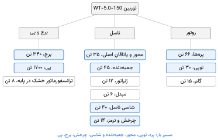
subassembly and interface tree of the WT-5.0-150 (A-450)
id name mass t tier load links
WTG turbine 0 yes
ROT rotor 1 yes NAC
BLD blade (x3) 66.0 2 yes HUB,LPS
HUB hub casting 30.0 2 yes BLD,PIT,MSH
PIT pitch bearings and drives 15.0 2 yes HUB,CTL
NAC nacelle 1 yes TWR
MSH main shaft and bearing 35.0 2 yes HUB,GBX
GBX gearbox 45.0 2 yes MSH,GEN,FRM
GEN generator 12.0 2 - GBX,CNV
CNV converter 6.0 2 - GEN,TRF
FRM bedplate and frame 40.0 2 yes GBX,YAW
YAW yaw bearing, drives, brakes 14.0 2 yes FRM,TWR
TWR tower (4 sections) 340.0 1 yes YAW,FND
TRF dry transformer, tower base 8.0 2 - CNV,FND
FND anchor cage and foundation 1700.0 1 yes TWR
LPS lightning protection 0.5 2 - BLD,FND
CTL controller and sensors 1.5 2 - PIT,YAW
mass above the foundation 613 t (ch 11: 611 t); about 15 interfaces
load path: BLD > HUB > MSH > GBX/FRM > YAW > TWR > FND
every part on the load path is fatigue-critical; each
link in the tree is an interface with a drawing, a
tolerance and two owners (ch 18, interface register)ایده. درخت دو کار میکند. یکی جرمها را جمع میکند و با فصلِ ۱۱ وارسی میشود: ۶۱۳ تن بالای پی در برابرِ ۶۱۱ تن (مثال 11.20). دیگری واسطها را نشان میدهد. هر پیوند در درخت یک نقشه، یک رواداری و دو مالک دارد (بخش 18.4). اجزای روی مسیرِ بار خستگیمحورند. هر نقصِ ساخت در آنها، از تخلخلِ ریختهگری تا پیچِ سست، به عمرِ توربین میرسد.
مثال 42.1 (ششصدوسیزده تن بالای پی) پرسش. جرمِ اجزای بالای پی را از درخت جمع کنید و با فصلِ ۱۱ مقایسه کنید.
پاسخ. \(66 + 30 + 15 + 35 + 45 + 12 + 6 + 40 + 14 + 340 + 8 + 0.5 + 1.5 = 613\,\text{t}\)، در برابرِ 611 t فصلِ ۱۱.
تفسیر. اختلافِ دو تنی، کمتر از نیم درصد، از گردکردنِ جرمها میآید. درخت همان فهرستی است که برنامهٔ جرثقیل، بودجهٔ جرم و ثبتِ واسطها از آن میخوانند. اگر جرمِ جزئی عوض شود، در یک جا عوض میشود.
42.3.2 اتصالِ ریشهٔ پره
پره با ۹۶ بوشِ ریشه روی یک دایرهٔ پیچ به یاتاقانِ گام بسته میشود. گشتاورِ خمشیِ ریشه \(M\) روی دایرهٔ \(D\) با \(n\) پیچ، بیشترین کششِ پیچ را میسازد:
\[ F_\text{max} = \frac{4\,M}{n\,D} \tag{42.1}\]
def insert_tension(moment_nm: float, n: int, circle_m: float) -> float:
"""Largest bolt tension from a bending moment on a bolt circle
(linear distribution): 4 M / (n D)."""
return 4 * moment_nm / (n * circle_m)blade-root joint: 96 inserts on a 3.2 m circle, preload 320 kN each (A-451)
joint factor 0.15: a bolt sees 15% of the external pull
until the joint opens
case moment MN m pull kN bolt kN opening
operating (ch 11) 15.4 201 350 x 1.9 to open
extreme (2 x) 30.8 401 380 x 0.9 to open
preload keeps the joint closed, so the bolt sees only a
small share of each load cycle - fatigue depends on the
preload being there: tightening records per insert and
re-tension checks are part of the blade's quality record;
at the extreme the teaching joint opens (x0.9): more
inserts, a larger circle or more preload is needed - the
maker's design must show the joint closed at the extremeمثال 42.2 (اتصال در بارِ حدی باز میشود) پرسش. با گشتاورِ کاریِ 15.4 MN·m از فصلِ ۱۱ و حدیِ دو برابرِ آن، کششِ هر بوش چقدر است؟ پیشبارِ 320 kN اتصال را بسته نگه میدارد؟
پاسخ. کاری: \(4 \times 15.4\times10^6/(96 \times 3.2) = 201\,\text{kN}\). حدی: 401 kN. با ضریبِ اتصالِ \(\phi = 0.15\)، اتصال وقتی باز میشود که کششِ بیرونی از \(320/(1 - 0.15) = 376\,\text{kN}\) بگذرد. پس در بارِ حدی باز میشود.
تفسیر. پیشبار اتصال را بسته نگه میدارد. پس پیچ فقط سهمِ کوچکی از هر چرخهٔ بار را میبیند و عمرِ خستگیاش به بودنِ پیشبار بستگی دارد. اتصالِ آموزشیِ این درس در بارِ حدی باز میشود. پس بوشِ بیشتر، دایرهٔ بزرگتر یا پیشبارِ بیشتر لازم است. طراحیِ سازنده باید نشان دهد اتصال در بارِ حدی بسته میماند. این وارسی در مبنای D-046 آمده است. سابقهٔ سفتکردنِ هر بوش هم بخشی از پروندهٔ پره است (بخش 42.7.3).
42.3.3 زنجیرهٔ تلفاتِ پیشرانه
drivetrain at rated: 5000 kW out, chain efficiency 0.938 (ch 11: 0.94)
stage efficiency power in kW loss kW
main bearing 0.997 5329 16
gearbox (3 stages) 0.980 5313 106
generator 0.975 5206 130
converter 0.985 5076 76
heat to remove at rated: 329 kW (6.6% of the output)
gearbox and generator heat leaves by oil and air coolers in
the nacelle (lesson C); every percent of efficiency is
50 kW of heat less to carry away at the top of the towerایده. فصلِ ۱۱ بازدهِ 0.94 را برای کلِ پیشرانه گرفت (مثال 11.21). اینجا همان عدد از چهار مرحله ساخته میشود. هر مرحله گرمایی دارد که باید از بالای برج بیرون برود: در توانِ نامی حدودِ ۳۳۰ کیلووات. جعبهدنده و ژنراتور بیشترِ آن را میسازند. پس خنککاری ناسل از همین بودجه اندازه میشود (بخش 42.5.3). هر درصد بازده ۵۰ کیلووات گرمای کمتر است. بازدهِ جعبهدنده روی میزِ آزمون اندازه گرفته میشود (بخش 42.5.1).
مثال 42.3 (سیصد کیلووات کجا میرود؟) پرسش. با چهار بازدهِ زنجیره، توانِ ورودیِ محور و تلفاتِ هر مرحله را در 5 MW خروجی بیابید.
پاسخ. \(5000/0.938 = 5329\,\text{kW}\) ورودی. تلفات: یاتاقان ۱۶، جعبهدنده ۱۰۶، ژنراتور ۱۳۰ و مبدل ۷۶ کیلووات، جمعاً حدودِ ۳۳۰.
تفسیر. ژنراتور و جعبهدنده با هم 236 از 329 kW، نزدیکِ سهچهارم، را میسازند. پس خنککنِ روغن و هوای ناسل بر پایهٔ همین دو اندازه میشوند (بخش 42.5.3). مبدل گرمای خودش را با مدارِ جدا میبرد.
42.3.4 تخصیصِ قابلیتِ اطمینان
downtime a turbine-year from failure rates and repair times
(teaching; repair time includes waiting, ch 37)
subsystem per year hours each hours down
pitch system 0.600 12 7.2
converter 0.400 16 6.4
control and sensors 0.800 6 4.8
yaw system 0.200 20 4.0
generator (minor) 0.150 30 4.5
gearbox (minor) 0.200 24 4.8
hydraulics and brakes 0.250 10 2.5
gearbox replacement 0.015 900 13.5
main bearing 0.010 800 8.0
generator replacement 0.010 500 5.0
blade replacement 0.005 1200 6.0
total 67 h: availability 99.24%; the four major
replacements are 49% of the downtime from 0.04 events a year
frequent small faults and rare big ones need different
answers: spares and access for the first, crane plans and
component quality for the secondمثال 42.4 (خرابیهای کوچکِ زیاد، خرابیهای بزرگِ کم) پرسش. کدام زیرسامانهها بیشترین ساعتِ توقف را میسازند؟ چهار تعویضِ بزرگ چه سهمی دارند؟
پاسخ. جمعِ توقف ۶۷ ساعت در سال است. چهار تعویضِ بزرگ، با فقط ۰٫۰۴ رویداد در سال، ۴۹ درصدِ آن را میسازند. سامانهٔ گام با ۷٫۲ ساعت بزرگترین سهم را از خرابیهای کوچک دارد.
تفسیر. دو دستهٔ خرابی دو پاسخِ متفاوت میخواهند. خرابیهای کوچکِ زیاد با یدک، دسترسی و آموزش کم میشوند. خرابیهای بزرگِ کم با کیفیتِ ساختِ جزء و برنامهٔ جرثقیل. سهمِ انتظار در زمانِ تعمیر از فصلِ ۳۷ است (بخش 37.5). نرخها آموزشیاند. نرخِ واقعی از دادهٔ ناوگانِ سازنده و از تضمینِ دسترسپذیری میآید (بخش 39.6.3).
42.3.5 تعویضهای بزرگ در عمرِ نیروگاه
major replacements in 12 turbines over 25 years (expected counts)
component expected chance of at least one
gearbox replacement 4.5 99%
main bearing 3.0 95%
generator replacement 3.0 95%
blade replacement 1.5 78%
about 12 crane campaigns in the plant's life: the
heavy-lift plan, road access and spare strategy of ch 31
and ch 52 are sized on this, and the component's quality
record (this chapter) is where its rate startsایده. با دوازده توربین و ۲۵ سال، تعویضِ جعبهدنده تقریباً حتمی است و انتظار حدودِ ۱۲ کارزارِ جرثقیل در عمرِ نیروگاه میرود. برنامهٔ بالابریِ سنگین، راهِ دسترسی و راهبردِ یدکِ فصلهای ۳۱ و ۵۲ بر همین پایه اندازه میشوند. نرخِ هر جزء از کیفیتِ ساختِ آن آغاز میشود. این فصل همان را میپاید.
مثال 42.5 (تعویضِ جعبهدنده تقریباً حتمی است) پرسش. با نرخِ تعویضِ جعبهدندهٔ ۰٫۰۱۵ در توربینسال، در ۱۲ توربین و ۲۵ سال چند تعویض انتظار میرود؟ احتمالِ دستکم یکی چقدر است؟
پاسخ. \(0.015 \times 12 \times 25 = 4.5\) و \(1 - 0.985^{300} = 99\,\%\).
تفسیر. یعنی برنامهٔ نیروگاه باید جرثقیلِ اصلی و راه را برای این کار نگه دارد، نه اینکه فرض کند رخ نمیدهد. کیفیتِ ساختِ جعبهدنده این نرخ را جابهجا میکند. ارزشِ آن در مثال 42.86 آمده است.
42.3.6 پوشِ کاریِ ساختگاه
operating envelope of the site (data pack 1.1.0)
air temperature -8.6 to 40.7 C; lowest pressure 866 hPa
densest-to-thinnest: air at 41 C and 866 hPa is 0.962 kg/m3
turbine envelope asked of the maker (teaching): operation
-20 to +40 C, survival -30 to +50 C, altitude to 1,500 m
the site's 40.7 C peak exceeds +40 C: a hot-climate
package (cooling, derating curve) is a purchase item, and
the derated hours are part of the energy model (ch 15)ایده. بستهٔ داده بیشینهٔ 40.7 °C و فشارِ 866 hPa میدهد. پس هوای داغترین ساعت چگالیِ 0.962 kg/m³ دارد. توربینی که تا 40 °C کار میکند، در داغترین ساعتها توانش را کم میکند. پس بستهٔ اقلیمِ گرم، یعنی خنککاریِ بزرگتر و منحنیِ کاهشِ توان، قلمی از خرید است. ساعتهای کاهشِ توان در مدلِ انرژی میآیند (فصل 15). پوشِ دمایی و ارتفاعیِ توربین را سازنده میدهد. عددهای اینجا آموزشیاند.
مثال 42.6 (هوای داغ و رقیق) پرسش. چگالیِ هوا در 40.7 °C و 866 hPa چقدر است؟ نسبت به هوای استاندارد چه فرقی دارد؟
پاسخ. \(\rho = 86\,640/(287.05 \times 313.85) = 0.962\,\text{kg/m}^3\)، یعنی ۲۱ درصد کمتر از 1.225.
تفسیر. در بادِ زیرِ نامی، توان با چگالی کم میشود. همان ساعتهایی که هوا رقیق است، خنککاری هم کمترین ظرفیت را دارد. پس دو اثر روی هم میافتند و مدلِ انرژی هر دو را میخواهد (بخش 11.2.13).
42.3.7 شاهدِ گواهیدهی
type and project certification: evidence and who gives it
evidence what from
design evaluation loads, control, structures certification body
power performance power curve test accredited test lab
mechanical loads load measurement campaign accredited test lab
acoustic noise noise measurement accredited test lab
blade full-scale static, fatigue tests blade test lab
gearbox prototype and run-in tests maker, witnessed
manufacturing factory and quality system certification body
project site conditions against design certification body
a type certificate says the design was shown to meet its
class; the project certificate says this site fits the
class; neither says each unit was built right - that is
the manufacturing evaluation and the units' own recordsایده. گواهیِ نوعی میگوید طرح نشان داده که با ردهٔ خود جور است. گواهیِ پروژه میگوید این ساختگاه در آن رده میگنجد. هیچکدام نمیگویند هر واحد درست ساخته شده است. آن کارِ ارزیابیِ ساخت و سوابقِ خودِ واحدهاست. طرحِ گواهیدهیِ IECRE OD-501 این لایهها را کنارِ هم میگذارد. آزمونِ کاملِ پره زیرِ بارِ ایستا و خستگی با IEC 61400-5:2020 و طراحیِ جعبهدنده با IEC 61400-4:2025 نام برده میشوند (بخش 11.4.14).
مثال 42.7 (سه گواهی، سه پرسش) پرسش. گواهیِ نوعی، گواهیِ پروژه و ارزیابیِ ساخت هر کدام به چه پرسشی پاسخ میدهند؟
پاسخ. گواهیِ نوعی: آیا طراحی ردهٔ خود را برآورده میکند؟ گواهیِ پروژه: آیا این ساختگاه در آن رده جا میگیرد؟ ارزیابیِ ساخت: آیا کارخانه و نظامِ کیفیتش میتوانند آن طراحی را بسازند؟
تفسیر. هیچکدام نمیگوید این واحدِ خاص درست ساخته شده است. آن را فقط سابقههای خودِ واحد میگویند: پویش، وزنکشی، آزمونِ کارکردِ آغازین و سفتکردنها. پس نیروگاه هم گواهیها را میخواهد و هم شناسنامهٔ هر جزء را (بخش 42.7.8).
42.3.8 واسطهای بحرانی
critical interfaces: what is checked and who owns it
interface check owners
blade - hub bolt circle, flatness, preload blade, hub
hub - main shaft flange fit, bolt preload hub, nacelle
gearbox - bedplate torque arm elastomers, alignment nacelle
gearbox - generator coupling alignment nacelle
nacelle - tower yaw flange flatness, bolt circle nacelle, tower
tower sections flange flatness, bolts tower (ch 30)
tower - foundation anchor cage, grout, levelness civil (ch 30)
each interface has two owners and one drawing; the check is
done where the two parts first meet - in a factory for
blade inserts, on the site for the tower flanges - and its
record names both parts' serialsایده. هر واسط دو مالک و یک نقشه دارد. وارسیِ آن جایی انجام میشود که دو جزء نخستین بار به هم میرسند: در کارخانه برای بوشهای پره و در ساختگاه برای فلنجهای برج. سابقهٔ وارسی شمارهٔ سریالِ هر دو جزء را دارد. واسطِ تختبودنِ فلنجِ بالای برج و یاتاقانِ چرخش به برگهٔ مسیرِ قطعهٔ برجِ فصلِ ۳۰ افزوده میشود (بخش 42.6.4، بخش 30.4.1).
مثال 42.8 (هفت واسط، دو مالک) پرسش. از هفت واسطِ بحرانی، کدامها در کارخانه و کدامها در محل نخستین بار به هم میرسند؟
پاسخ. جعبهدنده–شاسی و جعبهدنده–ژنراتور در کارخانهٔ ناسل، و توپی–محور اغلب همانجا. پره–توپی، ناسل–برج، بخشهای برج و برج–پی در محل.
تفسیر. واسطی که در محل به هم میرسد، تا آن روز فقط روی کاغذ با هم جور است. پس هر سازنده نیمهٔ خود را پیش از حمل میسنجد: دایرهٔ بوشها در کارخانهٔ پره (بخش 42.6.13)، تختیِ فلنجها در کارخانهٔ برج، و محل فقط تأیید میکند.
42.3.9 خستگیِ پیچهای ریشه با و بیپیشبار
root bolt fatigue: damage-equivalent pull range 120 kN, 1e+08 cycles
bolt stress area 1120 mm2, detail category 50 MPa (teaching)
joint state bolt share stress range MPa damage
closed (preload kept) 0.15 16.1 0.32
open (preload lost) 1.00 107.1 491.98
losing the preload multiplies the damage by 1,557:
the bolt that sees only a share of the load lasts the
turbine's life; the same bolt carrying all of it fails in
about 15 days - why the preload record is a critical
characteristicمثال 42.9 (پانزده روز بهجای بیست سال) پرسش. با بازهٔ کششِ همارزِ 120 kN و \(10^8\) چرخه، آسیبِ پیچ با اتصالِ بسته (سهمِ ۰٫۱۵) و باز (سهمِ ۱) چقدر است؟
پاسخ. 0.32 در ۲۰ سال با اتصالِ بسته و 492 با اتصالِ باز، یعنی عمری حدودِ ۱۵ روز.
تفسیر. پیشبار پیچ را از بیشترِ چرخهٔ بار پنهان میکند. پیچی که پیشبارش را از دست بدهد، همهٔ بار را میبیند و منحنیِ خستگی آن را در چند روز تمام میکند. پس سابقهٔ پیشبار مشخصهٔ بحرانی است (بخش 42.6.9) و سفتکردنِ دوباره در ۵۰۰ ساعت بخشی از راهاندازی است. ردهٔ جزئیات و سطحِ مقطع آموزشیاند. وارسی: \(0.15 \times 120\,000/1120 = 16.1\,\text{MPa}\).
- درختِ زیرمجموعهها چه دو کاری میکند؟
- چرا اجزای روی مسیرِ بار خستگیمحورند؟
- معادلهٔ 42.1 را توضیح دهید. کششِ بوش در گشتاورِ کاری چقدر است؟
- ضریبِ اتصال چیست و چرا پیشبار عمرِ خستگیِ پیچ را تعیین میکند؟
- چرا اتصالِ آموزشی در بارِ حدی باز میشود و چه باید کرد؟
- بازدهِ 0.94 از کدام چهار مرحله ساخته میشود؟ گرمای کل چقدر است؟
- چرا خرابیهای بزرگِ کم نیمی از توقف را میسازند؟
- انتظارِ چند کارزارِ جرثقیل در عمرِ نیروگاه هست و این چه چیزی را اندازه میکند؟
- چرا بستهٔ اقلیمِ گرم برای نیروگاهِ P قلمِ خرید است؟
- گواهیِ نوعی، گواهیِ پروژه و ارزیابیِ ساخت هر کدام چه میگویند؟
- وارسیِ هر واسط کجا انجام میشود؟
- چرا پیچی که پیشبارش را از دست بدهد در چند روز میشکند؟
42.4 ب. ساختِ پره، توپی و سامانهٔ گام
فصلِ ۱۱ مواد و فرایندهای پره، ریختهگری و آهنگری، یاتاقانها و آزمونهای غیرمخرب را معرفی کرد (بخش 11.4.2، بخش 11.4.3، بخش 11.4.12). همان فصل کلاهکهای پره را برای سختی اندازه کرد (مثال 11.29). این بخش آن عددها را به کارخانه میبرد. میپرسد مشخصههای ساخت، مانندِ کسرِ حجمیِ الیاف، تخلخل، درجهٔ پخت، خطِ چسب و نابالانسی، کداماند. چگونه سنجیده میشوند و کدام عدد چه چیزی را در نیروگاه تغییر میدهد؟
42.4.1 کسرِ حجمیِ الیاف و سختیِ کلاهک
کامپوزیت از الیاف و رزین ساخته میشود. کسرِ حجمیِ الیاف \(V_f\) از کسرِ جرمیِ الیاف \(w_f\) و چگالیها به دست میآید. سپس قاعدهٔ آمیختهها، که در فصلِ ۴ آمد (بخش 4.3.12)، مدولِ طولی را میدهد:
\[ V_f = \frac{w_f/\rho_f}{w_f/\rho_f + (1 - w_f)/\rho_m}, \qquad E_1 = V_f\,E_f + (1 - V_f)\,E_m \tag{42.2}\]
def fibre_volume(w_f: float, rho_f: float, rho_m: float) -> float:
"""Fibre volume fraction from the fibre mass fraction (no voids)."""
return (w_f / rho_f) / (w_f / rho_f + (1 - w_f) / rho_m)
def void_content(rho_meas: float, w_f: float, rho_f: float,
rho_m: float) -> float:
"""Void volume share: 1 - measured / void-free density."""
rho_th = 1 / (w_f / rho_f + (1 - w_f) / rho_m)
return 1 - rho_meas / rho_th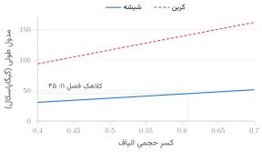
spar-cap glass laminate: stiffness against fibre fraction
(rule of mixtures of ch 4; the ch 11 caps assume 45 GPa)
fibre mass % V_f E along GPa cap thickness for equal EI
65% 0.456 34.6 130%
70% 0.513 38.5 117%
75% 0.575 42.8 105%
45 GPa needs V_f 0.608: a few points of resin more or
less move the cap's stiffness by several per cent, and
stiffness, not strength, keeps the tip off the tower
(ch 11) - fibre fraction is a controlled characteristic,
checked by burn-off or density on coupons of every capایده. کلاهکِ ۴۵ گیگاپاسکالیِ فصلِ ۱۱ با شیشه کسرِ حجمیِ ۰٫۶۱ میخواهد. چند درصد رزینِ بیشتر یا کمتر سختی را چند درصد جابهجا میکند. فصلِ ۱۱ نشان داد سختی، نه استحکام، نوکِ پره را از برج دور نگه میدارد. پس کسرِ حجمیِ الیاف مشخصهٔ کنترلشدهای است. روی نمونههای هر کلاهک با سوزاندن یا چگالی سنجیده میشود.
مثال 42.10 (هفتاد درصد جرمِ الیاف کافی نیست) پرسش. با ۷۰ درصد جرمِ الیاف، کسرِ حجمی و مدول چقدر است؟ کلاهک برای همان سختی چقدر سنگینتر میشود؟
پاسخ. \(V_f = 0.513\) و \(E_1 = 38.5\,\text{GPa}\). ضخامت ۱۱۷ درصد میشود. چگالیِ لایه از 2.00 به 1.87 g/cm³ کم میشود. پس جرمِ کلاهک \(1.17 \times 1.87/2.00 = 1.09\) برابر است.
تفسیر. رزینِ بیشتر هم سختی را کم میکند و هم جرم را بالا میبرد. هر دو به ضررِ پرهاند. پس کسرِ حجمیِ الیاف نخستین قلمِ کنترلِ کلاهک است.
42.4.2 تخلخل از چگالی
اگر چگالیِ اندازهگیریشدهٔ نمونه \(\rho\) و چگالیِ بیتخلخل \(\rho_\text{th}\) باشد:
\[ v_\text{void} = 1 - \frac{\rho}{\rho_\text{th}}, \qquad \rho_\text{th} = \left(\frac{w_f}{\rho_f} + \frac{1 - w_f}{\rho_m}\right)^{-1} \tag{42.3}\]
void content of 12 cap coupons from density (void-free 1.868 g/cm3)
coupon 1 2 3 4 5 6
voids % 0.7 0.6 0.3 0.3 0.5 1.3
coupon 7 8 9 10 11 12
voids % 0.8 0.4 1.7 0.0 0.5 3.4
above the teaching limit 2%: coupon(s) [12]
voids cut the resin-dominated strengths (shear between
plies) first; a coupon over the limit points at a zone of
the infusion that did not fill - the cap is scanned there
(lesson B, POD) before any decisionایده. تخلخل نخست استحکامهای وابسته به رزین را کم میکند، مانندِ برشِ میانِ لایهها. نمونهای که از حد بگذرد، به ناحیهای از تزریق اشاره دارد که پر نشده است. کلاهک پیش از هر تصمیمی در آن ناحیه پویش میشود (بخش 42.4.5). حدِ ۲ درصد اینجا آموزشی است. حدِ واقعی را طراحیِ پره و برگهٔ مادهٔ آن میدهد.
مثال 42.11 (تخلخل از ترازو) پرسش. نمونهٔ ۱۲ چگالیِ 1.805 g/cm³ دارد و چگالیِ بیتخلخل 1.868 است. تخلخل چقدر است؟
پاسخ. \(1 - 1.805/1.868 = 3.4\,\%\)، بالای حدِ آموزشیِ ۲ درصد.
تفسیر. آزمونِ چگالی ارزان و سریع است و نمونه را نابود نمیکند. اما فقط میانگینِ نمونه را میگوید. پویش جای تخلخل را در کلاهک پیدا میکند.
42.4.3 کلاهکِ شیشه یا کربن
spar caps for the same bending stiffness: glass or carbon
E along (V_f 0.60): glass 44 GPa, carbon 139 GPa
mass for equal EI: carbon 0.25 x glass -> 1.9 t instead of 7.9 t
material cost at 8 x the price a kg: 2.0 x the glass caps
lighter caps cut the blade's gravity moment and the whole
turbine's loads; carbon also conducts, so the caps join
the lightning system (lesson B, down conductors) - a
material choice that reaches three other subsystemsمثال 42.12 (یکچهارمِ جرم، دو برابرِ هزینه) پرسش. برای همان سختیِ خمشی، کلاهکِ کربنی چقدر جرم و هزینهٔ ماده دارد؟
پاسخ. سطحِ مقطع با \(1/E\) تغییر میکند. پس نسبتِ جرم \((\rho_c/E_c)/(\rho_g/E_g) = 0.25\) است و کلاهکها 1.9 t بهجای 7.9 t میشوند. با کربنِ هشت برابر گرانتر برای هر کیلوگرم، هزینهٔ ماده دو برابر است.
تفسیر. کلاهکِ سبکتر گشتاورِ گرانشیِ پره را کم میکند و بارهای همهٔ توربین را. اما کربن رساناست. پس کلاهکها به سامانهٔ حفاظتِ صاعقه میپیوندند (بخش 42.4.6). یک انتخابِ ماده به سه زیرسامانهٔ دیگر میرسد. پس تصمیمِ ماده در فهرستِ مواد ثبت میشود و تغییرش صلاحیتسنجیِ دوباره میخواهد. وارسی: \((1.528/139.4)/(1.99/44.5) = 0.245\).
42.4.4 درجهٔ پخت و دمای گذارِ شیشهای
رزین در پخت شبکه میشود. درجهٔ پخت \(\alpha\) را آزمونِ گرماسنجیِ روبشی (DSC) از گرمای باقیمانده \(H_\text{res}\) و گرمای کلِ واکنش \(H_\text{tot}\) میدهد. دمای گذارِ شیشهای با درجهٔ پخت بالا میرود. در این درس، تقریبی خطی میانِ رزینِ نپخته و کاملاً پخته به کار رفته است:
\[ \alpha = 1 - \frac{H_\text{res}}{H_\text{tot}}, \qquad T_g \approx T_{g0} + (T_{g\infty} - T_{g0})\,\alpha \tag{42.4}\]
degree of cure from DSC residual heat (teaching resin, total 420 J/g)
Tg estimated linearly between uncured and fully cured
sample residual J/g cure Tg C margin over 60 C
S1 16.9 0.960 80.8 +20.8
S2 1.9 0.995 84.5 +24.5
S3 12.0 0.971 82.0 +22.0
S4 6.1 0.986 83.5 +23.5
S5 8.7 0.979 82.8 +22.8
S6 7.2 0.983 83.2 +23.2
S7 0.0 1.000 85.0 +25.0
S8 11.0 0.974 82.3 +22.3
S9 46.0 0.890 73.5 +13.5
below 95% cure: ['S9']
an under-cured laminate softens near its service
temperature: the sample's place in the mould is found and
the cure record of that zone reviewed - cure is controlled
by the maker's qualified cycle; this lesson reads its
evidence, never its settingsمثال 42.13 (نمونهای که نزدیکِ دمای کار نرم میشود) پرسش. نمونهٔ S9 گرمای باقیماندهٔ 46 J/g دارد. درجهٔ پخت و حاشیهٔ دمای گذار نسبت به 60 °C چقدر است؟
پاسخ. \(\alpha = 1 - 46/420 = 0.890\) و \(T_g = -20 + 105 \times 0.890 = 73.5\,^\circ\text{C}\). حاشیه 13.5 K است، در برابرِ بیش از 20 K برای بقیه.
تفسیر. لایهای که کم پخته شده، نزدیکِ دمای کارش نرم میشود. پره در آفتابِ تابستان داغ است. جای نمونه در قالب پیدا میشود و سابقهٔ پختِ آن ناحیه بازبینی میشود. پخت با چرخهٔ صلاحیتیافتهٔ سازنده کنترل میشود. این درس شاهدِ آن را میخوانَد، هرگز تنظیمش را. این همان مرزی است که فصلِ ۴۱ برای پخت نگه داشت (بخش 41.4.9).
42.4.5 بازرسیِ خطِ چسب و احتمالِ آشکارسازی
پوستهها و جانهای برشیِ پره با خطِ چسب به هم وصل میشوند. جدایشِ چسب با پویشِ فراصوت پیدا میشود. هیچ روشی همهٔ عیبها را نمیبیند. احتمالِ آشکارسازی با اندازهٔ عیب بالا میرود. یک مدلِ رایج لگنرمال است:
\[ \text{POD}(a) = \Phi\!\left(\frac{\ln a - \ln a_{50}}{\beta}\right) \tag{42.5}\]
def pod(a_mm, a50_mm: float, beta: float):
"""Probability of detecting a flaw of size a (log-normal POD)."""
from statistics import NormalDist
nd = NormalDist()
a = np.atleast_1d(np.asarray(a_mm, dtype=float))
return np.array([nd.cdf((math.log(x) - math.log(a50_mm)) / beta)
for x in a])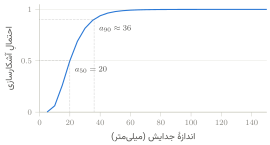
ultrasonic scan of the web bond line: probability of detecting
a disbond (log-normal POD, a50 20 mm, beta 0.45)
disbond mm POD one scan two independent scans
10 6% 12%
20 50% 75%
40 94% 100%
60 99% 100%
100 100% 100%
a90 = 36 mm: the size found nine times in ten
the design must tolerate a flaw just below the size the
inspection reliably finds; POD is measured on panels with
known flaws - a method's claim without it is a hopeایده. طراحیِ پره باید عیبی کمی کوچکتر از اندازهای را تحمل کند که بازرسی با اطمینان مییابد. اینجا \(a_{90}\) حدودِ ۳۶ میلیمتر است. احتمالِ آشکارسازی روی صفحههایی با عیبهای شناختهشده اندازه گرفته میشود. ادعای یک روش بدونِ آن امید است، نه شاهد. دو پویشِ مستقل احتمال را بالا میبرند، اما فقط اگر واقعاً مستقل باشند: دو بازرس با یک دستگاه و یک روش مستقل نیستند.
مثال 42.14 (دو پویش، اگر واقعاً مستقل باشند) پرسش. جداییِ ۲۰ میلیمتری با یک پویش و با دو پویشِ مستقل با چه احتمالی یافته میشود؟
پاسخ. یک پویش ۵۰ درصد. دو پویش \(1 - 0.5^2 = 75\,\%\).
تفسیر. حسابِ دو پویش فقط وقتی درست است که خطاها مستقل باشند. همان دستگاه، همان کاربر و همان ناحیهٔ کور استقلال را از بین میبرند. طراحی بر پایهٔ \(a_{90}\) یعنی ۳۶ میلیمتر است، نه بر پایهٔ کوچکترین عیبی که گاهی دیده میشود.
42.4.6 رسانای پایینروی صاعقه
receptor to root resistance of one blade, milliohm (teaching
limit 50): R1 14, R2 16, R3 21, R4 420, R5 16, R6 19
above the limit: ['R4']
a high reading is a broken or loose conductor joint, not
a material property: the strike would arc inside the
shell; the check is a factory release item and is
repeated after transport and installation (IEC 61400-24)ایده. مقاومتِ بالا از گیرنده تا ریشه یعنی اتصالی شکسته یا شل در رسانای پایینرو، نه خاصیتِ ماده. صاعقه در آن نقطه درونِ پوسته قوس میزند و پره را میشکافد (مثال 11.35). این وارسی قلمِ آزادسازی در کارخانه است و پس از حمل و نصب تکرار میشود (IEC 61400-24:2019). حدِ ۵۰ میلیاهم آموزشی است.
مثال 42.15 (یک خواندنِ بیستوپنجبرابر) پرسش. گیرندهٔ R4 420 mΩ میخوانَد و بقیه حدودِ ۱۷. این چه میگوید؟
پاسخ. حدودِ ۲۵ برابرِ بقیه و هشت برابرِ حد. یک اتصالِ شکسته یا شل در رسانای پایینرو.
تفسیر. مقاومتِ ماده چنین جهشی ندارد. اتصال باید پیش از رنگ پیدا و درست شود. پس آزمونِ صاعقه نقطهٔ توقف است (مثال 42.63).
42.4.7 جفتکردنِ پرهها در دستههای سهتایی
سه پرهٔ یک روتور ۱۲۰ درجه از هم فاصله دارند. اگر گشتاورهای اولِ جرم آنها \(S_k\) باشد، نابالانسیِ باقیمانده این است:
\[ U = \left|\sum_{k=0}^{2} S_k\,e^{\,j 2\pi k/3}\right| \tag{42.6}\]
36 blades weighed: first mass moments 479.9 to 490.2 t m
mean residual unbalance, sets taken at random 3.55 t m
sets of neighbours after sorting 0.59 t m
check on six blades: sorting 4.00, best of all partitions 4.00 t m
sorting by moment matches the best here and needs no search;
what is left is removed with balance mass at the root -
each blade's moment and set number go on its record so a
replacement blade can be matched later (ch 11, balance)مثال 42.16 (مرتبسازی بهجای جستوجو) پرسش. ۳۶ پره وزن شدهاند. دستههای تصادفی و دستههای همسایه پس از مرتبسازی چه نابالانسیای دارند؟
پاسخ. تصادفی 3.55 t·m و مرتبشده 0.59 t·m بهطورِ میانگین. روی شش پره، مرتبسازی با بهترینِ همهٔ تقسیمها برابر است: 4.00 t·m.
تفسیر. مرتبسازی تقریباً به بهترین پاسخ میرسد و جستوجو نمیخواهد. باقیمانده با جرمِ بالانس در ریشه برداشته میشود. گشتاورِ هر پره و شمارهٔ دستهاش در سابقهٔ آن میماند تا پرهٔ جایگزین بعداً جفت شود (مثال 11.34). وارسی: با گشتاورهای \(484.0\)، \(486.2\) و \(482.9\) فصلِ ۱۱، \(U = 2.91\,\text{t m}\).
42.4.8 نشانههای فراصوت در ریختهگریِ توپی
ultrasonic indications in hub casting H-022, equivalent size mm
zone limits (teaching):
flange (high stress) 3 mm
body (medium) 6 mm
web (low) 10 mm
15 indications; over the zone limit:
5.2 mm in the flange
3.6 mm in the flange
4.6 mm in the flange
the same flaw is harmless in the web and rejectable in the
flange: acceptance follows the stress map of the design,
which the casting drawing carries as zones - a repair by
welding a ductile-iron flange is normally not allowed, so
the disposition is the designer's (NCR-103, lab D)ایده. همان عیب در جان بیخطر است و در فلنج ردکردنی. پذیرش از نقشهٔ تنشِ طرح پیروی میکند. نقشهٔ ریختهگری آن را به صورتِ ناحیه دارد. تعمیرِ فلنجِ چدنِ نشکن با جوشکاری معمولاً مجاز نیست. پس تصمیم با طراح است (NCR-103، بخش 42.6.3). اندازههای ناحیه آموزشیاند.
مثال 42.17 (همان نشانه، سه ناحیه) پرسش. نشانهٔ 4.6 mm در فلنج، بدنه یا جان پذیرفتنی است؟
پاسخ. در فلنج با حدِ ۳ نه. در بدنه با حدِ ۶ و جان با حدِ ۱۰ بله.
تفسیر. پذیرش به جای نشانه بستگی دارد، نه فقط به اندازهاش. پس گزارشِ آزمونِ فراصوت باید جای هر نشانه را روی نقشهٔ ناحیهها بدهد. گزارشی که فقط بزرگترین اندازه را بگوید، تصمیم را ممکن نمیکند.
42.4.9 جازدنِ گرمِ یاتاقان
حلقهٔ داخلیِ یاتاقانِ اصلی با تداخلِ جازدن روی محور مینشیند. برای سوارکردن، حلقه گرم میشود تا قطرش به اندازهٔ تداخل بهعلاوهٔ لقیِ سوارکردن بزرگ شود:
\[ \Delta T = \frac{\delta + c}{\alpha\,d} \tag{42.7}\]
main-bearing inner ring on a 0.90 m shaft (teaching fit)
interference 0.3 mm plus 0.2 mm to slide it on
ring heated by 46 K: about 66 C
the fit holds the ring against creep under load; heating,
not force, mounts it - the maker of the bearing gives the
allowed temperature and method, and the fit is checked by
measuring both diameters at the same temperature firstایده. تداخل حلقه را زیرِ بار از خزش روی محور باز میدارد. گرما، نه نیرو، آن را سوار میکند. دمای مجاز و روش را سازندهٔ یاتاقان میدهد. پیش از آن، هر دو قطر در یک دما اندازه گرفته میشوند، چون اختلافِ چند درجه خودش چند صدم میلیمتر است (بخش 11.4.5).
مثال 42.18 (چهلوشش کلوین) پرسش. با تداخلِ 0.3 mm، لقیِ 0.2 mm و قطرِ 0.9 m، حلقه چقدر گرم میشود؟
پاسخ. \(\Delta T = 0.5\times10^{-3}/(12\times10^{-6} \times 0.9) = 46\,\text{K}\).
تفسیر. اگر قطرها در دو دمای متفاوت اندازه گرفته شوند، هر کلوین \(12\times10^{-6} \times 900 = 0.011\,\text{mm}\) خطا میسازد. پنج کلوین اختلاف یکششمِ تداخل است. پس اندازهگیریِ همدما بخشی از دستورِ کار است.
42.4.10 توپیِ ریختگی یا جوشی
hub: casting against a welded fabrication (teaching k u)
route material hours tooling per hub at 12 / 200
cast 18 120 900 100.2 / 29.7
fabricated 24 420 60 54.2 / 49.5
break-even at 35 hubs: a serial turbine is cast; a
prototype or a very small series may be fabricated - but a
fabricated hub has welds in the load path and a fatigue
design of its own (ch 30, weld details)ایده. توپیِ ریختگی قالبِ گرانی دارد و هر قطعهاش ارزان است. توپیِ جوشی بیقالب است و هر قطعهاش گران. نقطهٔ سربهسر حدودِ ۳۵ توپی است. پس توربینِ تولیدِ انبوه ریختگی است. اما توپیِ جوشی جوش روی مسیرِ بار دارد و طراحیِ خستگیِ خودش را میخواهد (بخش 30.4.2). این همان حسابِ مسیرِ ساختِ فصلِ ۴ است.
مثال 42.19 (سیوپنج توپی) پرسش. نقطهٔ سربهسرِ توپیِ ریختگی و جوشی را بیابید.
پاسخ. هزینهٔ متغیرِ ریختگی \(18 + 0.06 \times 120 = 25.2\) و جوشی \(24 + 0.06 \times 420 = 49.2\) هزار واحد است. پس \((900 - 60)/(49.2 - 25.2) = 35\).
تفسیر. با دوازده توربینِ یک نیروگاه، توپیِ جوشی ارزانتر به نظر میرسد. اما سازنده برای سفارشهای بسیار میریزد و قالب پیشتر پرداخته شده است. پس محاسبه به سطحِ سازنده تعلق دارد، نه به یک نیروگاه.
42.4.11 بودجهٔ جرمِ پره
blade mass budget (teaching; ch 11: 22 t, first moment 484 t m)
part mass t centre m moment t m
spar caps (glass) 7.9 24.0 189.6
shells and core 6.6 27.0 178.2
shear webs 2.2 24.0 52.8
root laminate and inserts 3.3 2.0 6.6
adhesive 0.9 26.0 23.4
coating, LPS, other 1.1 31.0 34.1
total 22.0 t; first moment 485 t m; centre 22.0 m
100 kg added at 70 m adds 7 t m - as much as 3,500 kg at the root
mass far out costs most: in gravity moment, in edgewise
fatigue and in unbalance; coating and repairs near the
tip are weighed into the blade's record (lesson B)ایده. جرمِ دور از ریشه بیشترین هزینه را دارد: در گشتاورِ گرانشی، در خستگیِ لبهای و در نابالانسی. صد کیلوگرم در ۷۰ متری همان گشتاوری را میسازد که ۳٬۵۰۰ کیلوگرم در ریشه. پس پوشش و تعمیرِ نزدیکِ نوک هم وزن و در سابقهٔ پره ثبت میشوند (بخش 42.4.7). جمعِ بودجه با فصلِ ۱۱ میخواند: ۲۲ تن و حدودِ ۴۸۵ تنمتر.
مثال 42.20 (صد کیلوگرم در نوک) پرسش. صد کیلوگرم پوشش یا تعمیر در ۷۰ متری چه گشتاوری میافزاید؟ با جرمِ در ریشه مقایسه کنید.
پاسخ. \(0.1 \times 70 = 7\,\text{t m}\)، همان گشتاورِ ۳٬۵۰۰ کیلوگرم در ۲ متری.
تفسیر. پس تعمیرِ نزدیکِ نوک دسته را از بالانس بیرون میبرد، اگر جبران نشود. جرمِ هر تعمیر ثبت و در بالانس حساب میشود (بخش 42.7.5).
42.4.12 سختیِ لایه در زاویه
لایهٔ یکجهته در راستای الیاف سخت است و در زاویه نرم. اگر \(E_1\) و \(E_2\) مدولهای طولی و عرضی، \(G_{12}\) مدولِ برشی و \(\nu_{12}\) ضریبِ پواسون باشند:
\[ \frac{1}{E(\theta)} = \frac{\cos^4\theta}{E_1} + \left(\frac{1}{G_{12}} - \frac{2\nu_{12}}{E_1}\right)\sin^2\theta\cos^2\theta + \frac{\sin^4\theta}{E_2} \tag{42.8}\]
def e_theta(theta_deg: float) -> float:
"""Modulus of a unidirectional ply loaded at theta to its fibres."""
c, s = math.cos(math.radians(theta_deg)), math.sin(math.radians(theta_deg))
inv = c ** 4 / E1 + (1 / G12 - 2 * NU12 / E1) * s * s * c * c + s ** 4 / E2
return 1 / inv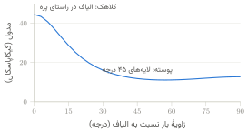
glass ply (V_f 0.60): E1 44.5, E2 12.8, G12 4.0 GPa (teaching)
angle deg modulus along the load GPa
0 44.5
15 28.8
30 16.1
45 11.8
60 11.1
90 12.8
turning the ply 15 degrees already loses 35% of the stiffness:
caps carry bending with fibres along the blade; shells use
+-45 plies for shear and torsion - and a ply laid a few
degrees off in the cap is a stiffness defect the ply map
record (lab D) is there to preventایده. چرخشِ ۱۵ درجهای لایه ۳۵ درصدِ سختی را میبرد. کلاهکها خمش را با الیافِ در راستای پره میبرند. پوستهها برای برش و پیچش لایههای ۴۵ درجه دارند. لایهای که در کلاهک چند درجه کج نهاده شود، عیبِ سختی است. نقشهٔ لایهها در طرحِ کیفیت برای پیشگیری از همین است (بخش 42.6.2).
مثال 42.21 (پانزده درجه، سیوپنج درصد) پرسش. مدولِ لایه در ۱۵ و ۴۵ درجه چند درصدِ مدولِ در راستای الیاف است؟
پاسخ. \(28.8/44.5 = 65\,\%\) و \(11.8/44.5 = 27\,\%\).
تفسیر. سختی با زاویه زود میافتد. پس جهتِ لایههای کلاهک در نقشهٔ لایهها ثبت و در بازرسی وارسی میشود. لایههای ۴۵ درجهٔ پوسته عمداً برای برش و پیچش گذاشته شدهاند، نه برای خمش.
42.4.13 چینِ الیاف
compression strength kept by a cap with a wrinkle of height A
over length L (teaching curve 1 / (1 + 6 A/L))
A/L strength kept disposition (teaching)
0.01 94% accept
0.03 85% repair by design
0.05 77% repair by design
0.10 62% reject
a wrinkle buckles the fibres and the cap loses compression
strength where it bends most; the scan finds wrinkles above
a size, and the design authority, not the shop floor,
decides whether a wrinkle in a cap may stay (lab D, NCR)ایده. چین الیاف را کمانش میدهد و کلاهک جایی که بیشترین خمش را دارد استحکامِ فشاری از دست میدهد. پویش چینهای بزرگتر از یک اندازه را مییابد. مرجعِ طراحی، نه کارگاه، تصمیم میگیرد چینی در کلاهک بماند یا نه. منحنیِ استحکام و آستانههای این درس آموزشیاند.
مثال 42.22 (چینِ کوچک، استحکامِ کمتر) پرسش. با منحنیِ آموزشیِ \(1/(1 + 6A/L)\)، چین با \(A/L = 0.03\) و \(0.10\) چه سهمی از استحکامِ فشاری را نگه میدارد؟
پاسخ. \(1/1.18 = 85\,\%\) و \(1/1.6 = 62\,\%\).
تفسیر. چینی با ارتفاعِ سه درصدِ طولش ۱۵ درصد استحکام را میبرد. تصمیم دربارهٔ چینِ کلاهک با مرجعِ طراحی است، نه کارگاه (بخش 42.6.3). منحنیِ واقعی را آزمونهای سازنده میدهند.
42.4.14 زمانِ پرشدن با قانونِ دارسی
در تزریقِ رزین زیرِ خلأ، رزین در لایههای خشک مانندِ جریان در محیطِ متخلخل پیش میرود. از قانونِ دارسی، با گرانروی \(\mu\)، تخلخل \(\phi\)، تراوایی \(K\) و اختلافِ فشارِ \(\Delta P\)، زمانِ رسیدن به فاصلهٔ \(L\) از ورودیِ خطی:
\[ t = \frac{\mu\,\phi\,L^2}{2\,K\,\Delta P} \tag{42.9}\]
def fill_time(length_m: float, k_m2: float = 2e-10, mu: float = 0.25,
phi: float = 0.45, dp: float = 0.9e5) -> float:
"""Darcy flow from a line inlet: t = mu phi L^2 / (2 K dP), seconds."""
return mu * phi * length_m ** 2 / (2 * k_m2 * dp)resin flow distance against fill time (teaching permeability,
viscosity and pressure; Darcy's law)
flow length m fill time min within the resin's working time?
0.5 13 yes
1.0 52 yes
2.0 208 no
4.0 833 no
time grows with the square of the distance: a 75 m blade is
filled from many inlets a metre or two apart, never from
one end; the inlet plan is the maker's qualified design, and
a dry spot (NCR-101) is a flow front that did not meetمثال 42.23 (زمان با مربعِ فاصله) پرسش. با عددهای آموزشی، رزین در چه زمانی به ۱ و ۲ متری میرسد؟ چرا پرهٔ ۷۵ متری از یک سر پر نمیشود؟
پاسخ. حدودِ ۵۲ و ۲۰۸ دقیقه. با دو برابرشدنِ فاصله، زمان چهار برابر میشود.
تفسیر. پرهٔ ۷۵ متری از ورودیهای زیادی در فاصلهٔ یکی دو متر پر میشود، تا جبهههای جریان پیش از سفتشدنِ رزین به هم برسند. نقشهٔ ورودیها طرحِ صلاحیتیافتهٔ سازنده است. لکهٔ خشکِ NCR-101 جایی است که دو جبهه به هم نرسیدند. وارسی: \(0.25 \times 0.45 \times 1^2/(2 \times 2\times10^{-10} \times 0.9\times10^5) = 3125\,\text{s} = 52\,\text{min}\).
42.4.15 گرمای پخت در لایههای ضخیم
heat of cure released in a laminate that cannot lose it
resin 30% of the mass, 420 J/g, c_p 1.0 J/g K (teaching)
adiabatic rise 126 K - the same arithmetic as mass
concrete (ch 29, adiabatic rise)
thin shells lose the heat to the mould; a thick root
laminate does not, and can overheat, crack or burn - why
thick sections are built and cured in steps the maker
qualifies; the record of their temperature is the evidenceایده. پوستهٔ نازک گرمای پخت را به قالب میدهد. لایهٔ ضخیمِ ریشه نمیدهد و میتواند بیش از حد گرم شود، ترک بخورد یا بسوزد. همان حسابِ بتنِ حجیمِ فصلِ ۲۹ است. پس بخشهای ضخیم در گامهایی ساخته و پخته میشوند که سازنده صلاحیتیابی کرده است. سابقهٔ دمای آنها شاهد است. این درس فقط چرایی را حساب میکند.
مثال 42.24 (صدوبیستوشش کلوین) پرسش. با ۳۰ درصد رزین، گرمای 420 J/g و ظرفیتِ 1.0 J/g·K، افزایشِ دمای بیدررو چقدر است؟
پاسخ. \(420 \times 0.30/1.0 = 126\,\text{K}\).
تفسیر. هیچ لایهای کاملاً بیدررو نیست، اما لایهٔ ضخیم به آن نزدیک میشود. پس دمای درونِ ریشه با حسگر ثبت میشود و سابقهاش با پره میماند.
42.4.16 آزمونِ ایستای کاملِ پره
full-scale static test of the first blade (teaching)
load to the extreme with the test factors of the design
tip deflection predicted 12.1 m (ch 11, stiffened caps)
measured 12.7 m (+5.0%)
agreement band +-10%: within
the extra 0.6 m is 12% of the 5.2 m clearance margin (lesson B, clearance)
the test checks the model, not only the blade: a deflection
above the prediction eats into the tip-tower clearance
of ch 11 and is fed back to the design before series
production (IEC 61400-5 names the tests)ایده. آزمون مدل را میسنجد، نه فقط پره را. خیزی ۵ درصد بیشتر از پیشبینی از فاصلهٔ نوک تا برجِ فصلِ ۱۱ کم میکند. پس پیش از تولیدِ انبوه به طراحی برمیگردد. آزمونهای کاملِ پره با IEC 61400-5:2020 نام برده میشوند.
مثال 42.25 (پنج درصد خیزِ بیشتر) پرسش. خیزِ پیشبینیشده 12.1 m و اندازهگیریشده 12.7 m است. انحراف چقدر است و از حاشیهٔ فاصلهٔ نوک تا برج چه سهمی میگیرد؟
پاسخ. \(12.7/12.1 - 1 = 5.0\,\%\)، درونِ بازهٔ ده درصد. خیزِ اضافهٔ 0.6 m یعنی ۱۲ درصد از حاشیهٔ 5.2 m.
تفسیر. آزمون «پذیرفته» است، اما به اندازهٔ ۷۰ درصدِ جمعِ بدترین رواداریهای ساخت (مثال 42.34) از حاشیه برداشته است. پس پیش از ساختِ سری مدل اصلاح میشود و بودجهٔ فاصله دوباره بسته میشود.
42.4.17 شتابدادنِ آزمونِ خستگی
اگر منحنیِ خستگی با شیبِ \(m\) باشد، \(N\) چرخه با بارِ \(k\) برابر همان آسیبی را دارد که \(N\,k^m\) چرخه با بارِ طراحی:
\[ N_\text{eq} = N_\text{test}\,k^{m} \tag{42.10}\]
blade fatigue test at resonance, 0.7 Hz (teaching)
2e+06 cycles take 33 days of running
load raised 1.15 x with S-N slope m = 10 (composite):
equivalent to 8.09e+06 cycles at the design load (4.0 x)
a steep S-N slope lets a little more load stand for many
more cycles - and the same steepness means a small load
error makes a large life error; the test load is measured,
not setمثال 42.26 (پانزده درصد بار، چهار برابر چرخه) پرسش. آزمونِ خستگیِ دو میلیون چرخهای در 0.7 Hz چند روز طول میکشد؟ با بارِ ۱٫۱۵ برابر و \(m = 10\)، چند چرخهٔ طراحی را نشان میدهد؟
پاسخ. \(2\times10^6/0.7/86400 = 33\) روز، و \(2\times10^6 \times 1.15^{10} = 8.1\times10^6\) چرخه.
تفسیر. شیبِ تندِ منحنیِ خستگیِ کامپوزیت میگذارد کمی بارِ بیشتر جای چرخههای زیاد را بگیرد. همین تندی یعنی خطای کوچکِ بار خطای بزرگِ عمر میسازد. پنج درصد خطا در بار با \(m = 10\) یعنی \(1.05^{10} = 1.63\) برابر در عمر. پس بارِ آزمون اندازه گرفته میشود، نه فقط تنظیم.
42.4.18 آزمونِ کششِ بوش
root insert pull-out, 12 coupon tests from one mould set (kN)
mean 444, sd 20; characteristic value mean - 2.0 sd = 403
against the 350 kN the design asks of one insert (teaching):
meets - the characteristic, not the mean, is compared
a lower bound from few tests needs a larger k; a new resin
or insert batch restarts the seriesایده. مقدارِ مشخصه، یعنی میانگین منهای چند انحرافِ معیار، با نیاز مقایسه میشود، نه میانگین. از آزمونهای کم، ضریبِ بزرگتری لازم است. رزین یا دستهٔ تازهٔ بوش سری را از نو آغاز میکند. این همان منطقِ کرانِ پایینِ توانِ فرایند است (بخش 42.7.2).
مثال 42.27 (میانگین نه، کرانِ پایین) پرسش. میانگینِ دوازده آزمون 444 kN و انحرافِ معیار 20 است. مقدارِ مشخصه با ضریبِ ۲ چقدر است؟
پاسخ. \(444 - 2 \times 20 = 404\,\text{kN}\) (برنامه با مقدارهای گردنشده 403 میدهد)، بالای نیازِ 350.
تفسیر. اگر میانگین مقایسه میشد، نیمی از بوشها میتوانستند زیرِ آن باشند. مقدارِ مشخصه کرانی است که بیشترِ بوشها از آن بالاترند.
42.4.19 زمانِ انجماد و جای تخلخل
زمانِ انجمادِ هر بخشِ ریختهگری با مربعِ مدولِ آن، یعنی حجم به سطحِ خنکشونده، بالا میرود (قاعدهٔ شورینوف). \(B\) ثابتی است که به قالب و فلز بستگی دارد:
\[ t = B\left(\frac{V}{A}\right)^2 \tag{42.11}\]
def solid_time(modulus_m: float, b_min_m2: float = 3.0e4) -> float:
"""Solidification time t = B (V/A)^2, minutes (B a mould constant)."""
return b_min_m2 * modulus_m ** 2solidification time of hub sections, t = B (V/A)^2 (teaching B)
section modulus V/A m time min
flange (200 mm) 0.100 300
body (120 mm) 0.060 108
web (60 mm) 0.030 27
the flange freezes last (11 x the web): the metal that
shrinks there must be fed;
a feeder with modulus 0.120 m freezes after it (432 min); without
one, shrinkage porosity collects in the flange - exactly
the zone with the tightest limit (lesson B, casting)مثال 42.28 (فلنج آخر منجمد میشود) پرسش. با مدولهای 0.100، 0.060 و 0.030 m برای فلنج، بدنه و جان، کدام آخر منجمد میشود؟ تغذیهکننده چه مدولی میخواهد؟
پاسخ. فلنج با ۳۰۰ دقیقه، ۱۱ برابرِ جان. تغذیهکنندهای با مدولِ حدودِ ۱٫۲ برابر، یعنی 0.120 m، پس از آن منجمد میشود.
تفسیر. فلزی که در فلنج آب میرود باید از جای دیگری تغذیه شود. بیتغذیهکننده، حفرهٔ انقباضی در فلنج جمع میشود، همان ناحیهای که سختترین حد را دارد (بخش 42.4.8). طراحیِ تغذیهکننده و راهگاه دانشِ ریختهگر است. این درس فقط چرایی را حساب میکند.
42.4.20 گرافیتِ کروی در چدنِ نشکن
nodularity of the graphite in eight hub castings (teaching need 85%)
H-018 95%, H-019 92%, H-020 88%, H-021 91%
H-022 89%, H-023 93%, H-024 78%, H-025 88%
below the need: ['H-024']
round graphite nodules make cast iron ductile; flakes make
it brittle: a low reading means low elongation and
toughness in the whole casting, whatever its shape - the
test bar cast with each heat is the evidenceایده. گرافیتِ کروی چدن را نشکن میکند و گرافیتِ ورقهای شکننده. خواندنِ پایین یعنی کشیدگی و چقرمگیِ کم در همهٔ ریختهگری، هر شکلی که داشته باشد. پس نمونهٔ آزمونی که با هر ذوب ریخته میشود شاهد است. توپیِ H-024 با ۷۸ درصد با گزارشِ عدمانطباق به طراح میرود. حدِ ۸۵ درصد آموزشی است.
مثال 42.29 (یک ذوب، یک توپی) پرسش. کدام ریختهگری زیرِ نیازِ ۸۵ درصد است؟
پاسخ. H-024 با ۷۸ درصد.
تفسیر. گرافیتِ ورقهای در همهٔ ریختهگری هست، نه در یک نقطه. پس تعمیر ممکن نیست و تصمیم با طراح است: استفاده با توجیهِ مکتوب یا رد. این با نشانههای فراصوتِ H-022 فرق دارد که به ناحیه بسته بودند (مثال 42.17).
42.4.21 پراکندگیِ پیشبار در دو روشِ سفتکردن
blade-root bolts: preload scatter of two tightening methods (nominal 320 kN)
method scatter lowest preload opening margin at operation
torque wrench 25% 240 1.41
hydraulic tension 10% 288 1.69
friction in the thread and under the nut decides how much
of a torque becomes preload: a quarter either way with a
wrench, a tenth with a tensioner - the joint is designed
on the lowest preload the method can give, and the method
is named in the work instruction (lesson E, torque)ایده. اصطکاک در رزوه و زیرِ مهره تعیین میکند چه سهمی از گشتاور پیشبار میشود. با آچار تا یکچهارم این سو یا آن سو، با کشندهٔ هیدرولیکی یکدهم. اتصال بر پایهٔ کمترین پیشباری طراحی میشود که روش میدهد. پس روش در دستورالعملِ کار نام برده میشود (بخش 42.7.3). این همان پراکندگیِ پیشبارِ فصلِ ۳۰ است (بخش 30.4.15).
مثال 42.30 (روش، نه عدد) پرسش. با پیشبارِ اسمیِ 320 kN و پراکندگیِ ۲۵ درصدِ آچار، کمترین پیشبار و ضریبِ بازشدن در بارِ کاری چقدر است؟
پاسخ. \(320 \times 0.75 = 240\,\text{kN}\) و \(240/(0.85 \times 200.5) = 1.41\).
تفسیر. با کشنده ۱٫۶۹. اگر طراح روی پیشبارِ اسمی حساب کرده باشد، روشِ آچار حاشیه را بیصدا کم میکند. پس روشِ سفتکردن بخشی از طرح است.
42.4.22 محرکِ گام و انرژیِ پرِ اضطراری
pitch drive of one blade (teaching moments)
blade and bearing friction moment 450 kN m
emergency feathering at 8 deg/s: 63 kW a blade
energy to feather 90 deg: 707 kJ a blade (0.59 kWh for three)
the rotor's safe stop rests on feathering with the grid
gone: each blade carries its own store (battery or
accumulator), sized and tested at the factory, and checked
in service - a weak store is a safety finding (ch 11)ایده. ایستِ ایمنِ روتور بر وضعِ بادنما کردنِ پرهها تکیه دارد، حتی وقتی شبکه رفته است. پس هر پره ذخیرهٔ خودش را دارد: باتری یا انباره. اندازهٔ آن در کارخانه حساب و آزموده میشود و در بهرهبرداری وارسی. انرژی کم است، کمتر از یک کیلوواتساعت برای سه پره، اما باید همیشه آنجا باشد. ذخیرهٔ ضعیف یافتهٔ ایمنی است (بخش 11.2.9).
مثال 42.31 (کمتر از یک کیلوواتساعت، اما همیشه) پرسش. با گشتاورِ 450 kN·m و سرعتِ ۸ درجه بر ثانیه، توان و انرژیِ پرِ ۹۰ درجهای هر پره چقدر است؟
پاسخ. \(450\times10^3 \times 0.1396 = 63\,\text{kW}\) و \(450\times10^3 \times \pi/2 = 707\,\text{kJ}\).
تفسیر. انرژی کم است، اما باید در لحظهٔ قطعِ شبکه در دسترس باشد. پس سلامتِ ذخیره، با آزمونِ ظرفیت، در برنامهٔ نگهداری میآید (فصل 52).
42.4.23 ترکِ بحرانی و آزمونِ فراصوتِ محور
در مکانیکِ شکست، ترکی به عمقِ \(a\) زیرِ تنشِ \(\sigma\) وقتی ناگهان رشد میکند که شدتِ تنش به چقرمگیِ شکست \(K_{IC}\) برسد:
\[ a_c = \frac{1}{\pi}\left(\frac{K_{IC}}{Y\,\sigma}\right)^2 \tag{42.12}\]
main shaft: crack size that fails at once (fracture mechanics)
K_IC 60 MPa sqrt(m), stress 150 MPa, Y 1.12 (teaching)
critical crack depth a_c = (K / (Y sigma))^2 / pi = 40.6 mm
ultrasonic testing of the forging finds about 3.0 mm:
a margin of 14 x in depth for fatigue growth
the forging is accepted on what UT finds; the time a crack
needs to grow from there to a_c is the fatigue design, and
the inspection interval in service follows from itایده. آهنگری بر پایهٔ آنچه آزمونِ فراصوت مییابد پذیرفته میشود: حدودِ ۳ میلیمتر. ترکِ بحرانی حدودِ ۴۱ میلیمتر است. زمانی که ترک از آنجا تا اندازهٔ بحرانی رشد میکند، طراحیِ خستگی است. فاصلهٔ بازرسی در بهرهبرداری از آن میآید. همان رابطهٔ فصلِ ۴ است (فصل 4).
مثال 42.32 (چهل میلیمتر و سه میلیمتر) پرسش. با \(K_{IC} = 60\,\text{MPa}\sqrt{\text{m}}\)، تنشِ 150 MPa و \(Y = 1.12\)، عمقِ ترکِ بحرانی چقدر است؟
پاسخ. \(a_c = (60/(1.12 \times 150))^2/\pi = 0.0406\,\text{m}\).
تفسیر. اگر تنش دو برابر شود، \(a_c\) چهار برابر کم میشود و به حدودِ ۱۰ میلیمتر میرسد. پس شانههای پرتنشِ محور حاشیهٔ کمتری دارند و بازرسیشان دقیقتر است.
42.4.24 پرداختِ سطح و خستگی
endurance limit of a shaft steel (UTS 700 MPa; 0.5 UTS base; size factor 0.75)
surface factor endurance limit MPa
polished 1.00 262
machined 0.80 210
forged skin 0.50 131
the same steel loses half its fatigue strength with the
forging skin left on: shoulders and fillets are machined,
their radius and roughness are on the drawing and in the
inspection record - finish is a fatigue characteristicایده. همان فولاد با پوستهٔ آهنگری نیمی از استحکامِ خستگیاش را از دست میدهد. پس شانهها و گوشهها ماشینکاری میشوند و شعاع و زبریشان در نقشه و سابقهٔ بازرسی میآید. پرداخت یک مشخصهٔ خستگی است. ضریبهای این درس آموزشیاند.
مثال 42.33 (نیمی از استحکامِ خستگی) پرسش. حدِ دوام را برای سطحِ صیقلی، ماشینکاریشده و پوستهٔ آهنگری بیابید.
پاسخ. \(0.5 \times 700 \times 0.75 = 262\,\text{MPa}\). ماشینکاریشده \(262 \times 0.8 = 210\). پوستهٔ آهنگری \(262 \times 0.5 = 131\,\text{MPa}\).
تفسیر. همان فولاد با پوستهٔ آهنگری نیمی از استحکامِ خستگی را از دست میدهد. شعاع و زبریِ شانهها در نقشه و سابقهٔ بازرسی میآیند.
42.4.25 بودجهٔ فاصلهٔ نوک تا برج
در فصلِ ۱۱ کلاهکها آنقدر سخت شدند که پره در بارِ حدی ۳۰ درصد از فاصلهٔ نوک تا برج را نگه دارد (مثال 11.29). این ۳۰ درصد ذخیرهٔ آزاد نیست. بخشی از آن خرجِ رواداریهای ساخت میشود.
tip-to-tower clearance: 17.3 m unloaded, 12.1 m design deflection,
margin 5.2 m
manufacturing contributor rule m
cap stiffness 3 % low (fibre fraction) defl x (1/0.97 - 1) 0.37
prebend 0.15 m short as is 0.15
blade on the hub 0.15 deg off 75 m x tan(0.15 deg) 0.20
tower top flange 0.10 deg tilted 75 m x tan(0.10 deg) 0.13
all at their limit together 0.85 m (16% of the margin)
root-sum-square 0.47 m (9%)
the 30 % kept in ch 11 is not spare: a part of it is the
factory's tolerances - which is why the cap's fibre fraction,
the prebend and the flange angles are measured and recordedمثال 42.34 (سختی بیش از پیشخم میخورد) پرسش. چهار رواداریِ ساخت چه سهمی از حاشیهٔ 5.2 m را میگیرند، اگر همه با هم در حد باشند و اگر مستقل جمع شوند؟
پاسخ. جمعِ ساده 0.85 m، یعنی ۱۶ درصد. جمعِ جذرِ مربعات 0.47 m، یعنی ۹ درصد.
تفسیر. بزرگترین سهم از سختیِ کلاهک است: سه درصد سختیِ کمتر 0.37 m خیزِ بیشتر میدهد، بیش از رواداریِ پیشخم. پس سابقهٔ کسرِ حجمیِ الیاف (بخش 42.4.1) در این بودجه هم مینشیند. زاویهٔ فلنجها هم با فاصلهٔ ۷۵ متری بزرگ میشود. وارسی: \(12.1 \times (1/0.97 - 1) = 0.37\,\text{m}\).
42.4.26 بسامدِ پره، آزمونِ سختیِ هر پره
بسامدِ طبیعیِ نخستِ پره با جذرِ سختی بر جرم تغییر میکند. اگر جرمِ هر پره با ترازو معلوم باشد، بسامد سختی را میدهد:
\[ f \propto \sqrt{\frac{EI}{m}} \quad\Rightarrow\quad \epsilon_{EI} \approx \left(\frac{f}{f_0}\right)^2 (1 + \epsilon_m) - 1 \tag{42.13}\]
\(\epsilon_{EI}\) انحرافِ نسبیِ سختی و \(\epsilon_m\) انحرافِ نسبیِ جرم است.
first flap frequency of 36 blades (nominal 0.75 Hz, teaching):
stiffness sd 2 %, mass sd 1 %, frequency read to 0.2 %
frequency spread: sd 1.08%; outside +-3 %: 0
stiffness from frequency and weight, E_est = (f/f0)^2 (1+m) - 1:
error of the estimate: mean +0.01 %, sd 0.39 % (points)
a frequency test on the stand and the weighing together give
every blade's stiffness to about half a per cent - a check
the static test (lesson B) does on one blade onlyایده. آزمونِ ایستا (بخش 42.4.16) سختی را روی یک پره میسنجد. آزمونِ بسامد روی پایه، همراهِ وزنکشی، سختیِ هر پره را با خطای حدودِ نیم درصد میدهد. پس انحرافِ کلاهکی که از چشمِ نمونهها گذشته، در همان کارخانه دیده میشود. بسامدِ اسمیِ 0.75 Hz آموزشی است.
مثال 42.35 (بسامد بدونِ ترازو گمراه میکند) پرسش. پرهای 0.742 Hz میخوانَد و یک درصد سنگینتر از اسمی است. انحرافِ سختی چقدر است؟ اگر جرم را اسمی فرض کنیم چه؟
پاسخ. \((0.742/0.75)^2 \times 1.01 - 1 = -1.1\,\%\). با جرمِ اسمی \((0.742/0.75)^2 - 1 = -2.1\,\%\).
تفسیر. بیوزنکشی، یک درصد جرمِ بیشتر یک درصد سختیِ کمترِ دروغین میسازد. پس دو آزمون با هم معنا دارند: وزنکشی (بخش 42.6.5) و بسامد.
42.4.27 زینهای آزمونِ ایستا
آزمونِ ایستا بار را با چند زینِ بارگذاری وارد میکند. لنگری که نیروهای نقطهای میسازند بینِ دو زین خطی است، اما لنگرِ هدف خمیده است. نیروها با برنامهریزیِ خطی چنان انتخاب میشوند که لنگرِ آزمون در هر ایستگاه دستکم برابرِ هدف باشد و بیشیِ کل کمینه شود.
static flap test: saddle forces so that the test moment is at
least the extreme moment at every station, with the least
overshoot (linear programming; target 30.8 (1 - r/75)^2 MN m)
stations m: 5 15 25 35 45 55 65
two at 35, 68 m: kN 337, 265
test/target 1.00 1.06 1.08 1.00 1.24 1.58 1.45 worst +58%
three A at 25, 45, 68 m: kN 219, 224, 214
test/target 1.00 1.03 1.00 1.06 1.00 1.27 1.17 worst +27%
three B at 30, 50, 68 m: kN 285, 183, 183
test/target 1.00 1.03 1.01 1.00 1.04 1.08 1.00 worst +8%
six at 15, 28, 40, 52, 62, 70 m: kN 110, 156, 131, 127, 78, 110
test/target 1.00 1.00 1.00 1.00 1.01 1.00 1.00 worst +1%
point loads give a moment that is straight between saddles
while the target curves: placement matters as much as the
number (three A +27%, three B +8%), and a station tested far
above its load is one the test may break for the wrong
reasonمثال 42.36 (جای زینها هموزنِ شمارِ آنها) پرسش. بدترین بارِ اضافهٔ هر چیدمان چقدر است؟
پاسخ. دو زین ۵۸ درصد. سه زینِ A ۲۷ و سه زینِ B ۸ درصد. شش زین ۱ درصد.
تفسیر. همان سه زین، اگر پنج متر بیرونتر بنشینند، بارِ اضافه را از ۲۷ به ۸ درصد میرسانند. ایستگاهی که بسیار بیش از بارش آزموده شود، ممکن است به دلیلی بشکند که در بهرهبرداری هرگز رخ نمیدهد، و آزمون چیزی دربارهٔ پره نگوید. طرحِ آزمون را آزمایشگاه با طراحِ پره مینویسد. لنگرِ هدف و ضریبها در این درس آموزشیاند.
- معادلهٔ 42.2 را توضیح دهید. برای ۴۵ گیگاپاسکال چه کسرِ حجمی لازم است؟
- چرا کسرِ حجمیِ الیاف مشخصهٔ کنترلشده است؟
- معادلهٔ 42.3 را توضیح دهید. تخلخلِ زیاد به چه اشاره دارد؟
- کلاهکِ کربنی چه چیزهایی جز جرم را تغییر میدهد؟
- درجهٔ پخت چگونه از گرمای باقیمانده خوانده میشود؟
- چرا این درس شاهدِ پخت را میخوانَد و تنظیمش را نه؟
- معادلهٔ 42.5 را توضیح دهید. \(a_{90}\) چه معنایی دارد؟
- چرا دو بازرس با یک دستگاه دو پویشِ مستقل نیستند؟
- مقاومتِ بالای گیرنده تا ریشه چه میگوید؟
- معادلهٔ 42.6 را توضیح دهید. چرا مرتبسازی کافی است؟
- چرا یک نشانهٔ فراصوت در فلنج ردکردنی و در جان پذیرفتنی است؟
- معادلهٔ 42.7 را توضیح دهید.
- نقطهٔ سربهسرِ توپیِ ریختگی و جوشی از کجا میآید؟
- چرا جرمِ نزدیکِ نوک گرانتر از جرمِ ریشه است؟
- معادلهٔ 42.8 را توضیح دهید. چرا پوستهها لایههای ۴۵ درجه دارند؟
- چه کسی دربارهٔ ماندنِ چین در کلاهک تصمیم میگیرد؟
- معادلهٔ 42.9 را توضیح دهید. چرا پره از ورودیهای زیاد پر میشود؟
- چرا لایهٔ ضخیم در پخت بیش از حد گرم میشود؟
- آزمونِ ایستای کامل چه چیزی را جز پره میسنجد؟
- معادلهٔ 42.10 را توضیح دهید. چرا بارِ آزمون اندازه گرفته میشود؟
- مقدارِ مشخصه چیست و چرا با نیاز مقایسه میشود؟
- معادلهٔ 42.11 را توضیح دهید. چرا تخلخل در فلنج جمع میشود؟
- گرافیتِ کروی چه چیزی را در چدن عوض میکند؟
- چرا اتصال بر پایهٔ کمترین پیشبارِ روش طراحی میشود؟
- چرا هر پره ذخیرهٔ انرژیِ خودش را دارد؟
- معادلهٔ 42.12 را توضیح دهید. فاصلهٔ بازرسی از کجا میآید؟
- چرا پرداختِ سطح مشخصهٔ خستگی است؟
- چرا ۳۰ درصد حاشیهٔ فاصلهٔ نوک تا برج ذخیرهٔ آزاد نیست؟
- معادلهٔ 42.13 را توضیح دهید. چرا وزنکشی برای خواندنِ سختی لازم است؟
- چرا جای زینها به اندازهٔ شمارِ آنها مهم است؟
42.5 پ. تولیدِ پیشرانه، ناسل و برج
فصلِ ۱۱ جعبهدنده، یاتاقانِ اصلی، ژنراتور، روغنکاری و خنککاری، ترمزِ چرخش و برج را در سطحِ طراحی آورد (بخش 11.3.18، بخش 11.3.16، بخش 11.3.6). فصلِ ۳۰ جوش، پوشش و پیچهای برج را (بخش 30.4). این بخش آزمونها و کنترلهای کارخانه را حساب میکند: آزمونِ پشتبهپشتِ جعبهدنده، تمیزیِ روغن، خنککاری در روزِ داغ، عمرِ عایقِ ژنراتور، بالانس، هممحوری، دقتِ دنده، خستگیِ جوشِ شاسی، ترمزِ چرخش و ردیابی.
42.5.1 آزمونِ پشتبهپشتِ جعبهدنده
در آزمونِ پشتبهپشتِ جعبهدنده، دو جعبهدنده محور به محور بسته میشوند. یکی سرعت را بالا میبرد و دیگری پایین میآورد. توان در حلقه میچرخد و شبکه فقط تلفات را میدهد:
\[ P_\text{grid} = P_\text{test}\left(\frac{1}{\eta^2} - 1\right) \tag{42.14}\]
two gearboxes back to back at 5000 kW: the grid supplies only the losses
gearbox efficiency grid power kW share of the test power
0.985 153 3.1%
0.980 206 4.1%
0.970 314 6.3%
the bench tests a pair at full torque for a fraction of the
power - and the measured grid power gives the pair's
efficiency, a check on the loss budget (lesson A); a run-in
at rising load with vibration and oil records follows
(lab D)مثال 42.37 (پنج مگاوات آزمون با دویست کیلووات) پرسش. با بازدهِ 0.98 برای هر جعبهدنده، آزمون در 5 MW چقدر توان از شبکه میگیرد؟
پاسخ. \(5000 \times (1/0.9604 - 1) = 206\,\text{kW}\)، یعنی ۴٫۱ درصدِ توانِ آزمون.
تفسیر. میز جفت را در گشتاورِ کامل با کسری از توان میآزماید. توانِ اندازهگیریشدهٔ شبکه بازدهِ جفت را هم میدهد. این وارسیِ بودجهٔ تلفاتِ بخش 42.3.3 است. اگر توانِ شبکه از ۲۰۶ به ۳۱۴ کیلووات برسد، بازده 0.97 است و جعبهدنده ۵۰ کیلووات گرمای بیشتر دارد. آزمونِ کارکردِ آغازین با بارِ بالارونده، ارتعاش و سابقهٔ روغن در پی میآید (بخش 42.6.1).
42.5.2 تمیزیِ روغن و صافی
نسبتِ بتای صافی \(\beta\) نسبتِ ذرههای بزرگتر از یک اندازه پیش و پس از صافی است. سهمِ برداشتهشده در هر گذر \(1 - 1/\beta\) است. در تعادل، ذرهای که وارد میشود برابر با ذرهای است که صافی برمیدارد.
gearbox oil: particles left when a filter of ratio beta runs in
the loop (relative to the beta 10 filter, same ingress)
beta removed a pass particles at balance (relative)
10 90.0% 1.00
75 98.7% 0.91
200 99.5% 0.90
1000 99.9% 0.90
at balance, what enters equals what the filter takes out:
a finer filter changes the level only a little once it
removes most particles - keeping dirt out (seals,
breathers, clean filling at the factory) matters more;
the oil sample at the end of the run-in is a release recordایده. وقتی صافی بیشترِ ذرهها را برمیدارد، صافیِ ریزتر سطحِ تعادل را فقط کمی پایین میآورد. نگهداشتنِ آلودگی بیرون، با آببندها، تنفسکنندهها و پرکردنِ تمیز در کارخانه، مهمتر است. نمونهٔ روغن در پایانِ آزمونِ کارکردِ آغازین سابقهٔ آزادسازیِ جعبهدنده است.
مثال 42.38 (نود و نود و نه و نیم) پرسش. صافیِ بتای ۱۰ و ۲۰۰ در هر گذر چه سهمی برمیدارند؟ سطحِ تعادل چقدر فرق دارد؟
پاسخ. ۹۰ و ۹۹٫۵ درصد. سطحِ تعادل با نسبتِ \(0.90/0.995 = 0.90\) کم میشود.
تفسیر. صافیِ بیست برابر بهتر فقط ده درصد کمتر ذره نگه میدارد، اگر ورود همان باشد. نصفکردنِ ورود، سطح را نصف میکند. پس آببندها و پرکردنِ تمیز ارزانترین بهبودند.
42.5.3 خنککاری در روزِ داغ
گرما با جریانِ جرمیِ \(\dot m\) و ظرفیتِ گرماییِ \(c_p\) و افزایشِ دمای \(\Delta T\) برده میشود: \(\dot Q = \dot m\,c_p\,\Delta T\).
nacelle cooling at rated (heat from lesson A)
gearbox 106 kW: oil 5.6 kg/s for a 10 K rise (cp 1.9 kJ/kg K)
generator 130 kW: air 8.6 kg/s for a 15 K rise
coolers sized for 35 C air; capacity falls with
(T_limit - T_air), limit 65 C
hours above 35 C in the data-pack year: 198; lowest capacity 81%
on those hours the turbine derates unless the coolers are
sized for the site's 40.7 C - a purchase choice (hot-climate
package, lesson A) with its own price and energy valueایده. خنککنهایی که برای 35 °C اندازه شدهاند، در ۱۹۸ ساعتِ سال گرمتر از آن کار میکنند و ظرفیتشان تا ۸۱ درصد پایین میآید. در آن ساعتها توربین توان را کم میکند، مگر خنککنها برای 40.7 °C اندازه شوند. این همان بستهٔ اقلیمِ گرمِ بخش 42.3.6 است، با قیمت و ارزشِ انرژیِ خودش.
مثال 42.39 (روغن و هوای ناسل) پرسش. برای ۱۰۶ کیلووات گرمای جعبهدنده با افزایشِ ۱۰ کلوینِ روغن، و ۱۳۰ کیلووات گرمای ژنراتور با ۱۵ کلوینِ هوا، چه جریانهایی لازم است؟
پاسخ. روغن \(106\,000/(1900 \times 10) = 5.6\,\text{kg/s}\). هوا \(130\,000/(1005 \times 15) = 8.6\,\text{kg/s}\).
تفسیر. هوای 8.6 kg/s در چگالیِ 0.96 حدودِ ۹ مترمکعب در ثانیه است. صافیهای ورودیِ آن در گردوغبارِ ساختگاه پر میشوند و ظرفیت را کم میکنند (مثال 42.40).
42.5.4 عمرِ عایقِ ژنراتور
عایقِ سیمپیچ با گرما پیر میشود. یک قاعدهٔ رایج میگوید عمر با هر ده کلوین گرمتر نصف میشود. این همان قانونِ آرنیوسِ فصلِ ۴ است در یک بازهٔ دمایی (بخش 4.3.14):
\[ L(T) = L_\text{ref}\,2^{(T_\text{ref} - T)/10} \tag{42.15}\]
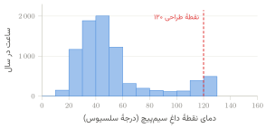
generator winding: hot spot over the data-pack year (teaching:
air + 20 K nacelle + 95 K x load^2; designed for 20 years at 120 C)
hottest hour 154 C; hours above 120 C: 1035
life used a year 3,108 h-equivalent: insulation life 56 years
10 K hotter everywhere (a blocked filter): 28 years
most hours run at part load, so the winding outlives its
design point; a cooling fault halves that life - margin
gone, not yet a failure: winding temperature sensors are a
factory-tested, monitored itemمثال 42.40 (سیمپیچی که در ساعتهای داغش پیر میشود) پرسش. سیمپیچ برای ۲۰ سال در 120 °C طراحی شده است. با سالِ بستهٔ داده عمرش چقدر است؟ اگر صافیِ هوا بسته شود و همهچیز ۱۰ کلوین گرمتر شود چه؟
پاسخ. ۵۶ سال و ۲۸ سال.
تفسیر. بیشترِ ساعتها در بارِ جزئیاند، پس سیمپیچ از نقطهٔ طراحیاش بیشتر میماند. عیبِ خنککاری آن عمر را نصف میکند. حاشیه میرود، اما هنوز خرابی نیست. حسگرهای دمای سیمپیچ قلمی آزموده در کارخانه و پایششده در بهرهبرداریاند. کلاسِ گرماییِ عایق و نقطهٔ طراحی را سازنده میدهد. عددهای اینجا آموزشیاند. وارسی: با معادلهٔ 42.15، ۱۰ کلوین بالاتر از ۱۲۰ عمرِ ۲۰ ساله را ۱۰ ساله میکند.
42.5.5 بالانسِ روتورِ ژنراتور
درجهٔ بالانس \(G\) حاصلضربِ خروج از مرکزِ مجاز \(e\) در سرعتِ زاویهای \(\omega\) است. پس نابالانسیِ مجاز برای روتوری به جرمِ \(m\):
\[ e = \frac{G}{\omega}, \qquad U_\text{per} = m\,e \tag{42.16}\]
generator rotor 4 t at 1155 rpm (teaching grade 2.5 mm/s)
permissible eccentricity e = G / w = 20.7 um
permissible residual unbalance 82,678 g mm (two planes: 41,339 each)
measured after assembly 145,000 g mm: correct and re-run
the grade sets a target speed times eccentricity; a faster
rotor must be more exact - balance is corrected in the
factory, recorded, and checked again by the vibration of
the run-in (lab D)مثال 42.41 (روتورِ تندتر، بالانسِ دقیقتر) پرسش. روتورِ ۴ تنی در 1155 rpm با درجهٔ آموزشیِ 2.5 mm/s چه نابالانسیِ مجازی دارد؟ اندازهٔ 145,000 g·mm پذیرفتنی است؟
پاسخ. \(\omega = 121\,\text{rad/s}\)، \(e = 2.5/121 = 20.7\,\mu\text{m}\)، و \(U = 4000\,\text{kg} \times 0.0207\,\text{mm} = 82.7\,\text{kg mm}\)، یعنی حدودِ 82,700 g·mm. اندازه بیشتر است: اصلاح و دوباره چرخاندن.
تفسیر. درجه حاصلضربِ سرعت در خروج از مرکز را ثابت میگیرد. پس روتورِ تندتر باید دقیقتر باشد. بالانس در کارخانه اصلاح و ثبت میشود و ارتعاشِ آزمونِ کارکردِ آغازین آن را دوباره میآزماید (بخش 42.6.1). روتورِ کندِ اصلی را جفتکردنِ پرهها بالانس میکند (بخش 42.4.7).
42.5.6 هممحوریِ کوپلینگ
gearbox - generator coupling, laser readings (vertical, teaching)
offset at the coupling +0.30 mm; angle +0.12 mm/m
generator feet 0.6 m and 1.8 m from the coupling
shims: front -0.37 mm, back -0.52 mm
after the move both readings within +-0.05 (teaching)
misalignment shows as a strong 2x line in the run-in
spectrum (lab D, G09); the frame flexes on the tower, so
the coupling allows for it and the alignment is checked
again at the site after the nacelle is liftedمثال 42.42 (دو شیم برای یک جابهجایی و یک زاویه) پرسش. جابهجاییِ +0.30 mm در کوپلینگ و زاویهٔ +0.12 mm/m است. پایههای ژنراتور در 0.6 و 1.8 m از کوپلینگاند. شیمِ هر پایه چقدر عوض میشود؟
پاسخ. جلو: \(-(0.30 + 0.12 \times 0.6) = -0.37\,\text{mm}\). عقب: \(-(0.30 + 0.12 \times 1.8) = -0.52\,\text{mm}\).
تفسیر. ناهممحوری در طیفِ آزمونِ کارکردِ آغازین به صورتِ خطِ قویِ دوبرابرِ دور دیده میشود (G09، بخش 42.6.1). شاسی روی برج خم میشود. پس کوپلینگ برای آن جا دارد و هممحوری پس از بالابردنِ ناسل در ساختگاه دوباره وارسی میشود. روالِ هممحورسازی را سازنده میدهد. این حساب فقط هندسهٔ آن است.
42.5.7 دقتِ دنده و صدای درگیری
gear accuracy grade and mesh noise (teaching: each finer grade
divides the transmission error by 1.4)
grades finer transmission error um mesh level dB
0 3.00 +0.0
1 2.14 -2.9
2 1.53 -5.8
3 1.09 -8.8
about 3 dB less mesh tone for each finer grade: a tonal
noise limit at the village (ch 33) can become a gear
grinding requirement; the tone is checked on the benchایده. هر ردهٔ دقیقترِ دنده خطای انتقالِ دنده را کم میکند و صدای درگیری را حدودِ ۳ دسیبل. محدودیتِ صدای تونال در روستا (فصل 33) میتواند به یک الزامِ سنگزنیِ دنده تبدیل شود. صدای درگیری روی میزِ آزمون وارسی میشود. نسبتِ ۱٫۴ در هر رده آموزشی است.
مثال 42.43 (سه درجهٔ دقت، نُه دسیبل) پرسش. سه درجهٔ دقتِ بالاتر خطای انتقال و ترازِ صدای درگیری را چقدر تغییر میدهند؟
پاسخ. \(3.00/1.4^3 = 1.09\,\mu\text{m}\) و \(20\log_{10}(1.09/3.00) = -8.8\,\text{dB}\).
تفسیر. حدِ صدای تُنی در روستا (فصل 33) میتواند به الزامِ سنگزنیِ دنده تبدیل شود. هر درجه هزینه دارد. پس الزام از تحلیلِ صدا میآید، نه از «هرچه دقیقتر بهتر».
42.5.8 خستگیِ جوشِ شاسی
bedplate weld: damage-equivalent range 32 MPa at 1e+08 cycles (teaching)
detail category MPa life cycles damage in 20 years
71 5.84e+07 1.71
90 1.91e+08 0.52
112 5.70e+08 0.18
the same load is unsafe on a rough weld and safe on a
ground one: the detail category is a manufacturing
outcome - weld profile, grinding and NDT records make it
true (ch 30, weld fatigue)مثال 42.44 (یک بار، دو جوش) پرسش. با بازهٔ تنشِ همارزِ 32 MPa در \(10^8\) چرخه، آسیبِ ۲۰ ساله با ردهٔ جزئیاتِ ۷۱ و ۹۰ چقدر است؟
پاسخ. 1.71 و 0.52.
تفسیر. همان بار روی جوشِ زبر ناامن است و روی جوشِ سنگخورده امن. ردهٔ جزئیات نتیجهٔ ساخت است. نیمرخِ جوش، سنگزنی و سوابقِ آزمونِ غیرمخرب آن را راست میکنند (بخش 30.2.8). منحنیِ دوخطیِ فصلِ ۳۰ (structures.sn_life) اینجا دوباره به کار رفته است.
42.5.9 ترمزِ چرخش
هر کالیپر با دو سطحِ اصطکاک، ضریبِ \(\mu\)، نیروی گیرهٔ \(F\) و شعاعِ \(r\) گشتاورِ \(2\mu F r\) نگه میدارد:
\[ n_\text{cal} = \left\lceil \frac{k\,M_\text{yaw}}{2\,\mu\,F\,r} \right\rceil \tag{42.17}\]
yaw brakes holding 6.0 MN m with margin 1.5 (teaching)
one caliper: 2 faces x 0.4 x 300 kN at 2.0 m = 0.48 MN m
calipers needed: 19
friction falls with oil or glazing on the disc, so the
factory records the clamping test and the pads' burnishing;
in service the yaw drives also hold, and a slipping nacelle
is a safety event (ch 32)ایده. اصطکاک با روغن یا لعابشدنِ دیسک کم میشود. پس کارخانه آزمونِ نیروی گیره و جاافتادنِ لنتها را ثبت میکند. در بهرهبرداری، موتورهای چرخش هم نگه میدارند. ناسلی که بلغزد رویدادِ ایمنی است (فصل 32). عددها آموزشیاند.
مثال 42.45 (نوزده کالیپر) پرسش. برای نگهداشتنِ 6 MN·m با حاشیهٔ ۱٫۵، و هر کالیپر با دو سطح، \(\mu = 0.4\)، 300 kN و شعاعِ 2 m، چند کالیپر لازم است؟
پاسخ. هر کالیپر \(2 \times 0.4 \times 300 \times 2 = 480\,\text{kN m}\). پس \(\lceil 1.5 \times 6000/480 \rceil = 19\).
تفسیر. اگر روغن ضریبِ اصطکاک را به ۰٫۳ برساند، ۱۹ کالیپر فقط حاشیهٔ \(19 \times 0.36/6 = 1.14\) میدهند. پس پاکیِ دیسک و سابقهٔ آزمونِ نیروی گیره قلمِ ایمنیاند.
42.5.10 شاخصِ پلاریزاسیون
شاخصِ پلاریزاسیون نسبتِ مقاومتِ عایقی پس از ۱۰ دقیقه به پس از ۱ دقیقه است.
insulation resistance after 1 and 10 minutes (G ohm, teaching)
dry winding: 2.0 -> 5.0: index 2.5
damp winding: 0.8 -> 0.9: index 1.12
a dry winding keeps polarising, so its resistance rises;
a damp one leaks, so it stays flat - the index catches
moisture picked up in transport or storage before the
machine is energised; the test is done by qualified
people under the maker's procedure, not from this bookایده. سیمپیچِ خشک همچنان قطبی میشود و مقاومتش بالا میرود. سیمپیچِ مرطوب نشت میکند و مقاومتش تخت میماند. شاخص رطوبتی را که در حمل یا انبار جذب شده، پیش از برقدار کردن نشان میدهد. این آزمون را افرادِ صلاحیتدار با روشِ سازنده انجام میدهند. این کتاب روشِ آن را نمیدهد.
مثال 42.46 (شاخصی که رطوبت را میبیند) پرسش. سیمپیچی 0.8 و 0.9 GΩ در دقیقهٔ ۱ و ۱۰ میخوانَد. شاخص چقدر است و چه میگوید؟
پاسخ. \(0.9/0.8 = 1.125\). مقاومت تخت مانده است: سیمپیچ احتمالاً مرطوب است.
تفسیر. تصمیمِ خشککردن و دوباره آزمودن با سازنده است. این کتاب روالِ آزمون را نمیدهد. تنها حساب و معنای شاخص را میدهد.
42.5.11 ردیابیِ سریالی
serial traceability of the turbine (teaching)
about 4,500 records a turbine: serials, heat
numbers, inspection and test reports, torque records
54,000 records for the twelve turbines
a heat of bearing steel found weak: which turbines? only a
record that links heat > bearing > gearbox > turbine
answers in a day; the turbine's 'birth certificate' is
handed over with it (ch 49, ch 50)ایده. اگر یک ذوبِ فولادِ یاتاقان ضعیف از آب درآید، کدام توربینها آن را دارند؟ فقط سابقهای که ذوب را به یاتاقان، یاتاقان را به جعبهدنده و جعبهدنده را به توربین وصل کند، در یک روز پاسخ میدهد. شناسنامهٔ توربین با آن تحویل داده میشود (فصلهای ۴۹ و ۵۰؛ بخش 40.3.7).
مثال 42.47 (پنجاهوچهار هزار سابقه) پرسش. با حدودِ ۴٬۵۰۰ سابقه برای هر توربین، نیروگاه چند سابقه دارد؟ ذوبِ ضعیفِ فولادِ یاتاقان چگونه به توربینها میرسد؟
پاسخ. \(4500 \times 12 = 54\,000\). زنجیر: ذوب ← حلقهٔ یاتاقان ← یاتاقان ← جعبهدنده ← توربین.
تفسیر. اگر یک حلقه از این زنجیر نباشد، پاسخ بهجای یک روز به بازکردنِ جعبهدندهها میرسد. پس ردیابی در قرارداد یک تحویلدادنی است، با قالبی که سامانهٔ داراییهای نیروگاه بخوانَد (فصل 35).
42.5.12 ژنراتور در سالِ کامل
تلفاتِ ژنراتور دو بخش دارند: تلفاتِ بیبار \(P_0\)، که با بار تغییر نمیکند، و تلفِ بار \(P_k\)، که با مربعِ بار بالا میرود:
\[ P_\text{loss} = P_0 + P_k\,\ell^2, \qquad \eta = \frac{\ell P_r}{\ell P_r + P_\text{loss}} \tag{42.18}\]
generator losses over the data-pack year (teaching: no-load
40 kW, load losses 90 kW at rated, growing with load^2;
a rough cubic power curve - ch 11 has the turbine's own)
efficiency at rated 97.47%; over the year 96.41%
energy out 13,037 MWh; losses 486 MWh (7734 running hours)
part load is where a turbine spends its hours, and there
the fixed no-load losses weigh more: a generator is judged
by its loss split from the factory test, not by one
efficiency at ratedمثال 42.48 (بازدهِ نامی و بازدهِ سالانه) پرسش. بازدهِ ژنراتور در توانِ نامی و در سالِ بستهٔ داده چقدر است؟ چرا فرق دارند؟
پاسخ. 97.47 % در نامی و 96.41 % در سال.
تفسیر. توربین بیشترِ ساعتهایش را در بارِ جزئی میگذراند. آنجا تلفاتِ ثابتِ بیبار سهمِ بیشتری دارند. پس ژنراتور با تفکیکِ تلفاتش در آزمونِ کارخانه سنجیده میشود، نه با یک بازده در نامی. منحنیِ توانِ این درس مکعبیِ ساده است. منحنیِ واقعی در فصلِ ۱۱ است (بخش 11.2.14). وارسی: \(5000/(5000 + 40 + 90) = 0.9747\).
42.5.13 تابِ کابل در سالِ کامل
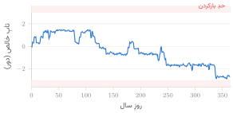
cable twist from the data-pack year of wind direction (yaw deadband 8 deg)
untwist at +-3 turns: 0 untwist(s) a year
largest twist in the year 2.9 turns; at the year's end -2.7
this site's winds turn back and forth more than round: the
limit is approached, not passed, in a typical year
the cable loop in the tower takes a few turns; the
controller unwinds when the count reaches the limit -
the loop's length, clamps and drip loop are installation
hold points, and the twist count is a monitored signalایده. حلقهٔ کابل در برج چند دور تاب را تحمل میکند. کنترلگر وقتی شمار به حد برسد آن را باز میکند. در این ساختگاه بادها بیشتر رفتوبرگشت دارند تا چرخش، و حد در یک سالِ عادی نزدیک میشود اما رد نمیشود. طولِ حلقه، بستها و حلقهٔ چکه نقطههای توقفِ نصباند. شمارِ تاب سیگنالی پایششده است.
مثال 42.49 (یکدهمِ دور) پرسش. در سالِ بستهٔ داده کابل چند بار باز میشود و بیشترین تاب چقدر است؟
پاسخ. هیچ بار. بیشترین تاب 2.9 دور در برابرِ حدِ ۳.
تفسیر. حاشیه یکدهمِ دور است. سالی با چرخشِ بیشترِ باد به حد میرسد. پس شمار، نه تقویم، بازکردن را راه میاندازد، و شمارندهای که پس از قطعِ برق صفر شود یافتهٔ ایمنی است.
42.5.14 آفتاب روی پوشش ناسل
sun on the nacelle cover (120 m2 facing the sky, 900 W/m2, teaching)
ventilation 6 kg/s of air through the nacelle
cover colour absorbed heat into nacelle kW air rise K
white 25% 6.8 1.1
grey 60% 16.2 2.7
a few kelvin more nacelle air come straight off the
cooling margin on the hottest hours (lesson C): the
cover's colour is a thermal choice as much as a lookایده. چند کلوین هوای گرمترِ ناسل مستقیم از حاشیهٔ خنککاری در داغترین ساعتها کم میشود (بخش 42.5.3). پس رنگِ پوشش انتخابی گرمایی است، نه فقط ظاهری.
مثال 42.50 (رنگِ سفید، یکونیم کلوین) پرسش. پوششِ سفید و خاکستری چه اختلافی در دمای هوای ناسل میسازند؟
پاسخ. 1.1 در برابرِ 2.7 K، یعنی 1.6 K اختلاف.
تفسیر. در ۱۹۸ ساعتِ بالای ۳۵ درجه، که ظرفیتِ خنککاری تا ۸۱ درصد پایین میآید (بخش 42.5.3)، همین 1.6 K از حاشیهٔ خنککاری کم میشود. پس رنگ در قراردادِ خرید میآید.
42.5.15 جرثقیلِ خدمت در ناسل
nacelle service crane of 10 t (teaching)
liftable inside: converter, pitch drive, yaw drive, cooling pump
need an external crane:
main shaft and bearing (35 t)
gearbox (45 t)
generator (12 t)
bedplate and frame (40 t)
yaw bearing, drives, brakes (14 t)
a part that the service crane can lift is a day's job; one
that needs a main crane is a campaign (lesson A): splitting
a generator into modules or a gearbox into stages is
design for maintainability, decided at the drawing boardایده. جزئی که جرثقیلِ خدمت بلند میکند، کارِ یک روز است. جزئی که جرثقیلِ اصلی میخواهد، یک کارزار است (بخش 42.3.5). ژنراتورِ ۱۲ تنی فقط دو تن از ظرفیتِ ۱۰ تنی بیشتر است. تقسیمِ ژنراتور به ماژول یا جعبهدنده به مرحلهها طراحی برای نگهداریپذیری است و روی میزِ نقشه تصمیم گرفته میشود.
مثال 42.51 (دو تن بیشتر) پرسش. کدام جزءِ سنگین به ظرفیتِ ۱۰ تنیِ جرثقیلِ خدمت نزدیکتر است؟
پاسخ. ژنراتورِ 12 t، فقط دو تن بیشتر. بقیه از ۱۴ تا ۴۵ تناند.
تفسیر. اگر ژنراتور در دو بخشِ کمتر از ده تن باز شود، تعویضش کارِ یک روز با جرثقیلِ خدمت است، نه یک کارزار با جرثقیلِ اصلی. این تصمیم روی میزِ نقشهٔ سازنده گرفته میشود و خریدار میتواند آن را بپرسد.
42.5.16 جای مبدل و ترانسفورماتور
cable from nacelle to tower base, 110 m, at rated (teaching cables)
what runs down voltage V current A copper mm2 loss kW
690 V from the converter 690 4404 2160 66.7
33 kV from a nacelle transformer 33000 92 95 0.7
low voltage needs nine parallel cables and still loses more;
a nacelle transformer saves copper and loss but lifts 8 t
to the top and adds a medium-voltage fire and access question
- Plant P's turbines keep it at the tower base (D-029, dry
type, ch 25); the split is a design choice the plant inheritsمثال 42.52 (نُه کابلِ موازی یا یک ترانسفورماتور در بالا) پرسش. ولتاژِ پایین از ناسل تا پایه و ولتاژِ متوسط از یک ترانسفورماتورِ ناسل را با جریان و تلفات مقایسه کنید.
پاسخ. ولتاژِ پایین 4,404 A و 66.7 kW تلفات در نامی دارد، با نُه کابلِ موازی. ولتاژِ متوسط 92 A و 0.7 kW.
تفسیر. ترانسفورماتورِ ناسل مس و تلفات را صرفهجویی میکند، اما ۸ تن را به بالا میبرد، با پرسشهای آتش و دسترسیِ ولتاژِ متوسط. این تقسیم انتخابِ طراحیِ توربین است که نیروگاه به ارث میبرد. شبکهٔ جمعآوریِ فصلِ ۲۴ از همان نقطه آغاز میشود (فصل 24). وارسی: \(I = 5\times10^6/(\sqrt3 \times 690 \times 0.95) = 4404\,\text{A}\).
42.5.17 نمونهگیریِ سفتکردنِ دوباره
tower flange bolts: 450 a turbine, 9 loose (teaching)
a yearly check of 10% (45 bolts) finds at least one: 62%
a sample tells whether looseness exists, not which bolts:
one loose bolt found opens a full check of that flange;
bolts are marked so a turned nut shows at a glance - a
cheap aid that makes every visit a 100 % visual checkایده. نمونه میگوید شلی هست یا نه، نه اینکه کدام پیچ. یک پیچِ شلِ یافته بازرسیِ کاملِ آن فلنج را باز میکند. پیچها نشانهگذاری میشوند تا مهرهٔ چرخیده با یک نگاه دیده شود. این کمکِ ارزان هر بازدید را به وارسیِ چشمیِ صددرصد تبدیل میکند (بخش 30.4.14).
مثال 42.53 (چهلوپنج پیچ از چهارصدوپنجاه) پرسش. اگر ۹ پیچ از ۴۵۰ شل باشند، وارسیِ تصادفیِ ۴۵ پیچ با چه احتمالی دستکم یکی را مییابد؟
پاسخ. تقریباً \(1 - 0.9^9 = 61\,\%\). حسابِ دقیق ۶۲ درصد است.
تفسیر. یعنی تقریباً در دو سال از پنج سال، شلی دیده نمیشود. نشانهگذاریِ پیچها این ضعف را میپوشاند.
42.5.18 عمقِ لایهٔ سختشدهٔ دنده
دندهٔ کربورهشده سطحی سخت و مغزی چقرمه دارد. عمقِ لایهٔ سخت عمقی است که در آن سختی به حدی معین میرسد. روی نمونهٔ آزمونِ هر ذوب با خطِ سختیسنجی خوانده میشود.
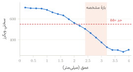
carburised gear: depth where hardness falls to 550 HV
(traverse on a test coupon; teaching spec 2.4 - 3.2 mm)
heat case depth mm verdict
HT-41 2.82 accept
HT-42 2.96 accept
HT-43 2.09 NCR
a shallow case wears and pits under contact stress; the
depth is read off the curve, not off one point, and a
failed coupon puts every gear of that heat on holdمثال 42.54 (یک ذوب، همهٔ دندهها) پرسش. کدام ذوب از بازهٔ آموزشیِ 2.4 تا 3.2 mm بیرون است؟ پیامدش چیست؟
پاسخ. HT-43 با 2.09 mm.
تفسیر. لایهٔ سختِ کمعمق زیرِ تنشِ تماسی میساید و حفرهدار میشود. عمق از منحنی خوانده میشود، نه از یک نقطه. نمونهٔ ردشده همهٔ دندههای آن ذوب را نگه میدارد. این ردیابیِ ذوب در بخش 42.5.11 است. بازهٔ مشخصه را طراحِ جعبهدنده میدهد. عملیاتِ حرارتی دانشِ کارخانه است و این کتاب آن را نمیدهد.
42.5.19 توانِ ضخامتِ کلاهک در ایستگاهها
spar-cap thickness by station, 25 blades (UT gauge, +-6 % tol.)
station m nominal mm mean mm sd Cpk
10 65 65.1 0.90 1.41
30 47 46.8 0.64 1.36
50 25 25.1 0.61 0.76
the station at 50 m has the lowest capability: thin
plies near the tip drop off in steps, and a missing step
is a large share of a thin cap - the ply map's checks
are densest where the cap is thinnestایده. ایستگاهِ ۵۰ متری کمترین توان را دارد. نزدیکِ نوک، لایهها پلهپله کم میشوند و یک پلهٔ جاافتاده سهمِ بزرگی از کلاهکِ نازک است. پس وارسیهای نقشهٔ لایهها جایی متراکمترند که کلاهک نازکتر است. ضخامتهای اسمی از کلاهکهای فصلِ ۱۱ آمدهاند (مثال 11.29).
مثال 42.55 (توانِ نوک) پرسش. توانِ فرایندِ ضخامتِ کلاهک در ایستگاهِ ۵۰ متری را وارسی کنید.
پاسخ. رواداری \(\pm 6\,\%\) از 25 mm یعنی \(\pm 1.5\,\text{mm}\). \(C_{pk} = (1.5 - 0.1)/(3 \times 0.61) = 0.76\).
تفسیر. در ۱۰ متری همان فرایند 1.41 میدهد. انحرافِ مطلق در نوک کمی کمتر است (0.61 در برابرِ 0.90 mm)، اما رواداری از 3.9 به 1.5 mm کوچک میشود. پس نوک ضعیفترین ایستگاه است و وارسیها آنجا متراکمترند.
42.5.20 هزینهٔ کیفیتِ کارخانهٔ پره
cost of quality of one year's blades (36, teaching k u)
category k u share
prevention 130 5%
appraisal 240 10%
internal failure 730 31%
external failure 1280 54%
total 2,380 k u, 66 k u a blade
failures cost 15 times prevention: a blade exchanged in
the field costs more than all prevention together - the
same lesson as the skids of ch 40, in a heavier productایده. خرابیها ۱۵ برابرِ پیشگیری هزینه دارند. یک تعویضِ پره در میدان از همهٔ پیشگیری گرانتر است. همان درسِ اسکیدهای فصلِ ۴۰ است، در محصولی سنگینتر (بخش 40.5.13). عددها آموزشیاند. ساختارِ چهار دسته عمومی است.
مثال 42.56 (پانزده برابر) پرسش. هزینهٔ خرابیها چند برابرِ پیشگیری است؟ سهمِ خرابیِ بیرونی؟
پاسخ. \((730 + 1280)/130 = 15\) برابر. خرابیِ بیرونی ۵۴ درصد.
تفسیر. یک تعویضِ پره در میدان 900 k u است، هفت برابرِ همهٔ پیشگیری. هر پیشگیریای که یک تعویض را بگیرد، خرجِ خود را میدهد.
42.5.21 دمای سیمپیچ از مقاومت
مقاومتِ مس با دما بالا میرود. اگر مقاومتِ سرد \(R_1\) در \(T_1\) و گرم \(R_2\) باشد، دمای میانگینِ سیمپیچِ گرم:
\[ T_2 = \frac{R_2}{R_1}\,(234.5 + T_1) - 234.5 \tag{42.19}\]
winding temperature from its resistance (copper, 234.5 K rule)
cold 15.20 mOhm at 20 C; hot 20.10 mOhm after the heat run
T_hot = R_hot / R_cold x (234.5 + T_cold) - 234.5 = 102.0 C
average rise 82.0 K (the hot spot is higher)
the resistance gives the winding's mean temperature, which
no sensor on the surface can: the heat run's record is how
the generator's thermal class margin is shown (lesson C)ایده. مقاومت دمای میانگینِ سیمپیچ را میدهد، که هیچ حسگرِ سطحی نمیدهد. پس سابقهٔ آزمونِ گرمایی راهِ نشاندادنِ حاشیهٔ کلاسِ گرماییِ ژنراتور است (بخش 42.5.4). نقطهٔ داغ از میانگین بالاتر است. فاصلهٔ آن دو را طراحیِ سازنده میدهد. این آزمون را افرادِ صلاحیتدار با روشِ سازنده انجام میدهند.
مثال 42.57 (دمای سیمپیچ از دو خواندن) پرسش. با 15.20 mΩ در 20 °C و 20.10 mΩ پس از آزمونِ گرمایی، دمای میانگینِ سیمپیچ چقدر است؟
پاسخ. \(T_2 = (20.10/15.20) \times 254.5 - 234.5 = 102.0\,^\circ\text{C}\)؛ افزایش 82 K.
تفسیر. یک درصد خطا در یکی از دو خواندن حدودِ سه کلوین خطا در دما میسازد. پس هر دو خواندن با یک دستگاه و پس از نشستنِ دمای سرد انجام میشوند. وارسی: \(0.01 \times 336.5 = 3.4\,\text{K}\).
42.5.22 تماسِ دندانه زیرِ لایهٔ سخت
دو دندانه در تماس مانندِ دو استوانهاند (تماسِ هرتزی). نوارِ تماس نیمپهنای \(b\) دارد و فشارِ بیشینهٔ \(p_\text{H}\). برشِ زیرِ مرکزِ نوار در عمقِ \(z\):
\[ \begin{aligned} b &= \sqrt{\frac{4F'R'}{\pi E^*}}, \qquad p_\text{H} = \frac{2F'}{\pi b} \\ \tau(z) &= p_\text{H}\left(\zeta - \frac{\zeta^2}{\sqrt{1+\zeta^2}}\right), \qquad \zeta = \frac{z}{b} \end{aligned} \tag{42.20}\]
\(F'\) نیرو بر واحدِ پهنای دندانه است، \(R'\) شعاعِ همارز و \(E^*\) مدولِ همارزِ دو فولاد. برش در \(\zeta = 0.786\) به بیشینهٔ \(0.300\,p_\text{H}\) میرسد، یعنی زیرِ سطح، نه روی آن.
def hertz_line(f_n_mm: float, r_mm: float, e_star: float = 115e3):
"""Line contact of two steel cylinders (Hertz): half width b (mm),
peak pressure (MPa), depth (mm) and value (MPa) of the largest shear."""
b = math.sqrt(4 * f_n_mm * r_mm / (math.pi * e_star))
p = 2 * f_n_mm / (math.pi * b)
return b, p, 0.786 * b, 0.300 * p
def shear_profile(zeta: float) -> float:
"""Shear under the centre of the contact, as a share of p (z = zeta b)."""
return zeta - zeta ** 2 / math.sqrt(1 + zeta ** 2)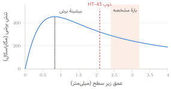
tooth contact as two cylinders: 2500 N/mm of face, equivalent radius 40 mm
load case b mm p MPa shear max at mm MPa case needed (2.5 x)
nominal 1.05 1513 0.83 454 2.07 mm
edge load x 1.3 1.20 1725 0.94 517 2.36 mm
the shear peaks below the surface, not on it: the hard case
must reach well past that depth or cracks start under it
(teaching rule 2.5 x). A misaligned mesh loads one edge -
2.36 mm is needed then, which is what the 2.4 mm floor of
lesson C covers; HT-43 at 2.09 mm meets only the nominal caseمثال 42.58 (چرا کفِ مشخصه ۲٫۴ میلیمتر است؟) پرسش. با \(F' = 2500\,\text{N/mm}\)، \(R' = 40\,\text{mm}\) و \(E^* = 115\,\text{GPa}\)، نیمپهنا، فشار و عمقِ برشِ بیشینه چقدر است؟ با قاعدهٔ آموزشیِ ۲٫۵ برابر، چه عمقی از لایهٔ سخت لازم است؟
پاسخ. \(b = 1.05\,\text{mm}\)، \(p_\text{H} = 1513\,\text{MPa}\)، بیشینهٔ برش 454 MPa در 0.83 mm. عمقِ لازم 2.07 mm. با بارِ لبهایِ ۱٫۳ برابر 2.36 mm.
تفسیر. \(b\) با جذرِ نیرو بزرگ میشود: ۳۰ درصد بارِ بیشتر برش را ۱۴ درصد عمیقتر میبرد. دندانهای که ناهممحوری بارش را به یک لبه رانده، همان عمقِ کفِ ۲٫۴ میلیمتری را لازم دارد (بخش 42.5.6). ذوبِ HT-43 با 2.09 mm فقط بارِ اسمی را تاب میآورد. پس هممحوری و عمقِ لایهٔ سخت یک داستاناند. عمقِ لازمِ واقعی را طراحِ جعبهدنده با روشِ ردهبندیِ دنده میدهد. وارسی: \(b = \sqrt{4 \times 2500 \times 40/(\pi \times 115\,000)} = 1.05\,\text{mm}\).
42.5.23 تلفاتِ جعبهدنده: دو راهِ اندازهگیری
gearbox loss 106 kW at rated: two ways to measure it (teaching)
direct: input and output power, each to 0.3%
loss as a difference of two large numbers: +-22 kW
(21% of the loss)
back to back: the supply makes up 472 kW of losses (meter 0.2%)
machine losses known to 5%; one gearbox: +-4.6 kW (4.4%)
the rig measures the small number directly instead of
subtracting two big ones - its loss result is 5 times
sharper, which is why efficiency claims cite itایده. اختلافِ دو عددِ بزرگ خطای هر دو را به ارث میبرد. تلفاتِ 106 kW از تفاضلِ دو توانِ پنجمگاواتی با خطای ۲۱ درصد به دست میآید. آزمونِ پشتبهپشت (بخش 42.5.1) همان عددِ کوچک را مستقیم میخوانَد: منبع فقط تلفات را جبران میکند. پس خطا به حدودِ ۴ درصد میرسد. ادعای بازده باید روشِ اندازهگیریاش را بگوید. ضریبهای خطا آموزشیاند.
مثال 42.59 (پنج برابر دقیقتر) پرسش. خطای تلفات در دو روش چقدر است؟
پاسخ. مستقیم: \(\sqrt{(0.003 \times 5313)^2 + (0.003 \times 5207)^2} = 22\,\text{kW}\)، یعنی ۲۱ درصد. پشتبهپشت: 4.6 kW، یعنی ۴٫۴ درصد.
تفسیر. با ۲۱ درصد خطا، جعبهدندهای که ۱۰ درصد بیشتر تلف دارد از جعبهدندهٔ خوب جدا نمیشود. تضمینِ تلفات بدونِ روشی که آن را بسنجد، قابلاجرا نیست.
42.5.24 سهمِ بار میانِ سیارهها
در طبقهٔ سیارهای، بار میانِ سه سیاره تقسیم میشود. اگر سوراخِ پینِ یک سیاره روی حامل کمی جلوتر باشد، آن سیاره زودتر درگیر میشود و بیشتر میبرد. ضریبِ سهمِ بار با سختیِ درگیری \(k\)، خطای جای پین \(\delta\) و نیروی درگیری \(F\) (مدلِ آموزشی):
\[ K_\gamma = 1 + \frac{2}{3}\,\frac{k\,\delta}{F} \tag{42.21}\]
first planetary stage, three planets: input torque 4.43 MN m
mesh force per planet 1.34 MN; mesh stiffness 8 kN/um (teaching)
pin error um load factor planet bearing life
5 1.020 94%
10 1.040 88%
20 1.080 77%
40 1.159 61%
the planet whose pin sits ahead meets the load first and
carries more; life falls with the load to the power 10/3
(ch 11) - pin-hole position on the carrier is a critical
dimension, measured and recorded per carrierمثال 42.60 (بیست میکرومتر، یکچهارم از عمر) پرسش. با نیروی درگیریِ 1.34 MN و سختیِ 8 kN/µm، خطای ۲۰ میکرومتری چه ضریبی میسازد؟ عمرِ یاتاقانِ آن سیاره چقدر کم میشود؟
پاسخ. \(K_\gamma = 1 + (2/3) \times 8 \times 20/1340 = 1.08\). عمر \(1.08^{-10/3} = 0.77\) برابر.
تفسیر. بیست میکرومتر، کمتر از ضخامتِ یک تار مو، ۲۳ درصد از عمرِ یاتاقان میبرد. پس جای سوراخهای پین روی حامل ابعادِ بحرانیاند و برای هر حامل اندازهگیری و ثبت میشوند. خورشیدِ شناور و پینهای انعطافپذیر این اثر را کم میکنند. اینها انتخابهای طراحِ جعبهدندهاند.
42.5.25 گرد و غبار روی خنککن
cooler fouled by dust: capacity x factor; the turbine derates
to what the cooler can carry (load share from the data-pack
wind, heat proportional to load; teaching)
cooler kept hours derated energy lost MWh/yr (12 turbines)
100% 19 67
85% 61 391
70% 312 2071
a clean cooler sized for 35 C hardly ever limits: the hot
hours are rarely windy ones; dust takes the margin away, so
cleaning the fins is on the maintenance plan and the
cooler's pressure drop is a monitored signal (ch 37)مثال 42.61 (خنککنِ تمیز، خنککنِ خاکی) پرسش. اگر گرد و غبار ظرفیتِ خنککن را به ۷۰ درصد برساند، چند ساعت کاهشِ توان و چه انرژیای از دست میرود؟
پاسخ. ۳۱۲ ساعت و 2,071 MWh در سال برای دوازده توربین، در برابرِ ۱۹ ساعت و 67 MWh با خنککنِ تمیز.
تفسیر. خنککنِ تمیز بهندرت محدود میکند: ساعتهای داغ کمتر بادیاند. گرد و غبار حاشیه را میبرد و انرژیِ ازدسترفته سی برابر میشود. پس شستنِ پرههای خنککن در برنامهٔ نگهداری میآید و افتِ فشارِ هوای آن سیگنالی پایششده است (فصل 37). بارِ گرمایی متناسب با بار فرض شده است، که آموزشی است.
42.5.26 خروج از مرکزِ فاصلهٔ هواییِ ژنراتور
فاصلهٔ هوایی در چند نقطهٔ گرداگردِ استاتور خوانده میشود. هماهنگِ نخستِ خواندنها جابهجاییِ روتور را میدهد:
\[ e_x = -\frac{2}{N}\sum_{k} g_k \cos\theta_k, \qquad e_y = -\frac{2}{N}\sum_{k} g_k \sin\theta_k \tag{42.22}\]
generator air gap read at 8 points around the stator (mm):
4.21, 4.34, 4.30, 4.06, 3.79, 3.66, 3.71, 3.94
mean gap 4.00 mm; first harmonic: rotor off centre by 0.35 mm
toward 235 deg, 8.8% of the gap
(teaching limit 10%)
the first harmonic of the readings is the offset of the
rotor; what is left is the stator's out-of-roundness - the
offset sets the unbalanced magnetic pull of ch 8ایده. روتور 0.35 mm از مرکز دور است: 8.8 % از فاصلهٔ هوایی، زیرِ حدِ آموزشیِ ده درصد. بقیهٔ تغییرِ خواندنها گردنبودنِ استاتور است. کششِ مغناطیسیِ نامتقارنِ فصلِ ۸ با همین جابهجایی بزرگ میشود (بخش 8.4.16). در ده درصد حدودِ 43 kN بود، بیش از وزنِ روتورِ سهتنیِ فصلِ ۸ (29 kN). پس خواندنها و حاصلِ هماهنگِ نخست در سابقهٔ ژنراتور میآیند.
- معادلهٔ 42.14 را توضیح دهید. چرا شبکه فقط تلفات را میدهد؟
- توانِ شبکه در آزمونِ پشتبهپشت چه چیزی را دربارهٔ بازده میگوید؟
- چرا صافیِ ریزتر سطحِ تعادلِ ذرهها را کمی پایین میآورد؟
- خنککنِ 35 °C در ساختگاهِ P چند ساعت کم میآورد؟
- معادلهٔ 42.15 را توضیح دهید. چرا سیمپیچ از نقطهٔ طراحیاش بیشتر میماند؟
- معادلهٔ 42.16 را توضیح دهید. چرا روتورِ تندتر دقیقتر بالانس میشود؟
- ناهممحوری در طیف چگونه دیده میشود؟
- چرا هممحوری در ساختگاه دوباره وارسی میشود؟
- چرا ردهٔ جزئیات نتیجهٔ ساخت است؟
- معادلهٔ 42.17 را توضیح دهید.
- شاخصِ پلاریزاسیون چه چیزی را نشان میدهد؟
- ردیابی از ذوبِ فولاد تا توربین چه پرسشی را پاسخ میدهد؟
- معادلهٔ 42.18 را توضیح دهید. چرا بازدهِ سالانه از نامی کمتر است؟
- چرا تابِ کابل سیگنالی پایششده است؟
- چرا رنگِ پوشش ناسل انتخابی گرمایی است؟
- طراحی برای نگهداریپذیری در ناسل یعنی چه؟
- ترانسفورماتورِ ناسل چه چیزی را صرفهجویی و چه چیزی را اضافه میکند؟
- چرا نشانهگذاریِ پیچها هر بازدید را وارسیِ کامل میکند؟
- عمقِ لایهٔ سخت چگونه خوانده میشود و نمونهٔ ردشده چه پیامدی دارد؟
- چرا کلاهک در ایستگاهِ نزدیکِ نوک کمترین توان را دارد؟
- چهار دستهٔ هزینهٔ کیفیت کداماند و کدام بزرگترین است؟
- معادلهٔ 42.19 را توضیح دهید. چرا مقاومت دمای میانگین را میدهد؟
- معادلهٔ 42.20 را توضیح دهید. چرا بیشینهٔ برش زیرِ سطح است؟
- چرا ناهممحوری عمقِ لازمِ لایهٔ سخت را بیشتر میکند؟
- چرا آزمونِ پشتبهپشت تلفات را دقیقتر از دو توانسنج میدهد؟
- معادلهٔ 42.21 را توضیح دهید. چرا جای سوراخِ پین بُعدِ بحرانی است؟
- چرا خنککنِ تمیز بهندرت محدود میکند و خنککنِ خاکی چرا؟
- معادلهٔ 42.22 را توضیح دهید. هماهنگِ نخستِ خواندنها چه میگوید؟
42.6 ت. آزمایشگاهِ دادهٔ ساخت و وضعیت
برنامه:
python -m companion.ch42.lab_dاین آزمایشگاه چهار کار میکند. نخست، ارتعاشِ ده جعبهدنده را در آزمونِ کارکردِ آغازین میخوانَد و برای هر یک تشخیص میدهد. سه عیب در داده کاشته شده است. دوم، طرحِ بازرسی و کیفیتِ پره را مینویسد. سوم، گزارشهای عدمانطباق را به مرجعِ تصمیم میبرد. چهارم، نقشهٔ واسطهای حمل و نصب را میسازد و قلمهای واسطِ ناسل و برج را به برگهٔ مسیرِ فصلِ ۳۰ میافزاید (A-455، A-456).
42.6.1 گامِ ۱: ارتعاشِ آزمونِ کارکردِ آغازین
شتابِ محورِ پرسرعتِ هر جعبهدنده در 1155 rpm ثبت شده است. طیفِ دامنه، با پنجرهٔ هان، سه جا را نشان میدهد. یکی خطِ یکبرابرِ دور، 19.25 Hz، است: نابالانسی. دیگری خطِ دوبرابر: ناهممحوری. سوم بسامدِ درگیری، ۲۷ برابرِ دور، است با مؤلفههای کناریِ آن در فاصلهٔ یک دور. مؤلفههای کناری یعنی دندانهای که در هر دور یک بار ضربه میخورد. فصلِ ۱۱ طیفِ پوشِ یاتاقان را آورد (مثال 11.44). اینجا همان ابزار روی آزمونِ پذیرشِ کارخانه به کار میرود.
def lines_of(x, fs):
f, a = tm.amplitude_spectrum(x, fs)
one = tm.band_peak(f, a, F1)
two = tm.band_peak(f, a, 2 * F1)
mesh = tm.band_peak(f, a, MESH)
sb = tm.band_peak(f, a, MESH - F1) + tm.band_peak(f, a, MESH + F1)
rms = float(np.sqrt(np.mean(np.square(np.asarray(x) - np.mean(x)))))
return dict(one=one, two=two, mesh=mesh, sb=sb / mesh, rms=rms)
def diagnose(d) -> str:
"""First guess from the shape of the spectrum (teaching limits)."""
found = []
if d["one"] > 0.8:
found.append("imbalance (1x)")
if d["two"] > 0.6:
found.append("misalignment (2x)")
if d["sb"] > 0.3:
found.append("tooth damage (sidebands)")
return ", ".join(found) or "accept"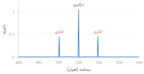
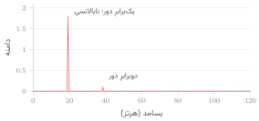
run-in of ten gearboxes at 1155 rpm (synthetic, acceleration units)
shaft 19.25 Hz, mesh 519.8 Hz (27 x shaft)
unit 1x 2x mesh sidebands/mesh rms finding
G01 0.20 0.10 0.92 0.03 0.69 accept
G02 0.20 0.10 1.00 0.05 0.74 accept
G03 0.20 0.10 0.99 0.04 0.74 accept
G04 0.20 0.10 1.04 0.87 0.89 tooth damage (sidebands)
G05 0.20 0.10 1.04 0.03 0.77 accept
G06 0.21 0.10 0.99 0.05 0.74 accept
G07 1.81 0.10 0.96 0.04 1.45 imbalance (1x)
G08 0.20 0.10 1.03 0.04 0.76 accept
G09 0.20 1.30 0.95 0.04 1.16 misalignment (2x)
G10 0.20 0.10 1.03 0.03 0.76 accept
units held:
G04: tooth damage (sidebands)
G07: imbalance (1x)
G09: misalignment (2x)
the overall level hides what the lines show: G04's rms is
only 20% above the good units', yet its sidebands say one tooth is struck
each turn; each finding opens an NCR (step 3) and the unit
is not released until the cause is found and re-runمثال 42.62 (سطحِ کل پنهان میکند، خطها نشان میدهند) پرسش. ده جعبهدنده را با خطهای طیف تشخیص دهید. چرا مقدارِ مؤثرِ کل کافی نیست؟
پاسخ. G04 آسیبِ دندانه دارد: نسبتِ مؤلفههای کناری به درگیری 0.87. G07 نابالانسی دارد: یکبرابر 1.81. G09 ناهممحوری دارد: دوبرابر 1.30. هفت واحدِ دیگر پذیرفتهاند.
تفسیر. مقدارِ مؤثرِ G04 فقط ۲۰ درصد بالاتر از واحدهای سالم است و در آستانهای کلی گم میشد. اما شکلِ طیف به سازوکار اشاره میکند. هر یافته یک گزارشِ عدمانطباق باز میکند (NCR-105). واحد تا یافتنِ علت و آزمونِ دوباره آزاد نمیشود. آستانهها آموزشیاند. ارزیابیِ ارتعاشِ توربین در بهرهبرداری با ISO 20816-21:2025 نام برده میشود. وارسی: \(27 \times 19.25 = 519.8\,\text{Hz}\) و کناریها در \(500.5\) و \(539.0\,\text{Hz}\).
42.6.2 گامِ ۲: طرحِ بازرسی و کیفیتِ پره
PLAN = [ # step, H/W/R, method, record
("materials receipt", "R", "certificates, shelf life", "batch log"),
("mould preparation", "R", "release, surface check", "mould card"),
("lay-up of caps and shell", "W", "ply count, orientation", "ply map"),
("infusion", "R", "fill, vacuum hold", "infusion record"),
("cure", "H", "DSC samples, Tg", "cure record"),
("bonding of shells and webs", "W", "bond width, squeeze-out", "bond log"),
("ultrasonic scan", "H", "caps, bond lines (POD)", "scan maps"),
("lightning system", "H", "receptor-root resistance", "LPS test"),
("root machining, inserts", "W", "flatness, insert pulls", "root sheet"),
("weighing", "H", "mass, first mass moment", "weighing sheet"),
("dimensions", "W", "twist, chord, pre-bend", "3D scan"),
("finish and coating", "R", "thickness, edge layer", "paint log"),
("final release", "H", "dossier, NCRs closed", "release note"),
]blade inspection and quality plan (H hold, W witness, R record)
step point method record
materials receipt R certificates, shelf life batch log
mould preparation R release, surface check mould card
lay-up of caps and shell W ply count, orientation ply map
infusion R fill, vacuum hold infusion record
cure H DSC samples, Tg cure record
bonding of shells and webs W bond width, squeeze-out bond log
ultrasonic scan H caps, bond lines (POD) scan maps
lightning system H receptor-root resistance LPS test
root machining, inserts W flatness, insert pulls root sheet
weighing H mass, first mass moment weighing sheet
dimensions W twist, chord, pre-bend 3D scan
finish and coating R thickness, edge layer paint log
final release H dossier, NCRs closed release note
5 holds, 4 witness points, 4 records
a hold stops the blade until released; a witness lets the
buyer attend; a record is reviewed later - holds sit where
a defect becomes hidden (cure, scan) or costly (release)مثال 42.63 (نقطههای توقف کجا مینشینند؟) پرسش. طرحِ بازرسی و کیفیتِ پره را بنویسید. چرا پنج نقطهٔ توقف همینجاهایند؟
پاسخ. توقفها در پخت، پویشِ فراصوت، آزمونِ صاعقه، وزنکشی و آزادسازیِ نهاییاند. چهار نقطهٔ شاهد و چهار سابقه هم هست.
تفسیر. توقف جایی مینشیند که عیب در آن پنهان میشود یا گران. پخت و پویش پیش از رنگ میآیند. پس از رنگ چیزی دیده نمیشود. وزنکشی پیش از جفتکردن میآید و آزادسازی پیش از حمل. سابقهها هم دور ریخته نمیشوند: در پروندهٔ پره میمانند و ممیزی آنها را نمونهگیری میکند (بخش 40.4.4). این طرح از طرحِ قطعهٔ برجِ فصلِ ۱۱ (بخش 11.4.18) و برگهٔ مسیرِ فصلِ ۳۰ پیروی میکند، این بار برای کامپوزیت.
42.6.3 گامِ ۳: پیگیریِ عدمانطباقها
nonconformity reports: who decides and by when (teaching)
NCR sev where decides limit open status
NCR-101 2 factory quality engineer 10 3 open
NCR-102 3 factory design authority 15 9 open
NCR-103 3 factory design authority 15 21 late
NCR-104 2 factory quality engineer 10 5 open
NCR-105 3 factory design authority 15 2 open
NCR-106 1 port supervisor 5 1 open
NCR-107 1 site supervisor 5 4 open
NCR-108 2 site quality engineer 10 12 late
2 report(s) past their limit: escalated one level up
the disposition - use as is, repair, scrap - is made by
the authority for the severity; 'use as is' on a
load-path part is the designer's decision with a written
justification (ch 40, concession)ایده. هر گزارش بر پایهٔ شدت به مرجعی میرود: سرپرست، مهندسِ کیفیت یا مرجعِ طراحی. هر مرجع مهلتی دارد. گزارشی که از مهلت بگذرد یک رده بالا میرود. تصمیم یکی از سه است: استفاده همانطور که هست، تعمیر، یا دورریختن. «استفاده همانطور که هست» برای جزءِ روی مسیرِ بار تصمیمِ طراح است، با توجیهِ نوشته (بخش 40.5.6). توپیِ H-022 و یاتاقانِ گامِ P-31 از مهلت گذشتهاند.
مثال 42.64 (دو گزارشِ دیرشده) پرسش. کدام گزارشها از مهلت گذشتهاند و به کجا میروند؟
پاسخ. NCR-103 با شدتِ ۳، ۲۱ روز در برابرِ ۱۵. NCR-108 با شدتِ ۲، ۱۲ روز در برابرِ ۱۰. اولی به مدیریتِ پروژه میرود و دومی به مرجعِ طراحی.
تفسیر. گزارشِ بازمانده یعنی جزئی که نه پذیرفته شده نه رد. اگر روی مسیرِ بار باشد، نصب را نگه میدارد. پس پیگیریِ گزارشها بخشی از برنامهٔ زمانیِ پروژه است (فصل 49).
42.6.4 گامِ ۴: نقشهٔ واسطهای حمل و نصب
transport and installation interfaces (ch 31 plan)
part transport / lifting / preservation
installation hold point
blade road, root and tip frames; two-point yoke; covers, tip
hold: inserts torqued, LPS tested
hub road, own frame; lugs on hub; desiccant, sealed
hold: pitch bearing seals checked
nacelle road, low-loader; lifting yoke; heaters, desiccant
hold: yaw flange flat, bolts
tower section road, saddles; flange lifting tools; covers
hold: flange flatness, earthing
converter in nacelle or tower; with its module; dry, heated
hold: insulation index
added to the tower-section traveler of ch 30 (top section):
- yaw flange: flatness against the tower top flange
- bolt pattern of tower top and yaw bearing matched
- contact faces left bare of paint (friction joint)
- earthing straps across each flange joint
each hold is where a part from one maker meets another's:
the record carries both serials (lesson A, interfaces)ایده. هر نقطهٔ توقفِ نصب جایی است که جزءِ یک سازنده به جزءِ سازندهٔ دیگری میرسد. سابقه شمارهٔ سریالِ هر دو را دارد (بخش 42.3.8). چهار قلمِ واسطِ ناسل و برج به برگهٔ مسیرِ قطعهٔ بالای برجِ فصلِ ۳۰ افزوده میشوند: تختبودنِ فلنج، الگوی سوراخها، سطحهای تماسِ بیرنگ و نوارهای زمین. برنامهٔ حمل و بالابری از فصلِ ۳۱ است (فصل 31).
مثال 42.65 (نقطهٔ توقف جایی است که دو سازنده به هم میرسند) پرسش. چرا «سطحهای تماسِ بیرنگ» در برگهٔ مسیرِ بخشِ بالاییِ برج آمده است؟
پاسخ. فلنجِ بالای برج با یاتاقانِ چرخشِ ناسل یک اتصالِ اصطکاکی است. رنگ در اتصال پیشبار را با خزش کم میکند (مثال 42.88).
تفسیر. سازندهٔ برج رنگ میزند و سازندهٔ ناسل اتصال را طراحی کرده است. بدونِ این سطر در برگهٔ مسیر، هر کدام کارِ خود را درست انجام میدهد و اتصال باز هم شل میشود.
42.6.5 گامِ ۵: وزنِ پرهها روی نمودارِ کنترل
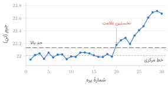
weights of 30 blades from one mould (t, individuals chart)
centre 22.010 t, upper limit 22.132 t (from blades 1-15)
first blade above the limit: 20
heavier blades from blade 19: more resin taken up - a
bag, an inlet or a fabric batch has changed; the weight is
the cheapest process signal a blade factory has, and it
also moves the set matching (lesson B)مثال 42.66 (ارزانترین علامتِ فرایند) پرسش. نمودار کِی علامت میدهد؟ چه چیزی را باید وارسی کرد؟
پاسخ. پرهٔ ۲۰، یک پره پس از آغازِ رانش.
تفسیر. پرهها از پرهٔ ۱۹ سنگینتر شدهاند: رزینِ بیشتری جذب شده است. کیسهٔ خلأ، یک ورودی یا دستهٔ پارچه عوض شده است. ترازو ارزانترین علامتِ فرایندی است که کارخانهٔ پره دارد. همان جرم جفتکردنِ دستهها را هم جابهجا میکند (بخش 42.4.7). وارسی: \(\overline{MR} = (22.132 - 22.010)/2.66 = 0.046\) تن.
42.6.6 گامِ ۶: نشستنِ دمای روغن در آزمونِ کارکردِ آغازین
دمای روغن پس از هر گامِ بار مانندِ یک سامانهٔ مرتبهٔ اول بالا میرود. برای رسیدن به فاصلهٔ \(b\) از افزایشِ نهاییِ \(\Delta\) با ثابتِ زمانیِ \(\tau\):
\[ t = -\tau \ln\frac{b}{\Delta} \tag{42.23}\]
gearbox oil temperature after a load step: first order, tau 40 min
final rise 30 K; 'stable' = within 1.0 K of the end
time to stable 136 min (2.3 h) at each step
four load steps take most of a shift before the last
readings mean anything: vibration and temperature are read
only once the step has settled - a test plan that records
earlier compares a warm gearbox with a cold oneایده. هر گامِ بار بیش از دو ساعت میخواهد تا دما بنشیند. چهار گام بیشترِ یک نوبت را میگیرد. ارتعاش و دما فقط پس از نشستن خوانده میشوند. برنامهٔ آزمونی که زودتر ثبت کند، جعبهدندهٔ گرم را با سرد مقایسه میکند.
مثال 42.67 (صدوسیوشش دقیقه) پرسش. با ثابتِ زمانیِ ۴۰ دقیقه و افزایشِ ۳۰ کلوین، کِی دما به یک کلوینیِ پایان میرسد؟
پاسخ. \(t = 40 \ln(30/1) = 136\,\text{min}\).
تفسیر. چهار پلهٔ بار حدودِ ۹ ساعت میخواهد. خواندنی که زودتر ثبت شود، جعبهدندهٔ گرم را با سرد مقایسه میکند. پس برنامهٔ آزمون زمانِ نشستن را دارد.
42.6.7 گامِ ۷: آهن در روغنِ آزمون
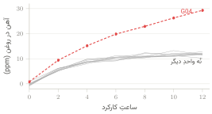
iron in the run-in oil, ppm (synthetic, ten gearboxes)
running-in wear rises then levels; a unit still climbing
after 8 h: ['G04']
the same unit whose spectrum showed sidebands (lab D):
oil and vibration agree, and two kinds of evidence make the
hold decision firmایده. سایشِ آغازین آهن را بالا میبرد و سپس هموار میشود. واحدی که هنوز بالا میرود همان است که طیفش مؤلفهٔ کناری داشت (G04، مثال 42.62). روغن و ارتعاش همصدا هستند. دو نوع شاهد تصمیمِ نگهداشتن را محکم میکنند.
مثال 42.68 (دو گواه برای یک واحد) پرسش. کدام واحد پس از ۸ ساعت هنوز آهنِ روغنش بالا میرود؟ با طیف چه نسبتی دارد؟
پاسخ. G04، همان واحدی که مؤلفههای کناری داشت (مثال 42.62).
تفسیر. دو نوع شاهدِ مستقل، روغن و ارتعاش، یک نتیجه میدهند. تصمیمِ نگهداشتن محکم میشود و بازبینیِ درونِ جعبهدنده پیش از ارسال توجیه دارد.
42.6.8 گامِ ۸: تحلیلِ خرابیِ فرایندِ پره
PFMEA = [ # step, failure mode, effect, S, O, D
("lay-up of caps", "ply off its angle", "cap stiffness low", 8, 3, 5),
("infusion", "dry spot", "local weakness, NCR", 7, 4, 3),
("cure", "under-cured zone", "softens in service", 9, 2, 4),
("bonding", "bond-line gap", "web disbond, blade loss", 10, 3, 4),
("root inserts", "insert misaligned", "bolt bending, fatigue", 9, 2, 3),
("lightning system", "conductor joint loose", "strike damage", 8, 2, 2),
("finishing", "thin edge coating", "early erosion", 5, 5, 3),
]process FMEA of blade making, ranked by severity class, then
S x O, then D (ch 40); RPN shown only for comparison
step failure mode S O D SxO RPN
bonding bond-line gap 10 3 4 30 120
cure under-cured zone 9 2 4 18 72
root inserts insert misaligned 9 2 3 18 54
infusion dry spot 7 4 3 28 84
lay-up of caps ply off its angle 8 3 5 24 120
lightning system conductor joint loose 8 2 2 16 32
finishing thin edge coating 5 5 3 25 75
first by the ranking: bond-line gap; first by RPN: ply off its angle
a bond-line gap that can lose a blade outranks a common but
milder defect - severity first; the ranking sets where the
quality plan puts its holds (lab D)مثال 42.69 (شدت اول، نه عددِ اولویت) پرسش. حالتهای خرابیِ ساختِ پره را با روشِ فصلِ ۴۰ رتبهبندی کنید. با عددِ اولویتِ خطر چه فرقی دارد؟
پاسخ. نخست شکافِ خطِ چسب است، با شدتِ ۱۰. با عددِ اولویت، لایهٔ کج و شکافِ چسب هر دو ۱۲۰ دارند و لایهٔ کج جلو میافتد.
تفسیر. شکافِ چسبی که میتواند پره را از دست بدهد، از عیبی رایجتر اما ملایمتر بالاتر است: شدت اول. عددِ اولویت شدت، رخداد و آشکارسازی را در هم ضرب میکند و این ترتیب را گم میکند (بخش 40.4.1). رتبهبندی تعیین میکند نقطههای توقفِ طرحِ کیفیت کجا بنشینند (مثال 42.63). پخت و پویشِ خطِ چسب هر دو توقفاند و هر دو در بالای این فهرست.
42.6.9 گامِ ۹: مشخصههای بحرانیِ توربین
critical characteristics of the turbine and their evidence
part characteristic evidence
blade cap fibre fraction coupon burn-off per cap
blade web bond line UT scan map, POD on file
blade root insert pull-out characteristic value per batch
hub flange soundness UT by zone, nodularity bar
main shaft fillet finish and soundness roughness, UT
gearbox tooth case depth hardness traverse per heat
gearbox run-in spectrum and oil spectra, iron trend
generator winding insulation PI, sensors tested
joints bolt preload logged torque and angle
9 characteristics where a manufacturing slip reaches
the load path or safety; each has a control-plan row and
a record the plant asks for at receipt (ch 40, critical)ایده. مشخصهٔ بحرانی جایی است که یک لغزشِ ساخت به مسیرِ بار یا ایمنی میرسد. هر کدام یک سطرِ طرحِ کنترل و یک سابقه دارد که نیروگاه در دریافت میخواهد (بخش 40.7.1). این فهرستِ نُهسطری همان چیزی است که مبنای D-046 از سازندگان میخواهد.
مثال 42.70 (نُه سطر برای دریافت) پرسش. برای مشخصهٔ «عمقِ لایهٔ سختِ دنده» چه شاهدی در دریافت خواسته میشود؟
پاسخ. خطِ سختیسنجیِ نمونهٔ هر ذوب، با شمارهٔ ذوبی که به دندهها پیوند دارد.
تفسیر. شاهد بدونِ پیوندِ ردیابی کافی نیست: نمونهٔ خوب باید به همان دندهای برسد که در جعبهدنده نشسته است (بخش 42.5.11). هر سطرِ فهرست همین زنجیر را دارد.
42.6.10 گامِ ۱۰: ضربهنگارهای ناسل در حمل
shock recorders on 12 nacelles in transport (limit 3.0 g, teaching)
N-01 2.0, N-02 2.3, N-03 2.4, N-04 2.4, N-05 4.1, N-06 2.2
N-07 2.0, N-08 2.6, N-09 2.4, N-10 1.9, N-11 3.4, N-12 2.5
over the limit: ['N-05', 'N-11']
a hard bump can mark the bearings of a still drivetrain;
those nacelles get a bearing and alignment check before
erection, and the transport claim is opened with the log
as evidence (ch 31)ایده. ضربهٔ سخت میتواند یاتاقانهای پیشرانهٔ ساکن را نشانهدار کند: همان فرورفتگیِ کاذبِ بخش 42.7.4. پس ناسلهای N-05 و N-11 پیش از نصب وارسیِ یاتاقان و هممحوری میشوند. ادعای حمل هم با ثبتِ ضربهنگار بهعنوانِ شاهد باز میشود (فصل 31). حدِ ۳ برابرِ شتابِ گرانش آموزشی است. حد را سازنده و بیمهگرِ حمل میدهند.
مثال 42.71 (دو ناسل از دوازده) پرسش. کدام ناسلها از حدِ ۳ برابرِ شتابِ گرانش گذشتهاند؟
پاسخ. N-05 با 4.1 و N-11 با 3.4.
تفسیر. ده ناسلِ دیگر بیشینهای میانِ 1.9 و 2.6 دارند. دو خواندنِ بالا رخدادهای جدا هستند، نه پراکندگیِ عادی. پس وارسیِ یاتاقان و ادعای حمل برای همان دو باز میشود.
42.6.11 گامِ ۱۱: خطمبنای ارتعاش برای بهرهبرداری
mesh amplitude of a gearbox: factory run-in as the baseline
ten units at the factory: mean 1.01, sd 0.07; alert above 1.21
one unit in service, yearly: 1.00, 1.02, 1.03, 1.05, 1.28
first above the alert: year 5
a baseline from the factory, at known load and speed, makes
the condition monitoring of ch 37 sharper than a generic
limit: the run-in record is handed over for that reasonایده. خطمبنا از کارخانه، با بار و سرعتِ معلوم، پایشِ وضعیتِ فصلِ ۳۷ را تیزتر از یک حدِ عمومی میکند. واحدی که در سالِ پنجم از حدِ هشدار میگذرد، با مبنای خودش سنجیده شده، نه با میانگینِ صنعت. پس سابقهٔ آزمونِ کارکردِ آغازین همراهِ توربین تحویل داده میشود (بخش 37.3).
مثال 42.72 (حدِ خودِ واحد) پرسش. حدِ هشدار از ده واحدِ کارخانه چقدر است و واحدِ بهرهبرداری کِی از آن میگذرد؟
پاسخ. \(1.01 + 3 \times 0.07 = 1.21\) (برنامه با مقدارهای گردنشده). سالِ پنجم با 1.28.
تفسیر. سالِ چهارم با 1.05 هنوز درونِ پراکندگیِ کارخانه است. حدِ عمومی بدونِ مبنای کارخانه نمیداند پراکندگیِ این طراحی چقدر است.
42.6.12 گامِ ۱۲: آزمونِ افتِ فشار با تصحیحِ دما
در آزمونِ نشتِ مدارِ خنککاری، گاز پیش از پرشدن با مایع در مدار حبس میشود. اگر دما از \(T_1\) به \(T_2\) برسد، فشارِ مطلقِ گازِ بینشت باید به این مقدار برسد (دما بر حسبِ کلوین):
\[ p_{2,\text{exp}} = p_1\,\frac{T_2}{T_1} \tag{42.24}\]
pressure-decay test of a nacelle cooling circuit (teaching)
start 3.0 bar gauge at 22.0 C; after an hour 2.975 bar at 20.0 C
raw fall 25 mbar; the cooling of the gas alone explains 27 mbar
(P/T constant; the circuit is tested with gas before filling)
corrected fall -2 mbar against a 10 mbar limit: pass
without the temperature record the circuit would be called
leaking; with a warming hall a leak could hide - the test
record carries both readingsایده. افتِ خام ۲۵ میلیبار است و از حدِ ۱۰ میلیبار میگذرد. اما سردشدنِ دو کلوینیِ گاز بهتنهایی ۲۷ میلیبار را توضیح میدهد. بدونِ ثبتِ دما، مدارِ سالم نشتی خوانده میشد. در سالنی که گرم میشود، نشتِ واقعی پنهان میماند. پس سابقهٔ آزمون هر دو خواندن را دارد. حد و مدتِ آزمون را سازنده میدهد.
مثال 42.73 (نشتی که نبود) پرسش. فشارِ مطلقِ مورد انتظار پس از سردشدن از ۲۲ به ۲۰ درجه چقدر است؟
پاسخ. \(4.013 \times 293.15/295.15 = 3.986\,\text{bar}\). افتِ پیشبینیشده ۲۷ میلیبار، اندازهگیریشده ۲۵. افتِ تصحیحشده \(-2\) میلیبار.
تفسیر. فشارِ نسبی در این رابطه کار نمیکند: با 3.0 bar نسبی، افتِ پیشبینیشده ۲۰ میلیبار میشد و ۵ میلیبار «نشت» میماند. فشار و دما هر دو باید مطلق باشند.
42.6.13 گامِ ۱۳: دایرهٔ بوشها با کمترین مربعات
مختصاتِ ۹۶ بوشِ ریشه با دستگاهِ اندازهگیری خوانده میشود. دایرهای با کمترین مربعات از آنها میگذرد. رابطه در ضرایب خطی است:
\[ x_i^2 + y_i^2 + a_1 x_i + a_2 y_i + a_3 = 0, \qquad x_c = -\frac{a_1}{2},\; y_c = -\frac{a_2}{2},\; r^2 = x_c^2 + y_c^2 - a_3 \tag{42.25}\]
def fit_circle(x, y):
"""Least-squares circle through points (Kasa): centre and radius."""
a = np.column_stack([x, y, np.ones_like(x)])
rhs = -(x ** 2 + y ** 2)
d, e, f = np.linalg.lstsq(a, rhs, rcond=None)[0]
xc, yc = -d / 2, -e / 2
return xc, yc, math.sqrt(xc ** 2 + yc ** 2 - f)96 root inserts measured on a 3.2 m circle (coordinate machine)
fitted centre (+0.44, -0.24) mm; radius +0.01 mm from nominal
worst insert 58: +2.79 mm radially; over +-1.5 mm: 1
the fit takes out where the circle sits; what is left is each
insert's own error, which the bolt must pass through the
bearing's hole - one bad insert is an NCR, not a re-machined
bearingایده. برازش جای دایره را کنار میگذارد. آنچه میماند خطای خودِ هر بوش است، که پیچ باید با آن از سوراخِ یاتاقانِ گام بگذرد. بوشِ ۵۸ با 2.79 mm تنها بوشِ بیرون از حد است. یک بوشِ بد یک گزارشِ عدمانطباق است (بخش 42.6.3)، نه دلیلی برای تراشِ دوبارهٔ یاتاقان. حدِ ۱٫۵ میلیمتر آموزشی است.
مثال 42.74 (مرکز جابهجا، بوش سالم) پرسش. اگر بهجای برازش، فاصلهٔ هر بوش از مرکزِ اسمی سنجیده شود، چه میشود؟
پاسخ. مرکزِ برازششده 0.44 mm و 0.24 mm جابهجاست. این جابهجایی به خطای همهٔ بوشها افزوده میشود و بوشهای سالمِ یک سو را به حد نزدیک میکند.
تفسیر. جای دایره را سوارکردنِ پره روی یاتاقان جبران میکند. خطای خودِ هر بوش را نه. پس برازش این دو را از هم جدا میکند و تنها بوشِ ۵۸ میماند.
42.6.14 گامِ ۱۴: ضخامتِ فیلمِ خشکِ لبهٔ حمله
leading-edge coating, 20 readings a blade (nominal 500 um; teaching rule:
mean at least nominal and no reading below 80 %)
blade mean um lowest um verdict
B-131 567 514 accept
B-132 557 490 accept
B-133 536 365 recoat
B-133's mean passes; three thin readings in one patch do not
- erosion starts at the thinnest place, not at the mean (ch 11)ایده. میانگینِ پرهٔ B-133 از حد میگذرد، اما سه خواندنِ نازک در یک ناحیه نه. فرسایش از نازکترین جا آغاز میشود، نه از میانگین (بخش 11.2.18). پس قاعدهٔ پذیرش هم میانگین را میخواهد و هم کمینه را. ضخامتِ فیلمِ خشک در چند نقطهٔ ثابت از هر پره خوانده و ثبت میشود. قاعدهٔ ۸۰ درصد آموزشی است.
مثال 42.75 (میانگینِ خوب، وصلهٔ نازک) پرسش. کمترین خواندنِ B-133 چند درصدِ مقدارِ اسمی است؟
پاسخ. \(365/500 = 73\,\%\)، زیرِ کفِ ۸۰ درصد، در حالی که میانگین 536 است.
تفسیر. قاعدهای که فقط میانگین را بخواهد، این پره را میپذیرد. فرسایش در همان وصله زودتر به لایهٔ زیرین میرسد و تعمیرِ میدانی در پنجرههای محدود (مثال 42.83) گرانتر از پوششِ دوباره در کارخانه است.
42.6.15 گامِ ۱۵: دادهٔ پویشِ یک پره
ultrasonic scan of one blade: caps 126 m2, bond lines 25 m2, every 2 mm
37.8 million points
C-scan maps (amplitude and time, 4 bytes each): 0.30 GB a blade
full waveforms (256 samples x 2 bytes): 19 GB a blade, 0.7 TB for the plant
the maps answer today's question; only the waveforms let a
later finding be re-read in the factory data - which to keep,
and for how long, is a retention decision (ch 35) written
into the contract, not left to the factory's diskمثال 42.76 (نقشه یا شکلِ موج؟) پرسش. پویشِ کلاهکها و خطهای چسبِ یک پره با گامِ ۲ میلیمتری چند نقطه دارد؟ نقشهٔ پویش و شکلِ موجِ کامل هر کدام چه حجمی دارند؟
پاسخ. حدودِ ۳۸ میلیون نقطه. نقشه 0.30 GB و شکلِ موجِ کامل 19 GB برای هر پره، یعنی 0.7 TB برای نیروگاه.
تفسیر. نقشه پاسخِ پرسشِ امروز است. اگر پنج سال بعد ترکی در کلاهک یافته شود، فقط شکلِ موج اجازه میدهد دادهٔ کارخانه با روشی تازه دوباره خوانده شود. پس آنچه نگه داشته میشود و دورهٔ نگهداریِ داده در قرارداد نوشته میشود (فصل 35)، نه به دیسکِ کارخانه سپرده.
42.6.16 گامِ ۱۶: ارزشِ آزمونِ کارکردِ آغازین
gearbox run-in: 3 of 10 units held (lab D); value in field exchanges avoided
a held defect fails early in service with chance 40% (teaching)
one exchange: crane 450 + repair 500 + lost energy 60 = 1,010 k u
expected saving 1,212 k u against a test cost of 120 k u (10 x)
break-even chance of failure: 4%
the run-in pays even if only one held defect in 25
would have failed - the case for testing every unit, not a
sample, when a field failure costs a crane campaignمثال 42.77 (یک در بیستوپنج) پرسش. با سه واحدِ نگهداشته، احتمالِ خرابیِ زودِ ۴۰ درصد و هزینهٔ تعویضِ 1,010 k u، آزمونِ ده واحد چند برابرِ هزینهاش صرفهجویی میکند؟ در چه احتمالی سربهسر است؟
پاسخ. \(3 \times 0.40 \times 1010 = 1212\,\text{k u}\) در برابرِ \(10 \times 12 = 120\)، یعنی ۱۰ برابر. سربهسر در \(120/(3 \times 1010) = 4\,\%\).
تفسیر. حتی اگر فقط یکی از ۲۵ عیبِ یافته در میدان خراب میشد، آزمون خرجش را میداد. وقتی خرابیِ میدانی یک کارزارِ جرثقیل است (مثال 42.86)، آزمونِ همهٔ واحدها، نه نمونه، توجیه دارد. این با پیشکارکردِ فصلِ ۴۰ فرق دارد: آنجا آزمون عیبِ کمی مییافت و خرجش را نمیداد.
- سه خطِ طیف در آزمونِ کارکردِ آغازین کداماند و هر کدام به چه اشاره دارند؟
- مؤلفهٔ کناری چیست و چرا در فاصلهٔ یک دور است؟
- چرا مقدارِ مؤثرِ کل آسیبِ دندانه را پنهان میکند؟
- در طرحِ کیفیتِ پره، نقطهٔ توقف، شاهد و سابقه چه فرقی دارند؟
- چرا توقفها در پخت و پویشاند؟
- مرجعِ تصمیمِ یک گزارشِ عدمانطباق از کجا تعیین میشود؟
- «استفاده همانطور که هست» برای جزءِ روی مسیرِ بار با کیست؟
- چه قلمهایی به برگهٔ مسیرِ قطعهٔ بالای برج افزوده میشوند؟
- چرا وزنِ پره ارزانترین علامتِ فرایند است؟
- معادلهٔ 42.23 را توضیح دهید. چرا دادهها پس از نشستن خوانده میشوند؟
- آهنِ روغن و ارتعاش چگونه همدیگر را تأیید میکنند؟
- چرا رتبهبندیِ حالتهای خرابی با شدت آغاز میشود؟
- مشخصهٔ بحرانی چیست و چه چیزی همراهِ آن به نیروگاه میرسد؟
- ناسلی که ضربهنگارش از حد گذشته پیش از نصب چه وارسیای میخواهد؟
- چرا خطمبنای کارخانه پایشِ وضعیت را تیزتر میکند؟
- معادلهٔ 42.24 را توضیح دهید. چرا فشارِ مطلق و دمای کلوین؟
- برازشِ دایره چه چیزی را از خطای بوشها جدا میکند؟
- چرا پذیرشِ ضخامتِ پوشش هم میانگین و هم کمینه را میخواهد؟
- چرا نگهداشتنِ شکلِ موجِ کاملِ پویش تصمیمِ قراردادی است؟
- آزمونِ کارکردِ آغازین در چه احتمالِ خرابیای سربهسر است؟
42.7 ث. مهندسیِ ساخت در زنجیرهٔ تأمین
توربین در یک کارخانه ساخته نمیشود. صدها تأمینکننده در چند رده جزء میدهند. این بخش پرسشهای مهندسیِ ساخت را برای همهٔ زنجیره حساب میکند: کدام رده زمانِ تحویل را تعیین میکند، نخستین قطعهها چه چیزی را ثابت میکنند، چند پیچ در یک توربین سفت میشود، انبار چه کارهایی دارد، تعمیر در ساختگاه تا کجا مجاز است و بند عیبِ سریالی کِی فعال میشود (A-456، A-457).
42.7.1 ردههای تأمینکننده و زمانِ تحویل
supplier tiers and lead time to a turbine ready to ship (teaching)
part tier-2 input weeks t2 + t1 + nacelle
main bearing forged rings 26 + 14 + 6 = 46
gearbox gear forgings, bearings 22 + 18 + 6 = 46
hub casting pattern, iron 12 + 10 + 6 = 28
blade glass, resin, balsa 6 + 8 + 4 = 18
generator electrical steel, copper 10 + 12 + 6 = 28
tower plate 8 + 10 + 0 = 18
the main bearing and gearbox set the turbine's lead time: 46 weeks
the longest chain is often two tiers down, at a forge the
turbine maker never sees; reserving forging capacity at
award (ch 39, slots) and a qualified second forge cut the
risk more than pressing the final assemblerایده. طولانیترین زنجیره اغلب دو رده پایینتر است، در آهنگریای که سازندهٔ توربین هرگز نمیبیند. یاتاقانِ اصلی و جعبهدنده هر دو ۴۶ هفته میبرند. رزروِ ظرفیتِ آهنگری هنگامِ واگذاری (بخش 39.2.3) و آهنگریِ دومِ صلاحیتیافته خطر را بیشتر از فشار روی مونتاژکار کم میکنند.
مثال 42.78 (آهنگریِ دوم) پرسش. اگر آهنگریِ دومی حلقههای یاتاقان را در ۲۰ هفته بدهد، زمانِ تحویل چقدر میشود؟
پاسخ. یاتاقان \(20 + 14 + 6 = 40\) هفته، اما جعبهدنده هنوز ۴۶ است. پس زمانِ تحویل همان ۴۶ هفته میماند.
تفسیر. کوتاهکردنِ یک زنجیره وقتی سود دارد که زنجیرهٔ دیگری با همان طول نباشد. باید همهٔ زنجیرههای بحرانی را با هم دید (فصل 22).
42.7.2 نخستین قطعهها و توانِ فرایند
capability of a new blade mould from its first blades (observed Cpk 1.5)
blades measured 95 % lower bound proves 1.33?
5 0.59 no
10 0.89 no
30 1.16 no
100 1.32 no
five blades cannot prove a capability, however good they
look, and even a hundred give only 1.32: the first
article proves the drawing is met; the process is released
on a plan that keeps measuring, and a target of 1.33 needs
an observed Cpk well above it (ch 40, capability interval)مثال 42.79 (پنج پره توان را ثابت نمیکند) پرسش. قالبِ تازهٔ پره \(C_\text{pk}\) مشاهدهشدهٔ 1.50 دارد. کرانِ پایینِ ۹۵ درصد با ۵، ۱۰، ۳۰ و ۱۰۰ پره چقدر است؟
پاسخ. 0.59، 0.89، 1.16 و 1.32.
تفسیر. پنج پره، هر قدر خوب به نظر برسند، توان را ثابت نمیکنند. حتی صد پره به 1.32 میرسد. بازرسیِ نخستیننمونه ثابت میکند نقشه برآورده شده است (بخش 40.3.8.13). فرایند با طرحی آزاد میشود که اندازهگیری را ادامه میدهد. هدفِ 1.33 هم \(C_\text{pk}\) مشاهدهشدهای خیلی بالاتر از آن میخواهد (بخش 40.4.7).
42.7.3 عملیاتِ سفتکردن و خطای انسانی
tightening operations on one turbine (teaching counts)
blade root inserts (3 x 96) 288
hub to main shaft 90
pitch bearings (3 x 120) 360
yaw bearing 140
tower flanges (3 x 150) 450
anchor cage 160
total 1,488 a turbine; 17,856 for the plant
a person missing one in 2,000: 8.9 loose joints expected
tools that log torque and angle per bolt: 0.09
a missed bolt is a fatigue crack waiting: the logged record
per bolt is the evidence, and the 500-hour re-tension of
the commissioning plan (ch 50) catches what is leftایده. هر توربین حدودِ ۱٬۵۰۰ عملیاتِ سفتکردن دارد. با فردی که یکی در دو هزار را جا بیندازد، در نیروگاه حدودِ ۹ اتصالِ شل انتظار میرود. ابزاری که گشتاور و زاویهٔ هر پیچ را ثبت میکند، آن را به نزدیکِ صفر میرساند. پیچِ جاافتاده ترکِ خستگیِ منتظر است. سابقهٔ ثبتشدهٔ هر پیچ شاهد است. سفتکردنِ دوباره در ۵۰۰ ساعتِ نخست باقیمانده را میگیرد (فصلِ ۵۰؛ بخش 30.4.14).
مثال 42.80 (نُه پیچِ شل) پرسش. با ۱٬۴۸۸ عملیات در هر توربین و خطای یکی در دو هزار، در دوازده توربین چند اتصالِ شل انتظار میرود؟
پاسخ. \(1488 \times 12 / 2000 = 8.9\).
تفسیر. هر کدام از این نُه پیچ آغازِ یک ترکِ خستگی است. با ابزارِ ثبتکننده به 0.09 میرسد. سفتکردنِ دوباره در ۵۰۰ ساعت آنچه را میماند میگیرد.
42.7.4 کارهای انبار
components stored 9 months at the port or site (teaching)
task every times
nacelle main shaft turned (bearing marks) 1 mo 9
desiccant and humidity check 1 mo 9
generator heater and insulation check 3 mo 3
blade covers and supports 3 mo 3
gearbox oil sample 6 mo 1
a bearing that does not turn for months gets marks where
the rollers sit and vibration shakes them (false
brinelling): storage is a process with a record, and a
missed turn is a nonconformity, not a detailایده. یاتاقانی که ماهها نچرخد، جایی که غلتکها نشستهاند و ارتعاشِ حمل تکانشان میدهد، نشانه میگیرد: فرورفتگیِ کاذب. پس انبار فرایندی با سابقه است. چرخاندنِ جاافتاده یک عدمانطباق است، نه جزئیات. همین منطقِ نگهداریِ اسکیدها در فصلِ ۴۰ است (بخش 40.5.8).
مثال 42.81 (بیستوپنج سابقه) پرسش. در نُه ماه انبار، برای اجزای هر توربین چند کارِ ثبتشده لازم است؟
پاسخ. \(9 + 9 + 3 + 3 + 1 = 25\).
تفسیر. برای دوازده توربین ۳۰۰ سابقه. یک چرخاندنِ جاافتاده یعنی ماهها غلتکها روی یک جا ماندند. پس فهرستِ وارسیِ انبار با گزارشِ عدمانطباق کار میکند، نه با یادآوری.
42.7.5 ردههای آسیبِ پره و تعمیر
inspection of 36 blades after three years (teaching damage)
cat description repair count
1 coating scratch rope access 14
2 leading-edge erosion into the laminate rope access 17
3 skin damage, no structure rope or platform 3
4 damage reaching a cap or web ground, crane 2
5 structural crack or root damage replace blade 0
repair cost 584 k u and 93 turbine-days down
categories 1-3 are field repairs within the maker's limits;
4-5 need the designer and usually a crane: the category
is set by an inspector against the maker's damage manual,
and a field repair is valid only with its recordمثال 42.82 (بیشترِ آسیبها کوچکاند، بیشترِ هزینه از بزرگها) پرسش. پس از سه سال، ۳۶ پره بازرسی شدهاند. هزینه و روزهای توقفِ تعمیر چقدر است؟ کدام رده بیشترِ هزینه را دارد؟
پاسخ. 584 k u و ۹۳ توربینروز. دو پرهٔ ردهٔ ۴ با هم 360 k u هزینه دارند، یعنی ۶۲ درصد.
تفسیر. ۳۱ پره فقط خراش یا سایشِ لبهٔ حمله دارند و با دسترسیِ طنابی تعمیر میشوند (مثال 11.15). دو آسیبِ ردهٔ ۴ جرثقیل و طراح میخواهند. رده را بازرس با دفترچهٔ آسیبِ سازنده تعیین میکند. تعمیرِ ساختگاه فقط با سابقهاش معتبر است. وارسی: \(14 \times 2 + 17 \times 8 + 3 \times 20 + 2 \times 180 = 584\).
42.7.6 پنجرههای آبوهواییِ تعمیرِ ساختگاه
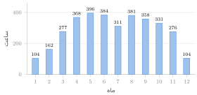
daylight hours for a composite field repair: 10 to 35 C, hub wind <= 12 m/s
(teaching limits; the resin's own limits decide)
month 1 2 3 4 5 6 7 8 9 10 11 12
hours 104 162 277 368 396 384 311 381 358 331 276 104
best month 5 (396 h), worst month 1 (104 h)
a resin cures only in its temperature band, and rope access
stops in wind: repair campaigns are planned for the months
the data allow, with the cure recorded like the factory'sایده. رزین فقط در بازهٔ دمای خودش پخته میشود و دسترسیِ طنابی در باد میایستد. پس کارزارهای تعمیر برای ماههایی برنامهریزی میشوند که داده اجازه میدهد. ماهِ نخست فقط ۱۰۴ ساعت دارد و ماهِ پنجم ۳۹۶. پخت هم مانندِ کارخانه ثبت میشود. حدها آموزشیاند. حدِ واقعی را رزین و روشِ دسترسی میدهند.
مثال 42.83 (دویست ساعت در ژانویه) پرسش. کارزارِ تعمیری دویست ساعتِ پنجره میخواهد. در کدام ماهها در یک ماه جا میشود؟
پاسخ. در ماههای ۱ و ۲ نه (۱۰۴ و ۱۶۲ ساعت). در ماههای ۳ تا ۱۱ بله. در ماهِ ۱۲ نه (۱۰۴ ساعت).
تفسیر. آسیبِ یافته در زمستان یا تا بهار صبر میکند یا دو ماه طول میکشد. پس ردهٔ آسیب (بخش 42.7.5) تصمیم را میگیرد: آسیبی که پیشرویاش تا بهار امن نیست، توقفِ توربین را میخواهد.
42.7.7 بندِ عیبِ سریالی
serial defect clause: 3 or more of the same failure in 36 blades (teaching)
true failure share chance the clause triggers
1% 1%
3% 9%
10% 71%
a clause that triggers by chance on a sound fleet is a
dispute; one that never triggers on a bad fleet is no
protection - the threshold is a sampling plan in a
contract and is judged by the same OC curve (ch 39)ایده. بندی که روی ناوگانِ سالم بیدلیل فعال شود، اختلاف میسازد. بندی که روی ناوگانِ بد هرگز فعال نشود، حفاظت نیست. آستانه یک طرحِ نمونهگیری در قرارداد است و با همان منحنیِ مشخصهٔ عملیاتی سنجیده میشود (بخش 39.4.5.4). با ۳ از ۳۶، سهمِ ۱۰ درصد در ۷۱ درصدِ حالتها و سهمِ ۳ درصد در ۹ درصد فعال میشود.
مثال 42.84 (سه از سیوشش) پرسش. بندِ «سه یا بیشتر از ۳۶» با سهمِ واقعیِ ۳ و ۱۰ درصد چقدر فعال میشود؟
پاسخ. ۹ و ۷۱ درصد.
تفسیر. با سهمِ ۱۰ درصد، ۲۹ درصد احتمال هست که بند فعال نشود: ناوگانِ بد بیحفاظت میماند. آستانهٔ دو از ۳۶ حفاظت را بالا میبرد اما ناوگانِ خوب را بیشتر متهم میکند. انتخابِ آستانه بدهبستانِ دو خطاست، همان منحنیِ مشخصهٔ عملیاتی.
42.7.8 شناسنامههای اجزا
audit of 40 component birth certificates (7 fields each)
field missing
serial 0
heat number 0
inspection report 0
test report 1
torque record 1
NCR closure 2
preservation log 3
fields complete 97.5%
the gaps cluster in the records made last - storage and
NCR closure - where nobody waits for them; a certificate
is accepted complete or returned, as the dossier of ch 40
was judged on validity, not on 'pass'ایده. کمبودها در سابقههایی خوشه میشوند که آخر ساخته میشوند: انبار و بستنِ عدمانطباق. کسی منتظرِ آنها نمیماند. شناسنامه کامل پذیرفته یا برگردانده میشود، همانطور که پروندهٔ فصلِ ۴۰ بر پایهٔ اعتبار داوری شد، نه «قبول» (بخش 40.6.2).
مثال 42.85 (هفت خانهٔ خالی) پرسش. چند خانه از ۲۸۰ خانهٔ شناسنامهها خالی است؟ کاملبودن چند درصد است؟
پاسخ. \(1 + 1 + 2 + 3 = 7\) خانه؛ \(273/280 = 97.5\,\%\).
تفسیر. خانههای خالی در سابقههایی جمع شدهاند که آخر ساخته میشوند: انبار و بستنِ گزارشها. شناسنامه کامل پذیرفته یا برگردانده میشود، نه «تقریباً کامل».
42.7.9 ارزشِ امروزِ کارزارهای جرثقیل
crane campaigns: 12 expected over 25 years, 450 k u each (teaching)
spread evenly: 0.48 a year; present value at 7.5%: 2,408 k u
a component quality that halves the major-failure rates is
worth about 1,204 k u today before any lost energy -
the value of the factory evidence this chapter asks forمثال 42.86 (ارزشِ شاهدِ کارخانه) پرسش. با ۱۲ کارزار در ۲۵ سال و ۴۵۰ هزار واحد برای هر کدام، ارزشِ حالِ آنها با نرخِ 7.5 % چقدر است؟ نصفشدنِ نرخِ خرابیهای بزرگ چه ارزشی دارد؟
پاسخ. حدودِ 2,408 k u. نصفشدن حدودِ 1,204 k u ارزش دارد، پیش از هر انرژیِ ازدسترفته.
تفسیر. این عدد ارزشِ شاهدی است که این فصل از کارخانهها میخواهد. پولِ بازرسیها، آزمونها و ممیزیها باید با آن سنجیده شود. انرژیِ ازدسترفته در زمانِ توقف هم به آن افزوده میشود (بخش 42.3.4). روشِ ارزشِ حال از فصلِ ۲۱ است (فصل 21).
42.7.10 اندازهٔ تعمیرِ پخدار
scarf repair of a laminate, taper 1:50 (teaching; the maker's manual sets it)
skin mm scarf length each side m repair mass kg (1 m wide)
5 0.25 2.8
12 0.60 14.8
20 1.00 39.9
a gentle taper spreads the load over a long joint: a 20 mm
skin needs a repair a metre each side - which is why
structural repairs (category 4) leave the rope and go to the
ground, and why each repair's mass goes into the balanceایده. پخِ ملایم بار را روی اتصالی بلند پخش میکند. پوستهٔ ۲۰ میلیمتری تعمیری یک متر از هر سو میخواهد. برای همین تعمیرهای سازهای، ردهٔ ۴، از طناب پایین میآیند و روی زمین انجام میشوند. جرمِ هر تعمیر هم در بالانس حساب میشود (مثال 42.20). نسبتِ پخ و چیدنِ لایههای تعمیر را دفترچهٔ تعمیرِ سازنده میدهد.
مثال 42.87 (پوستهٔ ۱۲ میلیمتری) پرسش. با پخِ یک به پنجاه، طولِ پخ در هر سو برای پوستهٔ ۱۲ میلیمتری چقدر است؟
پاسخ. \(12 \times 50 = 600\,\text{mm}\) در هر سو، و جرمِ تعمیرِ یکمتری حدودِ 14.8 kg.
تفسیر. تعمیرِ کوچکِ سطحی چند کیلوگرم است، اما تعمیرِ سازهای دهها کیلوگرم. جرمِ هر تعمیر با جایش در سابقهٔ پره ثبت میشود تا بالانس دوباره حساب شود (مثال 42.20).
42.7.11 نشستِ اتصالِ فلنج و رنگ در اتصال
سطحهای تماسِ اتصال در نخستین ماهها کمی در هم فرو میروند (نشستِ اتصال). هر میکرومتر نشست بخشی از کشیدگیِ پیچ را آزاد میکند:
\[ \Delta F_\text{V} = \delta_\text{s}\,\frac{k_\text{b}\,k_\text{c}}{k_\text{b} + k_\text{c}} \tag{42.26}\]
\(\delta_\text{s}\) نشستِ کل، \(k_\text{b}\) سختیِ پیچ و \(k_\text{c}\) سختیِ قطعههای فشرده است.
tower flange bolt M64 (teaching): grip 300 mm, preload 1500 kN
bolt stiffness 1,873 kN/mm; clamped parts 3 x stiffer
preload lost: 1,405 kN per mm of settling
joint faces settling mm lost kN share
bare steel (embedding) 0.012 17 1.1%
painted, coating creeps 15 % 0.072 101 6.7%
a few hundredths of a millimetre undo several per cent of the
preload; paint in the joint multiplies the loss - why the
faces stay bare (lab D, interface map) and why the bolts are
re-tensioned after the first months (ch 50)مثال 42.88 (رنگ در اتصال) پرسش. با سطحِ فولادِ لخت و با رنگی که ۱۵ درصد خزش دارد، چه سهمی از پیشبار میرود؟
پاسخ. لخت 17 kN، یعنی 1.1 %. رنگشده 101 kN، یعنی 6.7 %.
تفسیر. چند صدم میلیمتر چند درصد از پیشبار را برمیدارد. رنگ در اتصال این را چند برابر میکند. برای همین سطحهای تماس بیرنگ میمانند (بخش 42.6.4) و پیچها پس از ماههای نخست دوباره کشیده میشوند (فصل 50). مقدارهای نشست آموزشیاند. مقدارِ طراحی را طراحِ اتصال و سازندهٔ پیچ میدهند. وارسی: \(0.072 \times 1405 = 101\,\text{kN}\).
42.7.12 ورقها و جوشهای برج
tower sections of ch 30 rolled from 3.0 m plates (teaching)
sec cans shell t ch 31 t circ. welds m long. welds m
1 9 122.2 124.0 135 25
2 9 97.0 96.0 124 25
3 9 70.3 71.0 112 25
4 9 51.1 50.0 100 25
weld length a tower 571 m; at 12 m/h of ultrasonic scan 48 h
for 12 towers 571 h
the shells alone come within 2 t of ch 31's list (which
rounds and adds the flanges); the
circumferential welds carry the tower's bending and set its
fatigue (ch 30, detail category) - their inspection record
is part of the tower's dossierایده. هر بخشِ ۲۵ متری از نُه حلقهٔ نوردشده ساخته میشود. یک برج ۵۷۱ متر جوش دارد. جوشهای محیطی خمشِ برج را میبرند و خستگیِ آن را تعیین میکنند (فصل 30). پس سابقهٔ بازرسیِ فراصوتِ آنها بخشی از پروندهٔ برج است. جرمِ پوستهها از هندسه تا دو تن با فهرستِ فصلِ ۳۱ میخواند. این وارسیِ سادهای است که ورقها با نقشه یکیاند.
مثال 42.89 (جرمِ بخشِ پایینی) پرسش. جرمِ پوستهٔ بخشِ ۱ را از هندسه حساب کنید و با فهرستِ فصلِ ۳۱ مقایسه کنید.
پاسخ. \(\pi \times 4.31 \times 0.046 \times 25 \times 7.85 = 122.2\,\text{t}\) در برابرِ 124 t.
تفسیر. دو تنِ باقیمانده فلنجها و گردکردن است. بخشِ ۱ سنگینترین بارِ جاده است (فصل 31). ورقِ ضخیمتر از نقشه هم در همین حساب پیدا میشود.
42.7.13 مرکزِ جرمِ ناسل از چهار نیروسنج
ناسل روی چهار نیروسنج در نقطههای بالابری وزن میشود. مرکزِ جرم میانگینِ وزندارِ جای نقطههاست:
\[ x_\text{G} = \frac{\sum_i F_i\,x_i}{\sum_i F_i}, \qquad y_\text{G} = \frac{\sum_i F_i\,y_i}{\sum_i F_i} \tag{42.27}\]
nacelle on four load cells at the lifting points (+-2.0 m, +-1.5 m)
readings t: 47.1, 44.3, 35.2, 33.4; total 160.0 t
centre of gravity x 0.285 m, y 0.043 m; drawing 0.20 / 0.00 m
difference 95 mm (teaching limit 100)
load-cell error moves x by about 5 mm
the weighed mass and centre go on the record the crane plan
of ch 31 uses; a drawing value is a prediction, and here it
is out by nearly the whole limitمثال 42.90 (نقشه یک پیشبینی است) پرسش. از چهار خواندن، مرکزِ جرم را بیابید و با نقشه مقایسه کنید.
پاسخ. \(x_\text{G} = 2.0 \times (91.4 - 68.6)/160 = 0.285\,\text{m}\) و \(y_\text{G} = 1.5 \times (82.3 - 77.7)/160 = 0.043\,\text{m}\). فاصله تا نقشه 95 mm، زیرِ حدِ آموزشیِ ۱۰۰.
تفسیر. خطای نیروسنجها جای مرکز را حدودِ ۵ میلیمتر جابهجا میکند. پس اختلافِ ۹۵ میلیمتری واقعی است. جرم و مرکزِ وزنشده در سابقه مینشینند و برنامهٔ جرثقیلِ فصلِ ۳۱ از آنها استفاده میکند (فصل 31). اختلافِ نزدیک به حد را مهندسِ بالابری میسنجد.
42.7.14 سفتکردن در چند گذر
هر پیچی که سفت میشود، اتصال را کمی میفشارد و پیچهای سفتِ همسایه کمی شل میشوند. این برهمکنشِ کشسان است.
COUPLE = {1: 0.06, 2: 0.03, 3: 0.01} # preload lost by a neighbour, share
def tighten(order, n=96, passes=3):
"""Preload of each bolt (share of target) after each pass; raising
bolt j to the target relaxes tight bolts at distance 1-3 by a share
of the preload it gained."""
f = np.zeros(n)
out = []
for _ in range(passes):
for j in order:
gain = 1.0 - f[j]
f[j] = 1.0
for d, c in COUPLE.items():
for i in ((j + d) % n, (j - d) % n):
if f[i] > 0:
f[i] -= c * gain
out.append(f.copy())
return out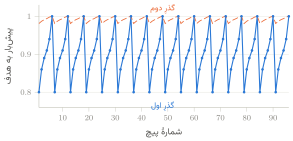
96 root bolts tightened one at a time; each tightening relaxes
tight neighbours by 6, 3 and 1 % of the preload it gains
(teaching)
order pass 1 min / mean pass 2 min / mean pass 3 min / mean
in sequence 80% / 90% 98% / 99% 100% / 100%
crosswise 80% / 90% 98% / 99% 100% / 100%
one pass leaves most bolts short of target whatever the
order; a second pass at the same target recovers most of it
and a third closes the gap - the work instruction names the
passes, and the logged tool shows each bolt's last value;
on a flat flange the order changes little, on a flange with
a gap it decides where the gap closes (not modelled here)مثال 42.91 (گذرِ دوم) پرسش. پس از یک، دو و سه گذر، کمترین و میانگینِ پیشبار چقدر است؟
پاسخ. گذرِ ۱: ۸۰ و ۹۰ درصد. گذرِ ۲: ۹۸ و ۹۹. گذرِ ۳: ۱۰۰ و ۱۰۰.
تفسیر. یک گذر بیشترِ پیچها را کوتاه از هدف میگذارد، هر ترتیبی داشته باشد. ابزارِ ثبتکننده در گذرِ اول برای هر پیچ «هدف» نشان میدهد، اما پیچ پس از سفتشدنِ همسایهها از آن پایین میآید. پس سابقهٔ معتبر خواندنِ گذرِ آخر است و دستورالعملِ کار شمارِ گذرها را نام میبرد (بخش 42.7.3). ضریبهای برهمکنش آموزشیاند.
42.7.15 کارخانهٔ پره نزدیکِ ساختگاه
a blade factory near the site against long-haul blades (teaching k u)
set-up 30,000; transport saved 45 a blade; local premium 10 a blade
break-even at 857 blades = 286 turbines
Plant P's 36 blades recover 4% of the set-up
one plant does not pay for a factory; a pipeline of plants
in a region may - and where a buyer asks for local content,
this is the price of it, to be weighed in the bid (ch 39)ایده. یک نیروگاه هزینهٔ کارخانه را نمیدهد: ۳۶ پره فقط ۴ درصدِ هزینهٔ راهاندازی را برمیگرداند. ردیفی از نیروگاهها در یک منطقه شاید بدهد. اگر خریدار سهمِ ساختِ داخل بخواهد، این حساب بهای آن را نشان میدهد و در ارزیابیِ پیشنهادها سنجیده میشود (فصل 39). عددها آموزشیاند.
42.7.16 ظرفیتِ قالبها و آهنگِ نصب
blade factory: 2 mould sets, 30 h a blade, 85% available,
three shifts (teaching)
9.5 blades a week; 38 blades (36 + 2 spares) in 4.0 weeks
plus 5 days of finishing and testing before the first ships
erection at one turbine every 3 days needs 7 blades a week
the factory makes 1.4 x what erection takes, so once
running it stays ahead; a mould set down for a week costs 5 blades
start moulding 8 days before the first lift: finishing plus a buffer of 5
blades - the factory's schedule risk is the moulds, not the
peopleمثال 42.92 (قالب، نه آدم) پرسش. دو دستِ قالب با چرخهٔ ۳۰ ساعت و دسترسپذیریِ ۸۵ درصد هفتهای چند پره میسازند؟ قالبسازی چند روز پیش از نخستین بالابری باید آغاز شود؟
پاسخ. \(2 \times 168 \times 0.85/30 = 9.5\) پره در هفته. پنج روز پرداخت و آزمون، بهعلاوهٔ ذخیرهٔ ۵ پره برای یک هفته خوابیدنِ یک دستِ قالب: حدودِ ۸ روز.
تفسیر. کارخانه ۱٫۴ برابرِ آهنگِ نصب میسازد و پس از آغاز جلو میماند. ریسکِ برنامه در قالبهاست: یک دستِ قالبِ ازکارافتاده نیمی از ظرفیت را میبرد. پس نگهداریِ قالب و قطعههای یدکِ آن در برنامهٔ کیفیتِ کارخانه دیده میشود (فصل 31 برای آهنگِ حمل).
- چرا طولانیترین زنجیرهٔ تأمین اغلب دو رده پایینتر است؟
- بازرسیِ نخستیننمونه چه چیزی را ثابت میکند و چه چیزی را نه؟
- کرانِ پایینِ \(C_\text{pk}\) با ۱۰ پره چقدر است؟
- ابزارِ ثبتکنندهٔ گشتاور و زاویه چه چیزی را عوض میکند؟
- فرورفتگیِ کاذب چیست و چگونه پیشگیری میشود؟
- ردههای آسیبِ پره کداماند و کدام در ساختگاه تعمیر میشوند؟
- چرا کارزارِ تعمیر برای ماههای مشخص برنامهریزی میشود؟
- بندِ عیبِ سریالی چه دو خطایی دارد؟
- چرا کمبودهای شناسنامه در سابقههای آخر خوشه میشوند؟
- ارزشِ حالِ کارزارهای جرثقیل چه چیزی را میسنجد؟
- چرا تعمیرِ پوستهٔ ضخیم روی زمین انجام میشود؟
- معادلهٔ 42.26 را توضیح دهید. چرا رنگ در اتصال پیشبار را کم میکند؟
- کدام جوشهای برج خستگیِ آن را تعیین میکنند؟
- معادلهٔ 42.27 را توضیح دهید. چرا مرکزِ جرمِ وزنشده جای نقشه را میگیرد؟
- چرا خواندنِ گذرِ آخر سابقهٔ معتبرِ پیشبار است؟
- چرا یک نیروگاه هزینهٔ کارخانهٔ پرهٔ محلی را نمیدهد؟
- چرا ریسکِ برنامهٔ کارخانهٔ پره در قالبهاست؟
42.8 نیروگاهِ P: سه مثالِ یکپارچه
برنامه:
python -m companion.ch42.integratedمثال 42.93 (مقدماتی: عددهای یک توربین با دست) پرسش. کششِ بوشِ ریشه، بازدهِ زنجیرهٔ پیشرانه، توانِ شبکهٔ آزمونِ پشتبهپشت و خروج از مرکزِ مجازِ روتورِ ژنراتور را با دست حساب کنید.
a turbine's numbers by hand
insert pull = 4 x 15.4e6 / (96 x 3.2) = 201 kN against 320 kN preload
drivetrain = 0.997 x 0.980 x 0.975 x 0.985 = 0.938
back-to-back grid power = 5000 x (1/0.98^2 - 1) = 206 kW
generator balance e = 2.5 / 121 = 20.7 um
a hand check catches a moment in kN m read as MN m, an
efficiency chain that left out a stage, or a bench sized for
the test power instead of the lossesپاسخ. 201 kN، 0.938، 206 kW و 20.7 µm. هر چهار با کد برابرند.
تفسیر. سه لغزشِ رایج با وارسیِ دستی پیدا میشوند. گشتاوری که به کیلونیوتنمتر خوانده شود بهجای مگانیوتنمتر. زنجیرهٔ بازدهای که یک مرحله را جا انداخته باشد. و میزِ آزمونی که برای توانِ آزمون اندازه شده باشد بهجای تلفات.
مثال 42.94 (میانی: کیفیتِ ساختِ ناوگان در عدد) پرسش. کیفیتِ ساختِ دوازده توربین را در عدد خلاصه کنید.
the twelve-turbine fleet's manufacturing quality in numbers
downtime 67 h a turbine-year; major replacements 49% of it
about 12 crane campaigns in 25 years
blade sets after sorting 0.59 t m against 3.55 at random
run-in: 3 of 10 gearboxes held, each with a diagnosis
1,488 tightening operations a turbine; logged tools take the expected loose
joints from 9 to 0.1
the fleet's reliability starts in the factory records: each
number here is a record the plant can ask forتفسیر. قابلیتِ اطمینانِ ناوگان در سوابقِ کارخانه آغاز میشود. هر عدد اینجا سابقهای است که نیروگاه میتواند بخواهد: نرخ و توقف از تخصیص، جفتکردنِ پرهها از وزنکشی، تشخیصِ جعبهدندهها از آزمونِ کارکردِ آغازین، و سفتکردنها از ابزارِ ثبتکننده.
مثال 42.95 (یکپارچه: مبنای کیفیت و پذیرشِ اجزای توربین) پرسش. مبنای کیفیت و پذیرشِ اجزای توربین را با موردهای باز بنویسید.
D-046 turbine component quality and acceptance basis
1 blades: fibre fraction and voids on cap coupons; DSC cure
evidence; UT of caps and bond lines with a measured POD;
receptor resistance; weighing and set matching on record
2 root joint shown closed at the extreme load (the teaching
joint opens at 2 x operating - the maker's design decides)
3 hub castings judged by stress zones; NCR to the designer
4 gearboxes: back-to-back run-in with spectra at 1x, 2x and
mesh sidebands; oil sample; units held until re-run
5 generators: balance to the grade, insulation index before
energising, winding sensors tested; hot-climate cooling
6 torque-and-angle logged tools on every bolted joint;
500 h re-tension in commissioning
7 storage plan with shaft turning; field repairs only within
the maker's categories and weather windows
8 NCR authority by severity; late reports escalate
9 every blade: flap frequency with its weight (stiffness);
static-test deflection (+0.6 m) fed into the clearance
budget; saddles laid out against the target moment
10 gear case depth per heat to the edge-load floor (HT-43
held); alignment and case depth judged together
11 flange contact faces bare; settling in the re-tension
plan; nacelles weighed with their centre of gravity;
shock logs read before erection (N-05, N-11 checked)
12 efficiency from the back-to-back loss measurement; leak
tests with temperature; coating by mean and minimum
13 process FMEA ranked by severity sets the holds; nine
critical characteristics asked for at receipt
open: maker's type and component certificates and test
evidence for this configuration (U-123)تفسیر. این تصمیمِ D-046 است. یافتههایی که به فصلهای دیگر برمیگردند:
- اتصالِ ریشهٔ آموزشی در بارِ حدی باز میشود. طراحیِ سازنده باید خلافش را نشان دهد (فصلهای ۱۱ و ۳۰).
- بستهٔ اقلیمِ گرم، با خنککنهایی برای 40.7 °C، قلمِ خرید است و ساعتهای کاهشِ توان در مدلِ انرژی میآیند (فصلهای ۱۵ و ۳۹).
- حدودِ ۱۲ کارزارِ جرثقیل در عمرِ نیروگاه، پایهٔ برنامهٔ بالابری و یدک است (فصلهای ۳۱ و ۵۲).
- سفتکردنِ دوباره در ۵۰۰ ساعت و هممحوریِ دوباره پس از بالابردنِ ناسل در برنامهٔ راهاندازیاند (فصلهای ۴۹ و ۵۰).
- خیزِ آزمونِ ایستا 0.6 m بیش از پیشبینی بود: ۱۲ درصد از حاشیهٔ فاصلهٔ نوک تا برج. بودجهٔ فاصله با رواداریهای ساخت دوباره بسته میشود (فصل ۱۱، مثال 42.25).
- کفِ ۲٫۴ میلیمتریِ لایهٔ سخت همان بارِ لبهایِ ناهممحوری است. ذوبِ HT-43 نگه داشته شده است (مثال 42.58).
- سطحهای تماسِ فلنج بیرنگ میمانند و ناسلهای N-05 و N-11 پیش از نصب وارسی میشوند (فصلهای ۳۱ و ۵۰).
- گواهیهای نوعی و جزءِ سازنده و شاهدِ آزمون برای این پیکربندی هنوز روشن نیستند (U-123). عددهای این فصل آموزشیاند و جای پروندهٔ واقعی را نمیگیرند.
42.9 عددهای کلیدیِ ساختِ توربینِ نیروگاهِ P
| کمیت | مقدار | مثال |
|---|---|---|
| کششِ بوش، کاری و حدی؛ ضریبِ بازشدن | 201 / 401 kN؛ 0.9 | مثال 42.2 |
| بازدهِ پیشرانه؛ گرمای نامی | 0.938؛ 329 kW | بخش 42.3.3 |
| توقف در سال؛ سهمِ تعویضهای بزرگ | 67 h؛ ۴۹٪ | مثال 42.4 |
| کسرِ حجمیِ لازم برای ۴۵ گیگاپاسکال | 0.608 | بخش 42.4.1 |
| جرمِ کلاهکِ کربنی برای همان سختی | 1.9 t بهجای 7.9 t | مثال 42.12 |
| \(a_{90}\) پویشِ خطِ چسب | 36 mm | بخش 42.4.5 |
| نابالانسیِ دستهها، مرتب و تصادفی | 0.59 / 3.55 t·m | مثال 42.16 |
| توانِ شبکهٔ آزمونِ پشتبهپشت | 206 kW | مثال 42.37 |
| عمرِ عایق، عادی و ۱۰ کلوین گرمتر | ۵۶ و ۲۸ سال | مثال 42.40 |
| جعبهدندههای نگهداشته پس از آزمون | ۳ از ۱۰ | مثال 42.62 |
| طولانیترین زنجیرهٔ تأمین | ۴۶ هفته | بخش 42.7.1 |
| هزینهٔ تعمیرِ پره پس از سه سال | 584 k u | مثال 42.82 |
| سهمِ رواداریها از فاصلهٔ نوک تا برج، بدترین و جذرِ مربعات | 0.85 / 0.47 m | مثال 42.34 |
| عمقِ لازمِ لایهٔ سخت، اسمی و لبهای | 2.07 / 2.36 mm | مثال 42.58 |
| آسیبِ پیچِ ریشه، اتصالِ بسته و باز | 0.32 / 492 | مثال 42.9 |
| پیشبارِ ازدسترفته، سطحِ لخت و رنگشده | ۱٫۱ و ۶٫۷ درصد | مثال 42.88 |
| هزینهٔ کیفیتِ یک سالِ پرهها | 2,380 k u | مثال 42.56 |
| طولِ جوشِ یک برج | 571 m | بخش 42.7.12 |
42.10 گردشِ کارِ کیفیتِ اجزای توربین
- درختِ زیرمجموعهها با جرم و مسیرِ بار؛ واسطها با دو مالک؛ اتصالِ ریشه در بارِ حدی؛ بودجهٔ تلفات؛ تخصیصِ قابلیتِ اطمینان؛ پوشِ ساختگاه؛ شاهدِ گواهیدهی (بخش 42.2).
- پره: کسرِ حجمیِ الیاف، تخلخل، شاهدِ پخت، احتمالِ آشکارسازیِ پویش، صاعقه، وزنکشی و جفتکردن؛ توپی با ناحیههای تنش؛ جازدنِ یاتاقان؛ آزمونهای ایستا و خستگی با زینهای طراحیشده؛ بسامدِ هر پره؛ بودجهٔ فاصلهٔ نوک تا برج (بخش 42.4).
- پیشرانه: آزمونِ پشتبهپشت، روغن، خنککاری، عمرِ عایق، بالانس، هممحوری، دقتِ دنده، عمقِ لایهٔ سخت زیرِ تماس، تلفاتِ اندازهگیریشده، خستگیِ جوش، ترمزِ چرخش، ردیابی (بخش 42.5).
- آزمونِ کارکردِ آغازین با طیف؛ طرحِ کیفیتِ پره؛ پیگیریِ عدمانطباق؛ واسطهای حمل و نصب؛ تحلیلِ خرابیِ فرایند و مشخصههای بحرانی؛ ضربهنگار، آزمونِ نشت، دایرهٔ بوشها و ضخامتِ پوشش (بخش 42.6).
- زنجیرهٔ تأمین، نخستیننمونه، سفتکردن، انبار، ردههای آسیب، پنجرههای تعمیر، عیبِ سریالی، نشستِ اتصال، جوشهای برج و مرکزِ جرمِ وزنشده (بخش 42.7).
42.11 آزمایشگاههای پایتونِ این فصل
| آزمایشگاه | برنامه | آنچه میسازد |
|---|---|---|
| داده | sources | توربین، درختِ زیرمجموعهها، مواد، بوشها، ارتعاشِ کارکردِ آغازین، گزارشهای عدمانطباق |
| الزامها و بار | examples_a | درخت، اتصالِ ریشه، تلفات، تخصیص، تعویضها، پوش، گواهی، واسطها |
| پره، توپی، گام | examples_b | کسرِ حجمی، تخلخل، کلاهک، پخت، احتمالِ آشکارسازی، صاعقه، جفتکردن، ریختهگری، جازدن، مسیرِ توپی |
| پیشرانه و ناسل | examples_c | پشتبهپشت، صافی، خنککاری، عایق، بالانس، هممحوری، دنده، جوش، ترمز، شاخصِ پلاریزاسیون، ردیابی |
| آزمایشگاهِ ت | lab_d | کارکردِ آغازین، طرحِ کیفیتِ پره، عدمانطباق، واسطهای حمل و نصب |
| زنجیرهٔ تأمین | examples_e | ردهها، نخستیننمونه، سفتکردن، انبار، آسیب، پنجرهها، عیبِ سریالی |
| دورِ دوم | examples_s | بودجهٔ جرم، دارسی، گرمای پخت، ژنراتور در سال، نشستنِ روغن، آهن، شناسنامه، جرثقیل |
| دورِ سوم | examples_t | سختی در زاویه، چین، آزمونِ ایستا، شتابِ خستگی، کششِ بوش، وزنِ پره |
| دورِ چهارم | examples_u | شورینوف، گرافیتِ کروی، پیشبار، محرکِ گام، ترکِ بحرانی، پرداختِ سطح |
| دورِ پنجم | examples_v | تابِ کابل، آفتاب روی پوشش، جرثقیلِ خدمت، جای مبدل، سفتکردنِ دوباره |
| دورِ ششم | examples_w | تحلیلِ خرابیِ فرایند، مشخصههای بحرانی، عمقِ لایهٔ سخت، ضخامتِ کلاهک، هزینهٔ کیفیت |
| دورِ هفتم | examples_x | خستگیِ پیچ، دمای سیمپیچ، ضربهنگار، تعمیرِ پخدار، خطمبنای ارتعاش |
| دورِ هشتم | examples_y | فاصلهٔ نوک تا برج، بسامدِ پره، تماسِ دندانه، نشستِ اتصال، جوشهای برج، آزمونِ نشت |
| دورِ نهم | examples_z | تلفاتِ جعبهدنده، مرکزِ جرم، دایرهٔ بوشها، زینهای آزمون، ضخامتِ پوشش |
| دورِ دهم | examples_m | گذرهای سفتکردن، سهمِ بارِ سیارهها، گرد و غبار روی خنککن، فاصلهٔ هوایی، کارخانهٔ محلی |
| دورِ یازدهم | examples_n | ظرفیتِ قالبها، دادهٔ پویش، ارزشِ آزمونِ کارکردِ آغازین |
| نیروگاهِ P | integrated | با دست، ناوگان، مبنای D-046 |
| مثالها و پاسخها | worked | سطرهای E01 و P01 به بعد |
ماژولِ تازهٔ turbinemfg پایهٔ این برنامههاست و با آزمونهایی در برابرِ حسابِ دستی سنجیده شده است. قاعدهٔ آمیختهها و هزینهٔ مسیرِ ساخت را از materials فصلِ ۴ میگیرد، منحنیِ خستگی را از structures فصلِ ۳۰، و دادههای ساختگاه را از بستهٔ داده.
42.12 ساخت در این فصل
این فصل خودش فصلِ ساخت است. سامانهٔ ساختِ فصلِ ۴۰، یعنی مسیر، طرحِ کنترل، نقطههای توقف، نمونهگیری، تبارنامه و عدمانطباق، اینجا روی اجزای توربین به کار رفت. هیچ برنامهٔ پخت، پارامترِ جوش یا چرخهٔ عملیاتِ حرارتی داده نشده است. هر گام با هدف، مشخصه و عیبش آمده است. آزمونهای چرخشی و برقی فقط با هدف و معیار.
42.13 جعبهٔ استاندارد و انطباق
- الزامهای طراحیِ توربین: IEC 61400-1:2019 (STD-080). پره: IEC 61400-5:2020 (STD-082). برج و پی: IEC 61400-6:2020 (STD-083). جعبهدنده: IEC 61400-4:2025 (STD-085). حفاظتِ صاعقه: IEC 61400-24:2019 (STD-084).
- ارتعاشِ توربین در بهرهبرداری: ISO 20816-21:2025 (STD-088). طرحِ گواهیدهیِ نوعی و جزء: IECRE OD-501 (STD-089). نظامِ کیفیتِ کارخانهها: ISO 9001:2026 (STD-167).
- همه با ویرایش و تاریخِ وارسی در دفترِ استانداردها ثبتاند. از هیچکدام بند، توالیِ آزمون یا عددِ معیار نقل نشده است. حدهای تخلخل، صاعقه، ناحیههای ریختهگری، درجهٔ بالانس، ردهٔ جزئیات و ارتعاشِ این فصل آموزشیاند. حدِ واقعی را طراحِ جزء، سازنده و گواهیدهنده میدهند. (وارسیشده 2026-11-17.)
42.14 تحویلدادنیِ نیروگاهِ P
| سند | محتوا | معیارِ پذیرش |
|---|---|---|
| PLP-MEC-SPC-0002 | مشخصهٔ کیفیت و پذیرشِ اجزای توربین | هر جزءِ مسیرِ بار با مشخصه، آزمون و شاهد |
| PLP-MEC-PRO-0002 | طرحِ بازرسی و کیفیتِ پره | هر گام با نقطه، روش و سابقه |
| PLP-MEC-REP-0003 | گزارشِ پذیرشِ ارتعاشِ آزمونِ کارکردِ آغازین | هر واحد با طیف، تشخیص و آزادسازی |
| PLP-PRJ-REG-0025 | دفترِ عدمانطباقهای اجزای توربین | هر گزارش با مرجع، مهلت و تصمیم |
این فصل اینها را به پروندهٔ نیروگاهِ P میافزاید:
- تصمیمِ D-046: مبنای کیفیت و پذیرشِ اجزای توربین (مثال 42.95).
- فرضهای A-450 تا A-457:
- A-450: درختِ زیرمجموعهها، زنجیرهٔ تلفات، نرخهای خرابی و پوشِ خواستهشده.
- A-451: اتصالِ ریشه: ۹۶ بوش، دایرهٔ 3.2 m، پیشبار و ضریبِ اتصال.
- A-452: مواد و نمونههای پره، پخت، احتمالِ آشکارسازی، صاعقه، وزنکشی، ریختهگری، جازدن و هزینهٔ توپی.
- A-453: آزمونِ پشتبهپشت، روغن، خنککاری و عمرِ عایق.
- A-454: بالانس، هممحوری، دقتِ دنده، جوشِ شاسی، ترمزِ چرخش، شاخصِ پلاریزاسیون و ردیابی.
- A-455: سیگنالهای ساختگیِ آزمونِ کارکردِ آغازین و آستانههای تشخیص.
- A-456: طرحِ کیفیتِ پره، مرجعهای تصمیم و نقشهٔ واسطها؛ زنجیرهٔ تأمین و نخستیننمونه.
- A-457: سفتکردن، انبار، ردههای آسیب، حدهای تعمیرِ ساختگاه و بندِ عیبِ سریالی.
- مجهول: گواهیهای نوعی و جزء و شاهدِ آزمونِ سازندهٔ برگزیده برای این پیکربندی (U-123).
- یافتهها: اتصالِ ریشهٔ آموزشی در بارِ حدی باز میشود؛ کسرِ حجمیِ ۰٫۶۱ برای کلاهکها؛ بستهٔ اقلیمِ گرم؛ سه جعبهدندهٔ نگهداشته؛ ابزارِ ثبتکنندهٔ سفتکردن؛ دو گزارشِ دیرشده.
- کتابخانهٔ همراه: ماژولِ
turbinemfgبا آزمونها و برنامههای فصلِ ۴۲.
42.15 جمعبندی
- الزامها و مسیرِ بار: درختِ زیرمجموعهها جرم و واسطها را نشان میدهد؛ اجزای مسیرِ بار خستگیمحورند؛ پیشبار اتصالِ ریشه را بسته نگه میدارد و اتصالِ آموزشی در بارِ حدی باز میشود؛ بازدهِ پیشرانه گرمای ناسل را تعیین میکند؛ خرابیهای بزرگِ کم نیمی از توقفاند؛ گواهیِ نوعی هر واحد را نمیآزماید (بخش 42.2).
- پره، توپی و گام: کسرِ حجمیِ الیاف سختیِ کلاهک را تعیین میکند؛ تخلخل از چگالی خوانده میشود؛ کربن سبکتر و گرانتر و رساناست؛ شاهدِ پخت خوانده میشود، نه تنظیمش؛ احتمالِ آشکارسازی کوچکترین عیبِ پیداشدنی را میگوید؛ مرتبسازی پرهها را بالانس میکند؛ پذیرشِ ریختهگری با ناحیهٔ تنش است (بخش 42.4).
- پیشرانه و ناسل: آزمونِ پشتبهپشت فقط تلفات را از شبکه میگیرد؛ آلودگی را بیرون نگه دارید؛ خنککاری برای روزِ داغِ ساختگاه؛ عمرِ عایق با هر ده کلوین نصف؛ روتورِ تندتر بالانسِ دقیقتر؛ ردهٔ جزئیات نتیجهٔ ساخت است؛ ردیابی از ذوب تا توربین (بخش 42.5).
- آزمایشگاه: خطهای طیف، نه سطحِ کل، عیب را نشان میدهند؛ توقفهای طرحِ کیفیت جاییاند که عیب پنهان یا گران میشود؛ هر عدمانطباق مرجع و مهلت دارد؛ هر واسط دو سریال (بخش 42.6).
- زنجیرهٔ تأمین: طولانیترین زنجیره دو رده پایینتر است؛ نخستین قطعهها توان را ثابت نمیکنند؛ سفتکردن با ابزارِ ثبتکننده؛ انبار فرایند است؛ تعمیرِ ساختگاه در رده و پنجرهٔ خود؛ بندِ عیبِ سریالی یک طرحِ نمونهگیری است (بخش 42.7).
42.15.1 واژگانِ فصلِ ۴۲
| فارسی | انگلیسی | یادداشت |
|---|---|---|
| توپی | hub | |
| ناسل | nacelle | |
| شاسی | bedplate | |
| جعبهدنده | gearbox | |
| یاتاقانِ اصلی | main bearing | |
| یاتاقانِ گام | pitch bearing | |
| سامانهٔ چرخشِ ناسل | yaw system | |
| ترمزِ چرخش | yaw brake | |
| بوشِ ریشهٔ پره | root insert | |
| ضریبِ اتصال | joint factor | |
| کلاهکِ تیرِ اصلی | spar cap | |
| جانِ برشی | shear web | |
| کسرِ حجمیِ الیاف | fibre volume fraction | |
| درصدِ تخلخل | void content | |
| درجهٔ پخت | degree of cure | |
| دمای گذارِ شیشهای | glass transition temperature | Tg |
| خطِ چسب | bond line | |
| احتمالِ آشکارسازی | probability of detection | POD |
| گیرنده | receptor | |
| رسانای پایینرو | down conductor | |
| گشتاورِ اولِ جرم | first mass moment | |
| نابالانسی | unbalance | |
| درجهٔ بالانس | balance grade | |
| چدنِ نشکن | ductile iron | |
| جازدنِ گرم | shrink fit | |
| تداخلِ جازدن | interference | |
| آزمونِ پشتبهپشتِ جعبهدنده | back-to-back test | |
| آزمونِ کارکردِ آغازین | run-in test | |
| نسبتِ بتای صافی | filter beta ratio | |
| کلاسِ گرمایی | thermal class | |
| شاخصِ پلاریزاسیون | polarisation index | |
| ناهممحوری | misalignment | |
| خطای انتقالِ دنده | transmission error | |
| بسامدِ درگیری | gear mesh frequency | |
| مؤلفهٔ کناری | sideband | |
| ردهٔ جزئیات | detail category | |
| فرورفتگیِ کاذب | false brinelling | |
| سایشِ لبهٔ حمله | leading-edge erosion | |
| ردهٔ آسیب | damage category | |
| ردهٔ تأمینکننده | supplier tier | |
| عیبِ سریالی | serial defect | |
| قاعدهٔ شورینوف | Chvorinov’s rule | |
| قانونِ دارسی | Darcy’s law | |
| چینِ الیاف | fibre wrinkle | |
| مقدارِ مشخصه | characteristic value | |
| چقرمگیِ شکست | fracture toughness | K_IC |
| گرافیتِ کروی | nodular graphite | |
| عمقِ لایهٔ سخت | case depth | |
| ضربهنگار | shock recorder | |
| تعمیرِ پخدار | scarf repair | |
| تحلیلِ خرابیِ فرایند | process FMEA | |
| تماسِ هرتزی | Hertzian contact | |
| نشستِ اتصال | joint settling | |
| نیروسنج | load cell | |
| زینِ بارگذاری | loading saddle | |
| ضریبِ سهمِ بار | load sharing factor | K_gamma |
| برهمکنشِ کشسان | elastic interaction |
42.16 ارزیابیِ پلکانی
معیارِ تسلطِ این فصل: خواننده میتواند توربین را درختی از زیرمجموعهها با مسیرِ بار و واسط ببیند؛ اتصالِ ریشه را در بارِ حدی وارسی کند؛ مشخصههای ساختِ پره، توپی و پیشرانه را حساب و تفسیر کند؛ دادهٔ ارتعاشِ آزمونِ کارکردِ آغازین را تشخیص دهد؛ طرحِ کیفیتِ پره و پیگیریِ عدمانطباق بنویسد؛ و زنجیرهٔ تأمین را از نگاهِ مهندسیِ ساخت بسنجد. همهٔ اینها بیدستورِ فرایند و بیروالِ کار روی تجهیزاتِ چرخان یا برقدار. پاسخها در بخش 42.17 آمدهاند.
42.16.1 پلهٔ ۱: مبانی
تمرین 42.1 درختِ زیرمجموعههای توربین چه دو کاری میکند؟
تمرین 42.2 معادلهٔ 42.1 را توضیح دهید.
تمرین 42.3 ضریبِ اتصال چیست؟
تمرین 42.4 گواهیِ نوعی و گواهیِ پروژه را تعریف کنید.
تمرین 42.5 معادلهٔ 42.2 را توضیح دهید.
تمرین 42.6 معادلهٔ 42.3 را توضیح دهید.
تمرین 42.7 معادلهٔ 42.4 را توضیح دهید.
تمرین 42.8 معادلهٔ 42.5 را توضیح دهید.
تمرین 42.9 معادلهٔ 42.6 را توضیح دهید.
تمرین 42.10 معادلهٔ 42.7 را توضیح دهید.
تمرین 42.11 معادلهٔ 42.14 را توضیح دهید.
تمرین 42.12 نسبتِ بتای صافی را تعریف کنید.
تمرین 42.13 معادلهٔ 42.15 را توضیح دهید.
تمرین 42.14 معادلهٔ 42.16 را توضیح دهید.
تمرین 42.15 معادلهٔ 42.17 را توضیح دهید.
تمرین 42.16 شاخصِ پلاریزاسیون را تعریف کنید.
تمرین 42.17 مؤلفهٔ کناری چیست؟
تمرین 42.18 نقطهٔ توقف، شاهد و سابقه را در طرحِ کیفیتِ پره تعریف کنید.
تمرین 42.19 فرورفتگیِ کاذب چیست؟
تمرین 42.20 ردههای آسیبِ پره را نام ببرید.
تمرین 42.21 معادلهٔ 42.8 را توضیح دهید.
تمرین 42.22 معادلهٔ 42.9 را توضیح دهید.
تمرین 42.23 معادلهٔ 42.10 را توضیح دهید.
تمرین 42.24 معادلهٔ 42.11 را توضیح دهید.
تمرین 42.25 معادلهٔ 42.12 را توضیح دهید.
تمرین 42.26 معادلهٔ 42.18 را توضیح دهید.
تمرین 42.27 معادلهٔ 42.23 را توضیح دهید.
تمرین 42.28 معادلهٔ 42.19 را توضیح دهید.
تمرین 42.29 مشخصهٔ بحرانی چیست؟
تمرین 42.30 عمقِ لایهٔ سخت چیست و کجا خوانده میشود؟
تمرین 42.31 معادلهٔ 42.13 را توضیح دهید.
تمرین 42.32 معادلهٔ 42.20 را توضیح دهید.
تمرین 42.33 معادلهٔ 42.24 را توضیح دهید.
تمرین 42.34 معادلهٔ 42.25 را توضیح دهید.
تمرین 42.35 معادلهٔ 42.26 را توضیح دهید.
تمرین 42.36 معادلهٔ 42.27 را توضیح دهید.
تمرین 42.37 معادلهٔ 42.21 را توضیح دهید.
تمرین 42.38 معادلهٔ 42.22 را توضیح دهید.
42.16.2 پلهٔ ۲: تحلیل
تمرین 42.39 چرا اجزای مسیرِ بار خستگیمحورند؟
تمرین 42.40 چرا پیشبار عمرِ خستگیِ پیچ را تعیین میکند؟
تمرین 42.41 چرا خرابیهای بزرگِ کم نیمی از توقف را میسازند؟
تمرین 42.42 چرا بستهٔ اقلیمِ گرم برای نیروگاهِ P لازم است؟
تمرین 42.43 چرا کسرِ حجمیِ الیاف مشخصهٔ کنترلشده است؟
تمرین 42.44 کلاهکِ کربنی چه زیرسامانههایی را تغییر میدهد؟
تمرین 42.45 چرا نمونهٔ کمپخته نزدیکِ دمای کار خطرناک است؟
تمرین 42.46 چرا دو بازرس با یک دستگاه مستقل نیستند؟
تمرین 42.47 چرا یک نشانه در فلنج ردکردنی و در جان پذیرفتنی است؟
تمرین 42.48 چرا آزمونِ پشتبهپشت بازده را هم میسنجد؟
تمرین 42.49 چرا صافیِ ریزتر کمی کمک میکند؟
تمرین 42.50 چرا سیمپیچ از نقطهٔ طراحیاش بیشتر عمر میکند؟
تمرین 42.51 چرا ردهٔ جزئیات نتیجهٔ ساخت است؟
تمرین 42.52 چرا مقدارِ مؤثرِ کل آسیبِ دندانه را پنهان میکند؟
تمرین 42.53 چرا توقفهای طرحِ کیفیتِ پره در پخت و پویشاند؟
تمرین 42.54 چرا طولانیترین زنجیرهٔ تأمین دو رده پایینتر است؟
تمرین 42.55 چرا پنج پره توانِ فرایند را ثابت نمیکند؟
تمرین 42.56 بندِ عیبِ سریالی چه دو خطایی دارد؟
تمرین 42.57 چرا جرمِ نزدیکِ نوک گران است؟
تمرین 42.58 چرا پوستهها لایههای ۴۵ درجه دارند؟
تمرین 42.59 چرا پره از ورودیهای زیاد پر میشود؟
تمرین 42.60 چرا بارِ آزمونِ خستگی اندازه گرفته میشود؟
تمرین 42.61 چرا بازدهِ سالانهٔ ژنراتور از نامی کمتر است؟
تمرین 42.62 چرا تخلخل در فلنج جمع میشود؟
تمرین 42.63 چرا روشِ سفتکردن در دستورالعملِ کار نام برده میشود؟
تمرین 42.64 ترانسفورماتورِ ناسل چه چیزی را جابهجا میکند؟
تمرین 42.65 چرا رتبهبندیِ خرابیهای فرایند با شدت آغاز میشود؟
تمرین 42.66 چرا عمقِ لایهٔ سخت از منحنی خوانده میشود، نه از یک نقطه؟
تمرین 42.67 چرا کلاهک نزدیکِ نوک کمترین توان را دارد؟
تمرین 42.68 چرا پیچِ بیپیشبار در چند روز میشکند؟
تمرین 42.69 ضربهنگارِ ناسل چه چیزی را نشان میدهد؟
تمرین 42.70 چرا خطمبنای کارخانه با توربین تحویل میشود؟
تمرین 42.71 چرا تعمیرِ سازهایِ پوستهٔ ضخیم روی زمین انجام میشود؟
تمرین 42.72 کدام رواداریِ ساخت بیشترین سهم را از فاصلهٔ نوک تا برج میگیرد؟
تمرین 42.73 چرا آزمونِ بسامد بیوزنکشی گمراه میکند؟
تمرین 42.74 چرا جای زینهای آزمونِ ایستا مهم است؟
تمرین 42.75 چرا بیشینهٔ برشِ تماس زیرِ سطح است؟
تمرین 42.76 چرا آزمونِ پشتبهپشت تلفات را دقیقتر میسنجد؟
تمرین 42.77 چرا آزمونِ افتِ فشار دما را هم ثبت میکند؟
تمرین 42.78 چرا پذیرشِ پوشش کمینه را هم میخواهد؟
تمرین 42.79 چرا سطحهای تماسِ اتصال بیرنگ میمانند؟
تمرین 42.80 چرا یک گذرِ سفتکردن کافی نیست؟
تمرین 42.81 چرا خطای جای پینِ سیاره عمرِ یاتاقان را کم میکند؟
تمرین 42.82 چرا گرد و غبار روی خنککن انرژی میبرد؟
تمرین 42.83 چرا یک نیروگاه کارخانهٔ پرهٔ محلی را توجیه نمیکند؟
تمرین 42.84 چرا شکلِ موجِ کاملِ پویش ارزشِ نگهداشتن دارد؟
تمرین 42.85 چرا آزمونِ کارکردِ آغازین برای هر جعبهدنده انجام میشود، نه نمونه؟
42.16.3 پلهٔ ۳: کاربرد
تمرین 42.86 کسرِ حجمیِ لایهٔ شیشه با ۷۰ درصد جرمِ الیاف؟
تمرین 42.87 مدولِ طولیِ همان لایه؟
تمرین 42.88 کششِ بوش در گشتاورِ کاری؟
تمرین 42.89 نابالانسیِ سه پرهٔ فصلِ ۱۱؟
تمرین 42.90 احتمالِ آشکارسازیِ جدایشِ ۴۰ میلیمتری؟
تمرین 42.91 توانِ شبکهٔ آزمونِ پشتبهپشت با بازدهِ 0.98؟
تمرین 42.92 افزایشِ دمای جازدن برای 0.5 mm روی 0.9 m؟
تمرین 42.93 عمرِ عایق ۱۰ کلوین بالای نقطهٔ طراحی؟
تمرین 42.94 جرمِ بالای پی؟
تمرین 42.95 کششِ بوش در بارِ حدی و ضریبِ بازشدن؟
تمرین 42.96 بازدهِ پیشرانه و گرمای نامی؟
تمرین 42.97 توقف و دسترسپذیری؟
تمرین 42.98 کارزارهای جرثقیل در ۲۵ سال؟
تمرین 42.99 چگالیِ داغترین هوا؟
تمرین 42.100 کسرِ حجمی برای ۴۵ گیگاپاسکال؟
تمرین 42.101 بیشترین تخلخلِ نمونهها؟
تمرین 42.102 جرم و هزینهٔ کلاهکِ کربنی؟
تمرین 42.103 درجهٔ پخت و دمای گذارِ نمونهٔ S9؟
تمرین 42.104 \(a_{90}\) پویشِ خطِ چسب؟
تمرین 42.105 نابالانسیِ دستهها، مرتب و تصادفی؟
تمرین 42.106 نشانههای بیرون از حدِ ناحیه؟
تمرین 42.107 نقطهٔ سربهسرِ توپیِ ریختگی و جوشی؟
تمرین 42.108 توانِ شبکه با بازدهِ 0.97؟
تمرین 42.109 جریانِ روغن و هوای خنککاری؟
تمرین 42.110 ساعتهای بالای ۳۵ درجه و کمترین ظرفیت؟
تمرین 42.111 عمرِ عایق، عادی و گرمتر؟
تمرین 42.112 نابالانسیِ مجازِ روتورِ ژنراتور؟
تمرین 42.113 شیمهای جلو و عقب؟
تمرین 42.114 آسیبِ ۲۰ سالهٔ جوش، ردههای ۷۱ و ۹۰؟
تمرین 42.115 شمارِ کالیپرها؟
تمرین 42.116 شاخصِ پلاریزاسیون، خشک و مرطوب؟
تمرین 42.117 جعبهدندههای نگهداشته؟
تمرین 42.118 گزارشهای دیرشده؟
تمرین 42.119 کرانِ پایینِ \(C_\text{pk}\) با ۱۰ پره؟
تمرین 42.120 اتصالهای شلِ انتظاری، دستی و ثبتشده؟
تمرین 42.121 هزینه و روزهای تعمیرِ پره؟
تمرین 42.122 ساعتهای تعمیر در بهترین ماه؟
تمرین 42.123 احتمالِ فعالشدنِ بند در سهمِ ۱۰ درصد؟
تمرین 42.124 گشتاورِ اولِ جرمِ پره از بودجه؟
تمرین 42.125 زمانِ پرشدن تا ۲ متری؟
تمرین 42.126 افزایشِ دمای بیدررو در لایهٔ ضخیم؟
تمرین 42.127 بازدهِ ژنراتور، نامی و سالانه؟
تمرین 42.128 زمانِ نشستنِ دمای روغن؟
تمرین 42.129 ارزشِ حالِ کارزارهای جرثقیل؟
تمرین 42.130 مدولِ لایه در ۴۵ درجه؟
تمرین 42.131 روزهای آزمونِ خستگی و چرخههای همارز؟
تمرین 42.132 مقدارِ مشخصهٔ کششِ بوش؟
تمرین 42.133 نخستین پرهٔ بالای حدِ وزن؟
تمرین 42.134 زمانِ انجمادِ فلنج؟
تمرین 42.135 ضریبِ بازشدن با آچار و کشنده؟
تمرین 42.136 توان و انرژیِ پرِ اضطراریِ هر پره؟
تمرین 42.137 عمقِ ترکِ بحرانیِ محور؟
تمرین 42.138 حدِ دوام با پوستهٔ آهنگری؟
تمرین 42.139 تلفاتِ کابلِ برج، ولتاژِ پایین و متوسط؟
تمرین 42.140 احتمالِ یافتنِ شلی با وارسیِ ۱۰ درصدی؟
تمرین 42.141 نخستین حالتِ خرابی در رتبهبندیِ فرایندِ پره؟
تمرین 42.142 شمارِ مشخصههای بحرانیِ توربین؟
تمرین 42.143 عمقِ لایهٔ سختِ ذوبِ HT-43؟
تمرین 42.144 توانِ فرایندِ ضخامتِ کلاهک در ۵۰ متری؟
تمرین 42.145 هزینهٔ کیفیتِ یک سالِ پرهها؟
تمرین 42.146 آسیبِ پیچِ ریشه با اتصالِ بسته و باز؟
تمرین 42.147 دمای میانگینِ سیمپیچِ گرم از مقاومت؟
تمرین 42.148 طولِ پخ در هر سو برای پوستهٔ ۲۰ میلیمتری؟
تمرین 42.149 نخستین سالِ عبور از حدِ هشدار؟
تمرین 42.150 سهمِ رواداریها از فاصلهٔ نوک تا برج، بدترین و جذرِ مربعات؟
تمرین 42.151 انحرافِ معیارِ خطای برآوردِ سختی از بسامد؟
تمرین 42.152 عمقِ لازمِ لایهٔ سخت، اسمی و با بارِ لبهای؟
تمرین 42.153 پیشبارِ ازدسترفته با سطحِ لخت و رنگشده؟
تمرین 42.154 طولِ جوشِ یک برج؟
تمرین 42.155 افتِ تصحیحشدهٔ آزمونِ نشت؟
تمرین 42.156 خطای تلفات، مستقیم و پشتبهپشت؟
تمرین 42.157 فاصلهٔ مرکزِ جرم تا نقشه؟
تمرین 42.158 بدترین بوش و انحرافش؟
تمرین 42.159 بیشترین بارِ اضافه با سه زینِ B؟
تمرین 42.160 کمترین پیشبار پس از گذرهای ۱ تا ۳؟
تمرین 42.161 ضریبِ سهمِ بار و عمرِ یاتاقان با خطای ۲۰ میکرومتری؟
تمرین 42.162 انرژیِ ازدسترفته با خنککنِ ۷۰ درصد؟
تمرین 42.163 جابهجاییِ روتور در فاصلهٔ هوایی؟
تمرین 42.164 شمارِ پره برای سربهسرِ کارخانهٔ محلی؟
تمرین 42.165 پره در هفته از دو دستِ قالب؟
تمرین 42.166 حجمِ شکلِ موجِ کاملِ پویشِ یک پره؟
تمرین 42.167 صرفهجوییِ مورد انتظارِ آزمونِ کارکردِ آغازین؟
42.16.4 پلهٔ ۴: طراحی و راستیآزمایی
تمرین 42.168 سازنده اتصالِ ریشه را فقط در بارِ کاری نشان داده است. چه میخواهید؟
تمرین 42.169 طرحِ کیفیتِ پرهای که فقط آزادسازیِ نهایی را توقف دارد، بازبینی کنید.
تمرین 42.170 پیمانکار میخواهد آزمونِ کارکردِ آغازینِ جعبهدندهها را با سطحِ کلِ ارتعاش بپذیرد. پاسخ دهید.
تمرین 42.171 یک نشانهٔ ۵ میلیمتری در فلنجِ توپی پیدا شده است. مسیرِ تصمیم را بنویسید.
تمرین 42.172 خنککنهای ناسل برای 35 °C پیشنهاد شدهاند. چه میپرسید؟
تمرین 42.173 برای انبارِ نُهماههٔ ناسلها در بندر، برنامه بنویسید.
تمرین 42.174 برای ناوگانِ دوازدهتوربینی، بندِ عیبِ سریالی پیشنهاد کنید و خطاهایش را حساب کنید.
تمرین 42.175 کارزارِ تعمیرِ لبهٔ حمله را برای سالِ بستهٔ داده زمانبندی کنید.
تمرین 42.176 کارخانهٔ پره میخواهد ترازو را حذف کند چون جفتکردن با گشتاور انجام میشود. پاسخ دهید.
تمرین 42.177 سازنده پیشنهاد میکند پیچهای ریشه با آچار بهجای کشنده سفت شوند. اثرش را بسنجید.
تمرین 42.178 برای آزمونِ کارکردِ آغازین برنامهٔ گامهای بار و خواندنها بنویسید.
تمرین 42.179 ریختهٔ توپی با گرافیتِ ۷۸ درصد کروی رسیده است. مسیرِ تصمیم؟
تمرین 42.180 سازنده پیشنهاد میکند پویشِ خطِ چسب از نقطهٔ توقف به سابقه برود. پاسخ دهید.
تمرین 42.181 نمونهٔ آزمونِ یک ذوبِ دنده رد شده است. مسیرِ تصمیم و ردیابی را بنویسید.
تمرین 42.182 ضربهنگارِ یک ناسل 4.1 g نشان میدهد. پیش از نصب چه میخواهید؟
تمرین 42.183 آزمایشگاه سه زین با فاصلهٔ برابر پیشنهاد میکند. طرحِ زینها را ارزیابی کنید.
تمرین 42.184 سازنده میخواهد فلنجهای برج را پیش از سوارکردن کامل رنگ کند. پاسخ دهید.
تمرین 42.185 بودجهٔ فاصلهٔ نوک تا برج را با نتیجهٔ آزمونِ ایستا دوباره ببندید.
تمرین 42.186 دستورالعملِ کارِ سفتکردنِ پیچهای ریشه را از نگاهِ سابقه بازبینی کنید: کدام خواندن معتبر است؟
تمرین 42.187 برنامهٔ شستنِ خنککنها را با انرژیِ ازدسترفته توجیه کنید.
42.16.5 پلهٔ ۵: تسلط
تمرین 42.188 درختِ زیرمجموعههای توربینی دیگر را با جرم و واسط بسازید.
تمرین 42.189 تحلیلِ حالتهای خرابیِ فرایندِ ساختِ پره را با پنج سطر بنویسید.
تمرین 42.190 برنامهٔ آزمایشگاهِ ت را برای عیبِ یاتاقان با طیفِ پوشِ فصلِ ۱۱ گسترش دهید.
تمرین 42.191 مبنای پذیرشِ اجزا را برای نیروگاهِ بادیِ بزرگتری بازنویسید.
تمرین 42.192 یک خطای خواندنِ خروجی در این فصل را بازسازی کنید و بگویید چگونه پیدا شد.
تمرین 42.193 بگویید کدام ابزارِ این فصل در فصلهای ۴۳ تا ۴۸ به کار میآید.
42.17 پاسخنامه و راهحلها
پاسخهای عددی را برنامهٔ worked میسازد (سطرهای E01 و P01 به بعد در بخش 42.17.1). برای مسئلههای طراحی و تسلط، معیارهای پاسخ آمدهاند.
حل. تمرین 42.1. بخش 42.3.1.
حل. تمرین 42.2. بخش 42.3.2.
حل. تمرین 42.3. مثال 42.2.
حل. تمرین 42.4. بخش 42.3.7.
حل. تمرین 42.5. بخش 42.4.1.
حل. تمرین 42.6. بخش 42.4.2.
حل. تمرین 42.7. بخش 42.4.4.
حل. تمرین 42.8. بخش 42.4.5.
حل. تمرین 42.9. بخش 42.4.7.
حل. تمرین 42.10. بخش 42.4.9.
حل. تمرین 42.11. بخش 42.5.1.
حل. تمرین 42.12. بخش 42.5.2.
حل. تمرین 42.13. بخش 42.5.4.
حل. تمرین 42.14. بخش 42.5.5.
حل. تمرین 42.15. بخش 42.5.9.
حل. تمرین 42.16. بخش 42.5.10.
حل. تمرین 42.17. بخش 42.6.1.
حل. تمرین 42.18. بخش 42.6.2.
حل. تمرین 42.19. بخش 42.7.4.
حل. تمرین 42.20. بخش 42.7.5.
حل. تمرین 42.21. بخش 42.4.12.
حل. تمرین 42.22. بخش 42.4.14.
حل. تمرین 42.23. بخش 42.4.17.
حل. تمرین 42.24. بخش 42.4.19.
حل. تمرین 42.25. بخش 42.4.23.
حل. تمرین 42.26. بخش 42.5.12.
حل. تمرین 42.27. بخش 42.6.6.
حل. تمرین 42.28. بخش 42.5.21.
حل. تمرین 42.29. بخش 42.6.9.
حل. تمرین 42.30. بخش 42.5.18.
حل. تمرین 42.31. بخش 42.4.26.
حل. تمرین 42.32. بخش 42.5.22.
حل. تمرین 42.33. بخش 42.6.12.
حل. تمرین 42.34. بخش 42.6.13.
حل. تمرین 42.35. بخش 42.7.11.
حل. تمرین 42.36. بخش 42.7.13.
حل. تمرین 42.37. بخش 42.5.24.
حل. تمرین 42.38. بخش 42.5.26.
حل. تمرین 42.39. بخش 42.3.1.
حل. تمرین 42.40. مثال 42.2.
حل. تمرین 42.41. مثال 42.4.
حل. تمرین 42.42. بخش 42.3.6.
حل. تمرین 42.43. بخش 42.4.1.
حل. تمرین 42.44. مثال 42.12.
حل. تمرین 42.45. مثال 42.13.
حل. تمرین 42.46. بخش 42.4.5.
حل. تمرین 42.47. بخش 42.4.8.
حل. تمرین 42.48. مثال 42.37.
حل. تمرین 42.49. بخش 42.5.2.
حل. تمرین 42.50. مثال 42.40.
حل. تمرین 42.51. مثال 42.44.
حل. تمرین 42.52. مثال 42.62.
حل. تمرین 42.53. مثال 42.63.
حل. تمرین 42.54. بخش 42.7.1.
حل. تمرین 42.55. مثال 42.79.
حل. تمرین 42.56. بخش 42.7.7.
حل. تمرین 42.57. بخش 42.4.11.
حل. تمرین 42.58. بخش 42.4.12.
حل. تمرین 42.59. مثال 42.23.
حل. تمرین 42.60. مثال 42.26.
حل. تمرین 42.61. مثال 42.48.
حل. تمرین 42.62. مثال 42.28.
حل. تمرین 42.63. بخش 42.4.21.
حل. تمرین 42.64. مثال 42.52.
حل. تمرین 42.65. مثال 42.69.
حل. تمرین 42.66. مثال 42.54.
حل. تمرین 42.67. بخش 42.5.19.
حل. تمرین 42.68. مثال 42.9.
حل. تمرین 42.69. بخش 42.6.10.
حل. تمرین 42.70. بخش 42.6.11.
حل. تمرین 42.71. بخش 42.7.10.
حل. تمرین 42.72. مثال 42.34.
حل. تمرین 42.73. مثال 42.35.
حل. تمرین 42.74. مثال 42.36.
حل. تمرین 42.75. بخش 42.5.22.
حل. تمرین 42.76. بخش 42.5.23.
حل. تمرین 42.77. مثال 42.73.
حل. تمرین 42.78. بخش 42.6.14.
حل. تمرین 42.79. مثال 42.88.
حل. تمرین 42.80. مثال 42.91.
حل. تمرین 42.81. مثال 42.60.
حل. تمرین 42.82. مثال 42.61.
حل. تمرین 42.83. بخش 42.7.15.
حل. تمرین 42.84. مثال 42.76.
حل. تمرین 42.85. مثال 42.77.
حل. تمرین 42.86. 0.513 (E01).
حل. تمرین 42.87. 38.5 GPa (E02).
حل. تمرین 42.88. 201 kN (E03).
حل. تمرین 42.89. 2.91 t·m (E04).
حل. تمرین 42.90. ۹۴٪ (E05).
حل. تمرین 42.91. 206 kW (E06).
حل. تمرین 42.92. 46 K (E07).
حل. تمرین 42.93. ۱۰ سال (E08).
حل. تمرین 42.94. 613 t (P01).
حل. تمرین 42.95. 401 kN؛ 0.9 (P02).
حل. تمرین 42.96. 0.938؛ 329 kW (P03).
حل. تمرین 42.97. 67 h؛ 99.24 % (P04).
حل. تمرین 42.98. ۱۲ (P05).
حل. تمرین 42.99. 0.962 kg/m³ (P06).
حل. تمرین 42.100. 0.608 (P07).
حل. تمرین 42.101. 3.4 % (P08).
حل. تمرین 42.102. 1.9 t؛ دو برابر (P09).
حل. تمرین 42.103. 0.890؛ 73.5 °C (P10).
حل. تمرین 42.104. 36 mm (P11).
حل. تمرین 42.105. 0.59 / 3.55 t·m (P12).
حل. تمرین 42.106. ۳ از ۱۵ (P13).
حل. تمرین 42.107. ۳۵ توپی (P15).
حل. تمرین 42.108. 314 kW (P16).
حل. تمرین 42.109. 5.6 و 8.6 kg/s (P18).
حل. تمرین 42.110. ۱۹۸؛ ۸۱٪ (P19).
حل. تمرین 42.111. ۵۶ و ۲۸ سال (P20).
حل. تمرین 42.112. 82,678 g·mm (P21).
حل. تمرین 42.113. -0.37 / -0.52 mm (P22).
حل. تمرین 42.114. 1.71 / 0.52 (P23).
حل. تمرین 42.115. ۱۹ (P24).
حل. تمرین 42.116. 2.5 / 1.12 (P25).
حل. تمرین 42.117. ۳ (P26).
حل. تمرین 42.118. ۲ (P28).
حل. تمرین 42.119. 0.89 (P30).
حل. تمرین 42.120. 8.9 / 0.09 (P31).
حل. تمرین 42.121. 584 k u؛ ۹۳ (P32).
حل. تمرین 42.122. ۳۹۶ (P33).
حل. تمرین 42.123. ۷۱٪ (P34).
حل. تمرین 42.124. 485 t·m (P35).
حل. تمرین 42.125. ۲۰۸ دقیقه (P36).
حل. تمرین 42.126. 126 K (P37).
حل. تمرین 42.127. 97.47 / 96.41 % (P38).
حل. تمرین 42.128. ۱۳۶ دقیقه (P39).
حل. تمرین 42.129. 2,408 k u (P40).
حل. تمرین 42.130. 11.8 GPa (P41).
حل. تمرین 42.131. ۳۳؛ 8.09e6 (P42).
حل. تمرین 42.132. 403 kN (P43).
حل. تمرین 42.133. ۲۰ (P44).
حل. تمرین 42.134. ۳۰۰ دقیقه (P45).
حل. تمرین 42.135. 1.41 / 1.69 (P46).
حل. تمرین 42.136. 63 kW؛ 707 kJ (P47).
حل. تمرین 42.137. 40.6 mm (P48).
حل. تمرین 42.138. 131 MPa (P49).
حل. تمرین 42.139. 66.7 / 0.7 kW (P51).
حل. تمرین 42.140. ۶۲٪ (P52).
حل. تمرین 42.141. شکافِ خطِ چسب (P53).
حل. تمرین 42.142. ۹ (P54).
حل. تمرین 42.143. 2.09 mm (P55).
حل. تمرین 42.144. 0.76 (P56).
حل. تمرین 42.145. 2,380 k u (P57).
حل. تمرین 42.146. 0.32 / 492 (P58).
حل. تمرین 42.147. 102.0 °C (P59).
حل. تمرین 42.148. 1.00 m (P61).
حل. تمرین 42.149. سالِ ۵ (P62).
حل. تمرین 42.150. 0.85 / 0.47 m (P63).
حل. تمرین 42.151. 0.39 % (P64).
حل. تمرین 42.152. 2.07 / 2.36 mm (P65).
حل. تمرین 42.153. 1.1 / 6.7 % (P66).
حل. تمرین 42.154. 571 m (P67).
حل. تمرین 42.155. -2 mbar (P68).
حل. تمرین 42.156. 22 / 4.6 kW (P69).
حل. تمرین 42.157. 95 mm (P70).
حل. تمرین 42.158. بوشِ ۵۸، +2.79 mm (P71).
حل. تمرین 42.159. ۸٪ (P72).
حل. تمرین 42.160. ۸۰، ۹۸ و ۱۰۰ درصد (P74).
حل. تمرین 42.161. 1.080؛ ۷۷٪ (P75).
حل. تمرین 42.162. 2,071 MWh در سال (P76).
حل. تمرین 42.163. 0.35 mm (P77).
حل. تمرین 42.164. ۸۵۷ (P78).
حل. تمرین 42.165. 9.5 (P79).
حل. تمرین 42.166. 19 GB (P80).
حل. تمرین 42.167. 1,212 k u (P81).
حل. تمرین 42.168. معیار: بارِ حدی، پیشبار، سابقهٔ سفتکردن (مثال 42.2).
حل. تمرین 42.169. معیار: مثال 42.63.
حل. تمرین 42.170. معیار: مثال 42.62.
حل. تمرین 42.171. معیار: بخش 42.4.8، بخش 42.6.3.
حل. تمرین 42.172. معیار: بخش 42.5.3، بخش 42.3.6.
حل. تمرین 42.173. معیار: بخش 42.7.4.
حل. تمرین 42.174. معیار: بخش 42.7.7.
حل. تمرین 42.175. معیار: بخش 42.7.6.
حل. تمرین 42.176. معیار: مثال 42.66.
حل. تمرین 42.177. معیار: بخش 42.4.21، مثال 42.2.
حل. تمرین 42.178. معیار: بخش 42.6.6، مثال 42.62.
حل. تمرین 42.179. معیار: بخش 42.4.20، بخش 42.6.3.
حل. تمرین 42.180. معیار: مثال 42.69، مثال 42.63.
حل. تمرین 42.181. معیار: مثال 42.54، بخش 42.5.11، بخش 42.6.3.
حل. تمرین 42.182. معیار: بخش 42.6.10، بخش 42.7.4.
حل. تمرین 42.183. معیار: مثال 42.36، بخش 42.4.16.
حل. تمرین 42.184. معیار: مثال 42.88، بخش 42.6.4.
حل. تمرین 42.185. معیار: مثال 42.34، مثال 42.25.
حل. تمرین 42.186. معیار: مثال 42.91، بخش 42.7.3.
حل. تمرین 42.187. معیار: مثال 42.61، بخش 42.5.3.
حل. تمرین 42.188. معیار: بخش 42.3.1.
حل. تمرین 42.189. معیار: بخش 42.4، بخش 40.4.1.
حل. تمرین 42.190. معیار: بخش 42.6.1، مثال 11.44.
حل. تمرین 42.191. معیار: مثال 42.95.
حل. تمرین 42.192. معیار: برای نمونه عمرِ ۵۹۸ سالهٔ عایق با ورودیهای نامعقول، یا «نزدیکِ دیگران» که ۲۰ درصد بالاتر بود.
حل. تمرین 42.193. معیار: پیوند به بخش 40.3.9.
42.17.1 خروجیِ برنامهها
پاسخهای عددی:
P01 mass above the foundation: 613 t
P02 extreme insert pull and opening margin: 401 kN, x0.9
P03 drivetrain chain and heat at rated: 0.938, 329 kW
P04 downtime and availability: 67 h, 99.24%
P05 crane campaigns in 25 years: 12
P06 hottest air and its density: 40.7 C, 0.962 kg/m3
P07 V_f needed for 45 GPa: 0.608
P08 worst coupon void content: 3.4%
P09 carbon caps for equal EI: 1.9 t, cost x2.0
P10 cure and Tg of sample S9: 0.890, 73.5 C
P11 a90 of the bond-line scan: 36 mm
P12 set unbalance, sorted / random: 0.59 / 3.55 t m
P13 casting indications over limits: 3 of 15
P14 shrink-fit temperature rise: 46 K
P15 cast/fabricated hub break-even: 35 hubs
P16 grid power back to back at eta 0.97: 314 kW
P17 particles at balance, beta 200 vs 10: 0.90
P18 gearbox oil and generator air flows: 5.6, 8.6 kg/s
P19 hours above 35 C; lowest cooling capacity: 198, 81%
P20 insulation life, normal / 10 K hotter: 56 / 28 years
P21 permissible residual unbalance: 82,678 g mm
P22 shims front / back: -0.37 / -0.52 mm
P23 weld damage in 20 years, category 71 / 90: 1.71 / 0.52
P24 yaw calipers needed: 19
P25 insulation index dry / damp: 2.5 / 1.12
P26 gearboxes held after run-in: 3
P27 holds in the blade plan: 5
P28 NCRs past their limit: 2
P29 longest supplier chain: 46 weeks
P30 Cpk lower bound from 10 blades: 0.89
P31 loose joints expected, manual / logged: 8.9 / 0.09
P32 blade repair cost and turbine-days: 584 k u, 93
P33 field-repair hours in the best month: 396
P34 serial clause triggers at 10 %: 71%
P35 blade first mass moment: 485 t m
P36 fill time to 2 m: 208 min
P37 adiabatic rise of a thick laminate: 126 K
P38 generator efficiency rated / year: 97.47% / 96.41%
P39 oil settling time at each step: 136 min
P40 present value of crane campaigns: 2,408 k u
P41 ply modulus at 45 deg: 11.8 GPa
P42 fatigue test days and equivalent cycles: 33, 8.09e+06
P43 insert characteristic pull-out: 403 kN
P44 first blade over the weight limit: 20
P45 flange solidification time: 300 min
P46 opening margin, wrench / tensioner: 1.41 / 1.69
P47 pitch power and feather energy a blade: 63 kW, 707 kJ
P48 critical crack depth of the shaft: 40.6 mm
P49 endurance limit with forging skin: 131 MPa
P50 untwists in the data-pack year: 0
P51 cable loss down the tower, 690 V / 33 kV: 66.7 / 0.7 kW
P52 chance a 10 % bolt check finds looseness: 62%
P53 first failure mode of the process ranking: bond-line gap
P54 critical characteristics of the turbine: 9
P55 case depth of heat HT-43: 2.09 mm
P56 cap thickness Cpk at 50 m: 0.76
P57 cost of quality of a year's blades: 2,380 k u
P58 bolt damage closed / open: 0.32 / 492
P59 hot winding temperature and rise: 102.0 C, 82.0 K
P60 nacelles over the shock limit: N-05, N-11
P61 scarf length each side for a 20 mm skin: 1.00 m
P62 first year above the alert: 5
P63 clearance taken worst / RSS: 0.85 / 0.47 m
P64 error of the stiffness estimate, sd: 0.39 %
P65 case depth needed nominal / edge load: 2.07 / 2.36 mm
P66 preload lost bare / painted: 1.1% / 6.7%
P67 weld length of a tower: 571 m
P68 leak test fall corrected for temperature: -2 mbar
P69 gearbox loss uncertainty direct / back to back: 22 / 4.6 kW
P70 centre of gravity off the drawing: 95 mm
P71 worst insert: 58, +2.79 mm
P72 worst overload, three saddles B: 8%
P73 blade to recoat: B-133
P74 lowest preload after passes 1, 2, 3: 80%, 98%, 100%
P75 load factor and life at 20 um pin error: 1.080, 77%
P76 energy lost with the cooler at 70 %: 2,071 MWh/yr
P77 rotor offset in the air gap: 0.35 mm (8.8%)
P78 blades to break even on a local factory: 857
P79 blades a week from two mould sets: 9.5
P80 full scan waveforms of one blade: 19 GB
P81 expected saving of the run-in: 1,212 k uمثالهای کوچک:
E01 V_f of a 70 % fibre-mass glass laminate: 0.513
E02 its modulus along the fibres: 38.5 GPa
E03 insert pull at 15.4 MN m (96 on 3.2 m): 201 kN
E04 unbalance of 484.0, 486.2, 482.9 t m: 2.91 t m
E05 POD of a 40 mm disbond (a50 20, beta 0.45): 94%
E06 grid power, back to back at 5 MW, eta 0.98: 206 kW
E07 shrink rise, 0.5 mm on 0.9 m: 46 K
E08 insulation life 10 K over the design point: 10 years
E09 filter beta 200 removes: 99.5%
E10 eccentricity for grade 2.5 at 1155 rpm: 20.7 um42.18 منابع
- IEC 61400-1:2019، IEC 61400-4:2025، IEC 61400-5:2020، IEC 61400-6:2020، IEC 61400-24:2019، ISO 20816-21:2025، IECRE OD-501 و ISO 9001:2026، با تاریخِ وارسی در دفترِ استانداردها؛ دفترچههای طراحی، ساخت، آسیب و نگهداریِ سازندگان.
- کتابهای درسیِ مهندسیِ توربینِ بادی، مواد و ساختِ کامپوزیت، طراحیِ ماشین، آزمونهای غیرمخرب و پایشِ وضعیت؛ فصلهای ۴، ۱۱، ۳۰، ۳۱، ۳۷، ۳۹ و ۴۰ همین کتاب.